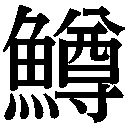

| 半分の月がのぼる空 ４: 4 | |
| 橋本 紡 | |
| (2013) | |
半分の月がのぼる空 ４
橋本 紡
＊この電子書籍は縦書きでレイアウトされています。
＊読む際のご注意、お断り等についてはこちらをお読み下さい。
半分の月がのぼる空 ４
第五話 半分の月の下、長く短い道。
１
渡り廊下をすぎると、そこは東病棟だ。僕は息を殺し、辺りの気配を窺った。人影はない。足音も聞こえない。意を決し、一歩踏みだす。さらに一歩。そこで悪い予感に襲われ、慌てて立ち止まった。後ろを見る。人影はない。足音も聞こえない。がらんとした空間が広がっているだけだ。
「はあ──」
思わず息が漏れる。風船が萎むときに出すような空気。実際、僕もちょっとだけ萎んでいるような気持ちになった。ところで僕は警戒しすぎかもしれない。そうだ、そうだよな。決して怯えることではない。いや怯えてはいないけれど。ほんの少し警戒してるだけ。ああ、そうだ。それだけだ。手の中にある包みを、僕はじっくり見つめた。ヒカリカメラと写真屋の店名が書いてある。それは夏目が取りだしてくれたフィルムを現像したものだった。ヒカリカメラのおじさんは「フィルムは大丈夫やったに。きれいに焼けとるで。確かめるか」と店頭で尋ねてきたけれど、僕は「いや、いいです」と答えておいた。里香と一緒に見たかったからだ。里香の拗ねた顔、イーだの顔、照れた顔。そのすべてが今、手の中にある。
よし、行くか。
今度こそ、どんどん歩いていく。一歩。二歩。三歩。だんだん足の動きが速くなってゆく。たいしたことないだろうと思いながらも鼓動は速くなるばかり。角を曲がると、そこからは一直線に廊下が延びていた。廊下の端、突き当たりに、里香の病室がある。さすがに病棟の内廊下に入ると、人気がないというわけにはいかない。あちこちから、話し声やら足音やらが、聞こえてくる。看護師さんがカートを押している音も、どこからか響いてきた。ふと気づくと、すぐそばの病室の入り口に、お婆ちゃんが立っていた。胆管障害で入院してるお婆ちゃんだ。そのお婆ちゃんは、僕と目が合うと、にこやかに笑った。
なんだか、まずい......まずい気がする......。
しかし、ここまで来てしまった以上、今さら引き返すわけにはいかなかった。もう東病棟なのだ。里香の病室まで十メートルくらいしかない。一分もかからずに着いてしまう。悪い予感を抱きながらも、僕は歩きだした。お婆ちゃんはまだ笑っている。その笑みが悪い予感をさらに加速させる。しかし意外となにごともなく里香の病室に着いた。
二二五号室 秋庭里香──。
小さなプレートがドアの脇についていた。何度、このプレートを見てきたのだろう。時には絶望に沈みながら、時には息苦しいほどの希望に包まれながら、僕はここに立った。プレートを見つめた。時に頬が緩んだ。時に引きつった。なによりも大切な人。この世界よりも、自分よりも、はるかに大きな存在。こんな気持ちがあるなんて、今まで知らなかった。話には聞いていたよ。映画とか漫画とか小説とか。見たり読んだりもした。けれど駄目だ。そんなものでは表現できない。軽く超えている。どんな言葉だって、どんな絵だって、すごい作家だろうが絵描きだろうが音楽家だろうが、僕の胸の中にあるものを表現するのは不可能だった。
笑みを抑えながら、僕はドアノブに手を伸ばした。
「里香、入るで」
言った瞬間、ドアノブがまわった。僕がまわしたわけじゃない。ドアノブのほうが勝手に動いたのだ。びっくりする間もなく、ドアが開いた。
「あれ、戎崎か」
病室から現れたのは、なんと夏目だった。
「なにしてるんだ」
「え、なにって──」
僕の言葉を聞こうという素振りさえ見せず、夏目は病室の中に顔をやった。なにか言っているけれど、僕にはよく聞こえない。あれ、どういうことだ。なぜ僕を無視しているのだろう。夏目は僕を押しのけるように病室から出てきた。大きな音を立てて、ドアが閉まる。里香と通じていた空間が、一枚の板によって仕切られた。今、空間は通じていない。板っきれの、ドアの、その向こう。夏目は不自然な位置に立っていた。僕とドアのあいだの、ものすごく狭い空間だ。まるで病室の前に立ちはだかっているような感じだった。
「あの、先生」
カメラのフィルムを取りだしてもらって以来、僕は夏目のことを、ちゃんと先生と呼ぶことにしていた。
「なんだ」
「その、いいですか」
「なにがだ」
「つまり里香に用事があって」
「それがどうした」
「病室に入りたいんです」
意を決し、伝えてみる。
しかし却下された。
「ああ、それは駄目だ」
「駄目って......」
「医師としての判断だ」
「なにかあったんですか。具合が悪くなったとか」
「そういうわけじゃない」
「じゃあ、なぜ......」
「医師としての判断だ」
まるで禅問答をしているみたいだった。なにをどう尋ねても、最後には医師としての判断という言葉が返ってくる。どうやら里香の病状は安定しているらしい。特に変化はない。順調というわけだ。それなのに病室には入るなと夏目は繰り返す。
「なんでいかんのですか」
さすがに声が殺気立ってくる。夏目は見下すような視線を投げかけてきた。実際に見下していたのだけれど。夏目のほうが、僕より少し......ほんの少しだけ背が高いのだ。
「なぜ説明しなければいけないんだ」
「それは......」
「おまえは里香の家族か」
「違いますけど」
「里香と結婚でもしてるのか」
「し、してないですけど」
「他人だよな」
「あの」
「ちゃんと答えろ。他人だよな」
「えっと」
「繰り返すぞ。他人だよな」
「そうです」
悔しいけれど認めるしかなかった。
僕の言葉を確かめてから、勝ち誇ったように夏目は言った。
「面会ができるのは家族だけだ。おまえは駄目だ」
「あの......でも......」
「戎崎、おまえは自分の病室に帰れ」
言うなり、夏目はさっさと歩きだした。肩がぶつかって、よろけてしまう。そんなことにも気づかない様子で、夏目の背中は遠ざかっていった。あの医者、立ち去るときに笑った気がする。気のせいかもしれないけれど。いや確かに笑った。絶対に笑った。僕は写真の入った袋を握りしめ、夏目の背中を憎しみとともに見つめた。面会不可なんて嘘に決まっている。僕を里香に会わせたくないから、そんなことを言っただけだ。
里香と一緒に写真を見るつもりだった。拗ねた顔をからかってやるつもりだった。並んで座って、顔を寄せ合って、写真を見るつもりだった。
写真ができあがってきてからというもの、僕はそのことばかり考えていたのだ。里香の照れる顔や、照れ隠しで怒る声なんかを、ずっと思い浮かべてた。しかし今、僕は病室の前でむなしく立ちつくしていた。ああ、たった一度でも夏目に感謝した自分が馬鹿のようではないか。まったく、なんて嫌な奴なのだろう。僕は急に走りたくなった。全速力だ。そして夏目の背中にドロップキックを見舞ってやろう。自然と体が動きだしていた。いくら夏目だって、背後からの攻撃は避けられないはずだ。夏目、思い知れ。
「裕一、忠告やけど、やめといたほうがいいで」
しかし誰かに肩を強く掴まれた。亜希子さんだった。
「あいつ、強いから。また殴られるだけやって」
反論したいけれど、できない。どう考えてみても、亜希子さんの言うとおりだった。夏目の足下に這いつくばっている自分が、まざまざとまぶたに浮かぶ。笑う夏目。打ちのめされている僕。泣きたくなるくらい情けない光景だった。
「ええと......」
「行くっていうんなら、しかたないけど。男やでな。そういうときもあるわ。どうすんの。行くの。行かんの。ひどい目に合うけど、その覚悟はあるわけ」
熟考した。ほんの一秒ほど。
「やめておきます」
ああ、情けない。情けないよ、戎崎裕一。
２
「ちえっ──」
呟きながら、僕は自分の病室へ向かっていた。あそこで引いてしまうのが、僕の悪いところなのだ。だけど負けるとわかっているのに喧嘩をするのも馬鹿らしい話である。殴られれば痛い。痛いのは嫌だ。ああ、そうだ。負けるが勝ちだ。
渡り廊下で立ち止まると、僕は窓越しに里香の病室を探した。病棟の端の、あの病室だ。里香は今、なにをしてるのだろうか。寝てるということはない。さっき診察を受けていたわけだから。僕は目を閉じ、病室の中にいる里香を想像してみた。くっきりした目は開いているだろうか。閉じているだろうか。もしかしたら......僕のことを考えてくれているだろうか。
あの、真夜中の病室突入事件から、ほぼ一週間がすぎていた。本当ならば毎日だって里香に会いに行きたかったけれど、里香の具合が悪かったり、僕の検査があったり、さっきみたいに夏目が邪魔をしたりで、たった一回しか里香とは会えていなかった。それだって、ちゃんと話せたわけではない。ドアの隙間から、ほんの数秒、お互いの顔を確認しただけである。そのとき僕は笑った。里香の顔が見えただけで、自然と笑みが浮かんだ。ドアの隙間から見えた里香の顔には、僕と同じような笑みがあった......気がする。すっかり痩せていたけれど、それでも彼女の笑顔はとても可愛かった。
「あはは」
とりあえず笑ってみる。ひとりで。むなしさを感じつつ。それでも笑う。
「あはは」
今日は会えなかったけれど、たいした問題ではない。僕たちは言葉を交わしたのだ。思いを交わしたのだ。これから、たくさんの時間が待っている。一日や二日くらい会えなくても、たいしたことではない。
僕は弾むような足取りで歩きだした。両脇が窓ガラスになっている渡り廊下は、春の温かな日差しに満ちていた。光の中を、まるで泳ぐように僕は進んだ。光を、温かな空気を、世界を、確かめながら病室に向かった。病室に戻った僕は、ベッドに腰かけた。写真が入った袋を脇に置き、ごろりと寝転ぶ。天井には小さな穴がいっぱい開いていた。そういう模様なのだ。入院したばかりで、体がひどくだるく、起き上がれなかったころ、あの穴を数えて、一日中すごしたものだ。七十くらい数えたところで、どこまで数えたのかわからなくなってしまう。そうなったら、やり直しだ。いつまでも終わらないひとり遊び。
首を横に動かすと、ヒカリカメラと書かれた袋が目に入った。僕だけで見てしまおうかな。ずっと我慢しているのだ。手を伸ばして、袋を持ってみる。ああ、見たいな。たまらなく見たい。だって里香が笑っているのだ。ものすごい葛藤だった。ここで見てしまったら、里香と一緒に見るという楽しみが消えてしまう。おい、裕一、戎崎裕一、よく考えてみろ。すぐに見るのも楽しいはずだ。最高かもしれない。だって里香が写ってるわけだから。だけど里香と肩を並べて見るのはもっと楽しいだろう？ きっと里香は照れるだろう？ それを間近で観察できるんだぜ？ すぐに見るのと、里香と一緒に見るのと、どちらが楽しい？
「そんなの決まっとるわ」
自らの意志を、あるいは意思を確かめるため、僕はあえて言葉を口にした。ひとりで呟いて、急に叫ぶなんて、まともな行動ではない。ただ、そうしないと、衝動を抑えられなかったのだった。偉いぞ、戎崎裕一。よく堪えた。また呟きながら、僕は袋をサイドテーブルに置いた。その瞬間、いきなり声がした。
「あのね、気持ち悪いんだけど」
慌てて顔を上げると、里香が病室の中に立っていた。何度か見たことがある青いパジャマ。サイズがちょっと大きいらしく、親指のつけ根くらいまで袖に隠れてしまっている。長い髪が、腰の辺りで揺れていた。きれいな弧を描く眉。やたらと大きくて黒い瞳。それは何度も何度も思い描いてきた姿。時には絶望し、時には狂喜し、どうして振りまわされているんだろうと自問しながら、決して忘れられなかった存在。
「ひとりでぶつぶつ言ってるんだもの」
やけにきつい目で見てくる。それもまた、よく知っている表情。容赦ないのだ、里香は。平気で人を罵倒する。馬鹿だの気持ち悪いだの、あっち行けだの、さっさと帰れだの。傷ついたさ、もちろん。何度も落ち込んだものだ。けれど里香はおもしろいんだ。なかなかいないからさ。こんな子は。慣れさえすれば、罵倒されるのも、それほど悪くないし。いや被虐趣味というわけではなく。
「里香？ なんでおるん？」
僕は尋ねていた。
まったく容赦のない視線を、里香は向けてくる。
「わざわざ来たに決まってるでしょう。当たり前じゃない」
「あ、ああ。そうやな」
「そんな簡単なこと、どうしてわからないわけ」
間違いない。これは里香だ。口の悪さではっきり理解した。途端、ものすごく嬉しくなってきた。馬鹿にされればされるほど心が弾む。本当に被虐趣味などではなく。里香なんだよ、これが。間違いない。彼女だ。
僕は思わず笑っていたらしい。
「帰る」
いきなり背を向け、里香がドアノブに手をやった。
「ええ、なんでや」
「裕一ったら変なふうに笑ってて気持ち悪いんだもの」
「いや、だって」
「わたしに会えて嬉しいでしょう」
慌てて追いすがったら、急に里香が振り向き、言った。僕の行動をすべて読んでいたらしい。彼女は意地悪に笑った。怒った顔も、帰るという言葉も、すべて演技だったのだ。ああ、僕はなにを期待していたのだろう。里香がすがりついてくるとでも？ 手術前から、やけに素直だった、つい忘れてしまっていた。里香はとんでもなく性格が悪いのだ。最初は諦めのような感覚に包まれたけれど、しばらくしたら腹が立ってきた。
「里香、おまえな」
「なに？」
「いくらなんでも程度があるやろ。程度が」
「程度？」
「だからやな」
いくら考えても、うまい言葉が出てこない。どうして僕は口がまわらないのだろうか。なんだっていいのだ。屁理屈でも叫んでおけば、少しは気がおさまる。いっそ本気で怒ってみようか。思いっきり怒鳴り散らすのだ。そうすれば、さすがに里香も怯えるかもしれない。僕だって男だ。本気で怒れば、けっこう迫力がある......といいな。
さんざん悩んだ末、僕の口から出てきたのは、こんな言葉だった。
「座れよ。ずっと立っとるの、体に悪いやろ」
実に情けない。全面降伏だ。
ベッド脇の椅子を指さすと、僕の顔を窺うように見たあと、里香は案外と素直に腰かけた。横を通りすぎ、僕はベッドに座る。里香との距離はだいたい五十センチくらいだろうか。手を伸ばせば触れられる。本当のことを言うと、僕は里香を抱きしめたかった。恥ずかしい台詞を言って、お互いの気持ちを確かめたかった。
ただ、まあ、なんだか恥ずかしかった。やっていいのかどうかわからないし、里香は怒るかもしれないし。案外と喜ぶのかな、それとも。ああ、どうなのだろうか。いくら考えても、よくわからないや。
ふと気づいた。
「おまえ、病室を出てきて大丈夫なんか」
「もちろん駄目だよ、すぐに戻らなきゃいけないの。ママが電話をかけにいってるあいだに抜けだしてきたから」
「そうか」
平静を装って、僕は言った。本当は心が震えていた。病室を抜けだしてきたのだ、里香は。ここに来るために。つまりは......僕に会うために。
やっぱり抱きしめようかな。まずいかな。
「あんまり変わってないね」
「え、なにが」
「裕一の病室。わたし、久しぶりだから」
「ああ、まあな」
「その花瓶くらいだね、増えたのって」
里香の視線を追うと、そこには確かに小さな花瓶があった。なんて名前か知らないけど、黄色い花が生けてある。
母親が三日くらい前に持ってきたものだった。
そんなの、僕だって、ろくに覚えていなかった。考えもしなかった。
「他は全然、変わってないね」
「よう覚えとるな」
「もう見られないかもしれないから、ちゃんと目に焼きつけておこうと思ったの。最後にね、手術の前だけど、ここに来たとき、全部覚えたんだよ。どこにどんな本が置いてあるかも知ってるよ」
目を閉じると、里香はいくつかのタイトルを口にした。七割が漫画で、二割が雑誌、小説は一割くらいだ。その一割は、里香が貸してくれたものだった。僕はベッド脇に積んである本と雑誌の山に目をやった。里香の言ったとおりに、本と雑誌と小説が並んでいた。
里香は覚えていたのだ。
なにもかも。
僕以上に、僕のことを。
「ねえ、あってる？」
目を開けた里香が尋ねてきた。
僕は頷いた。
「あっとる」
「よかった」
得意気な笑顔。
よし。今だ。今だよ。抱きしめるんだ。迷うことなんかない。里香は覚えていてくれたのだ。なにもかも。見ろよ、この得意気な笑顔を。たまらなく可愛いだろう。たいした距離ではない。手を伸ばせば届く。思いっきり抱きしめて言えばいいのだ。たった一言、口にすればいいのだ。
よし──。
覚悟を決め、僕は立ちあがろうとした。たとえ里香を怒らせたってかまうものか。気持ちをしっかり伝えるのだ。ここにおまえがいるのがどんなに嬉しいか。どれほど待っていたか。それを伝えよう。
けれど先に立ちあがったのは里香のほうだった。
「そろそろ戻らなきゃ」
「そ、そうか」
なにを頷いているんだ。まだ遅くはない。ほら、裕一、早く動けよ。動けって。
「またね、裕一」
「足下に気いつけろよ」
こんなこと話してる場合じゃないだろう。焦るそばから、里香はゆっくりとドアに向かう。背中が遠ざかっていく。追いかけるべきだと思っているのに、僕の足は動かない。僕はまた、大切な瞬間を逃そうとしている。臆病者め。わかっているのに動けない。臆病者め。今までもそうだったし、今もそうだし、これからもそうなのだろう。臆病者め。
「ねえ、裕一」
ドアノブに手をやった里香が、いきなり立ち止まった。
「ずっと一緒にいようね」
あの日、交わした約束。
確かな言葉。
かけがえのない気持ち。
「当たり前やろ」
自然と声が出ていた。
「ずっと一緒や」
そして里香は病室を出ていった。彼女の体に触れることはできなかった。指一本たりとも届かなかった。だけど......心にはちゃんと触れられた。ああ、そうさ。確かに触れられたんだ。
３
それにしてもだ。世の中という奴は、なぜ、こうもうまくいかないのだろうか。いいことが続いて、これからも続くと、前に進んでいけるのだと、そんな気になったりする。僕たちは。空にだって手が届きそうな気になる。百メートルを五秒くらいで走れそうに思える。そういうときがあるものだ。もちろん百メートルを五秒は無理だ。空どころか、天井にだって届かない。わかっているけれど、それくらいの気持ちを持てるときがある。
そうだろう？
誰だって、そういうときがあるものだろう？
なあ？
少し前までの僕が、まさしくそうだった。里香が笑ってくれて。照れたりなんかして。手の届くところにいて。本当に最高だった。どこまでだって行けると感じた。百メートルなんて五秒だ。天にだって手が届く。ああ、簡単だ。そんなふうに感じていた。
なのに、今の僕ときたら──。
気がついたら、ため息をついていたらしい。ベッドの向こうから、みゆきが恐ろしい目で睨んできた。
「裕ちゃん、ぼんやりしたらあかんよ」
「わかっとるって」
「なんでため息なんかついとんの」
「だってさ」
僕は目前に積みあがった教科書を見つめた。恐ろしい量だ。まさしく全科目が、なんと保健体育までそろっている。
「みゆき、おまえさ、教科書なんか一気に持ってこんでもいいやろ」
「どうせやったら、いっぺんに持ってきたほうが、わたしは楽やもん。だいたい、なんでそんなことで文句を言うとんの。大変やったんやに。めっちゃ重かったんやから。お礼を言うてほしいくらいやわ」
みゆきが怒っているので、僕はそれ以上、文句を言うのをやめた。里香に出会ってからというもの、僕はどんどん軟弱になっている気がする。他人が怒ると、つい黙り込んでしまう癖がついてしまった。目の前にいるのは、みゆきなのに。それにしても不思議なものだ。どんなに怒っても、みゆきはちっとも怖くない。里香が相手だと、たまらなく怖いのに。なぜなのか。いくらか考えて答えに至った。怒っている里香が怖いのではない。嫌われるのが怖いのだ。みゆきだったら、まあ長いつきあいだし、身内みたいなもので、嫌われるとか絶交とか、そんなのはないものな。
「裕ちゃん、聞いとるん」
「ああ、聞いとるって」
みゆきが恐ろしい目をしているので、僕は曖昧に頷いておいた。僕のいい加減さに気づいたらしく、みゆきがさらになにか言いたそうな目で見てきたけれど、もちろん、あっさり無視して、僕はノートに視線を落とした。
「あのさ、まだ五行目なんやけど」
「それがどうしたん」
「本当に八十枚も書かんといかんのかな」
「担任の先生にはっきりと言われたんやろ」
みゆきは、いささか呆れ気味だ。
「一科目十枚で八科目分を書くようにって」
僕に課されていたレポートの提出期限は、あと二週間に迫っていた。その日までにレポートを出さないと留年ということになってしまう。留年──。なんて恐ろしい響きだろう。二年をやり直すということだ。今の一年坊主と同級になってしまう。かつての同級......三年生からは蔑まれ、新しい同級......二年生からは同情される。体育の授業はひとりだけ色の違うジャージだ。机を並べる連中からは間違いなく浮くだろう。きっと敬語で話しかけてくる。まあ、それはいい。想定済みだ。しかし、もし対等に話しかけてくる奴がいたら、僕はどうすればいいのだろうか。それだけの恐怖を前にしても、レポートはまったく進んでいなかった。里香の手術やら、そのあとの騒ぎやらで、取りかかる余裕なんて、まったくなかったのだった。しかし現実は迫ってくる。少しずつ、じりじりと、しかし確実にやってくる。
迫ってきた現実の象徴こそ、僕の目の前にいる水谷みゆきだった。担任の川村に、僕の監視役を頼まれたのだそうだ。僕がレポートを仕上げるまで、みゆきはだいたい、一日おきに通ってくることになっている。
ちなみに、今日は初日である。
なんだってそうなのだけれど、最初は難しいものだ。たとえ、相手がみゆきであろうと、さすがに初日はどうしていいかわからない。洒落でも言ってみようかと思ったものの、どう考えても滑りそうなのでやめた。しかたなく、まじめにレポートを書いてみようと試みたところ、再開してわずか三行目、すなわち通算八行目にして、ぴたりと筆がとまってしまった。なにを書けばいいのかわからなかった。とりあえず日本史の教科書を捲ってみる。
「丸写しは駄目やよ、裕ちゃん」
「わかってるって」
なぜ、ばれたのだろうか。
「ほとんど丸写しでもいいけど、ちょっとずつ表現を変えて、それから三行に一回は自分の意見を入れるといいよ。最初に仮定を作っておくのもありかな。三枚かけて状況を説明して、四枚目に仮定を打ちだすといいわけ。そこから三枚は仮定の補強かな。七枚目の最初に『しかし、はたしてそうであろうか』と書いたらいいよ。ここから反証が三枚。今まで書いたことを、とにかく否定するわけ。ただし、否定しきれへんって感じで。最後の一枚がまとめ。最初の仮定が正しかったってところに落ち着かせる。主論、反論、結論」
雑誌を退屈そうにめくりながら、みゆきはそんなことをすらすら語った。あまりにも簡単に言うので、本当に簡単なことのように思えたりするのだけれど、いざやってみると、主論を作ることすら難しい。ましてや、補強なんてどうすればいいのか、さっぱりわからない。
恨めしげに、僕はみゆきを睨んだ。
「そういや、おまえ、国語の成績よかったよな」
「裕ちゃんは悪かったね」
なんだ、この冷たい声は。
「体育は得意やった」
「小学校のときまでの話やろ、それ」
やはり冷たい声だ。
いろいろ考えた末、僕は思いきって尋ねてみた。
「おまえ、なんで怒っとんの」
「怒ってないよ」
断言。あっさり。顔を上げもしない。
「ほら、手を動かす」
みゆきが不機嫌なのは、わかる気もした。せっかくの春休みなのに、病院にしょっちゅう来なければいけないのだから、楽しくはないだろう。なんとなく、それだけではないという気もしたけれど、そう思っておくことにした。
ため息をついて、僕は窓の外に目をやった。日差しはもう春のそれで、少し前まで寒そうな北風に揺れていた裸木が大きな芽をつけていた。ぽつりぽつりと葉が生えてくるのだろう。やがて花が咲くのだろう。ふたたび室内に目を戻すと、春の光が満ちた病室に、みゆきの姿があった。丸椅子に腰かけ、ファッション誌を読んでいる。その背中のラインや、髪の揺れ方や、床に落ちる影を見ているうちに、昔のことを思いだした。十年......いや、そんな昔ではない。せいぜい五、六年前か。
あのころ、みゆきはしょっちゅう、僕の部屋に遊びにきていた。いるのが当たり前という感じで、夕食を一緒に食べたり、お風呂に入っていったりしていた。母親が「うちの子になっちゃえば」なんて言うと、みゆきはまんざらでもない様子で笑った。そういうとき、僕はどういう顔をしていたのだろうか。まったく覚えていない。
そんな関係が消え失せた今となっては、かつての日々がひどく不思議に思えた。そして、いつのまにか終わってしまっていたことが、もっと不思議に思えた。きっかけがあったわけではない。彼女の胸を鷲掴みにしてしまったことがきっかけといえばきっかけだけれど、本当はもっと前に終わっていた。
いつだろう？
なぜだろう？
僕はちょっとだけ......そうさ、ちょっとだけ寂しくなった。みゆきのことが好きというわけではない。ただ、なにかが終わってしまったということが、その事実が、やけにこたえた。
みゆきが顔を上げた。視線が重なる。
「早く書かんと終わらへんよ」
まだ怒ってるよ、この女は。どうしたものかな。面倒くさいと思いながら、それでも僕はいろいろ考えた。
「あのさ、みゆき」
「なによ」
「ジュースでも飲むか。奢るぞ」
とりあえず、機嫌を取ることにしてみた。
みゆきは少し考えたあと、早口で言った。
「いらんよ」
駄目だ。失敗だ。まったく、どうすればいいんだよ。
４
救世主がやってきたのは、それから五分後だった。救世主などという言葉を使うのはひどく嫌だけれど、今回に限ってはそういうことにしてやろう。
「よう、戎崎」
やけに元気な声を張りあげながら、山西が病室に入ってきたのだった。
「一年坊主と席を並べる覚悟はできたんか」
僕は山西を睨んだ。
「できてへんわ」
「あれ、監視つきか」
みゆきのほうに山西は目をやったものの、即座に睨み返され、視線を僕に戻した。まったく情けない奴だ。たかが女に睨まれたくらいで。自分のことは棚に上げつつ、そんなことを思っていると、大きな体が病室に入ってきた。
「あれ、司もおったんか」
「う、うん」
お互いに軽く手を挙げ、挨拶する。
「おまえら、ふたりで来たんか」
「なんか暇やで」
司がそう言って頷くと、山西が恩着せがましく、つけたした。
「春休みやから、わざわざ見舞いにきたったんや。友達というのは、ありがたいものやろ。感謝しろよ、戎崎」
病院の個室なんて狭いものだから、こうして四人もいると、いくらか狭苦しく感じる。だいたい司が大きすぎるのだ。こいつ、また成長したのではないだろうか。司がいるだけで、部屋の空気が少なくなるような気がするくらいだった。
「そうや。これ、お見舞い」
司が差しだしてきたのは、赤福だった。餅をアンコでくるんだ和菓子で、いちおう伊勢名物ということになっている。
僕は大袈裟に顔をしかめた。
「どうしたん、裕一」
律儀に司が尋ねてくる。
僕は無言のまま、部屋の隅にある冷蔵庫を指さした。冷蔵庫に歩み寄った山西が、ドアを開ける。冷蔵庫の中には、すでに赤福が三箱入っていた。隣の病室の大学生からのお裾分けが一箱。看護師さんに貰ったのが一箱。母親の友達が持ってきたのが一箱。
「ごめん。気が利かへんで」
素直な司が、落ち込んだ顔になる。
その司の手から、山西が赤福を取りあげた。
「俺、腹が減っとんのやけど。食べていいか」
「裕一がいいんなら、いいけど」
「ああ、食べてかまへんよ」
僕は言った。
「好きなだけ食べてくれよ」
「じゃあ、貰うわ」
「ちょっと待って」
ずっと黙っていたみゆきが声を発した。山西に歩み寄ると、赤福を取りあげる。その箱の側面を、じっと見つめた。
「なんだよ、水谷」
山西は戸惑った様子で尋ねたけれど、みゆきは答えず、冷蔵庫の中の赤福をひとつひとつ調べはじめた。そして司が持ってきた赤福を冷蔵庫に入れると、別のを......つまり冷蔵庫の中に積んであった赤福を取りだし、山西に押しつけた。
「これから食べて」
「なんで」
「賞味期限が近いから」
当たり前でしょうという声。そして、みゆきはそれ以上、なにも言うことなく、丸椅子に戻った。ふたたび雑誌を読みはじめた。僕たちがいないかのような態度だ。話の輪に加わるとか、みんなが笑える話をするとか、女の子らしく愛嬌を振りまくとか、そういう気はまるでないらしい。すっかり冷え切っているであろう赤福の箱を持ったまま、山西が救いを求めるような視線を送ってきた。僕はゆっくり、首を横に振っておいた。どうしろというのだ、いったい。絶望したような表情を浮かべ、山西は冷えた赤福を食べはじめた。買いたての赤福はおいしいけれど、いったん冷蔵庫に入れてしまうと、餅は硬くなってしまう。格段に味が落ちる。その、硬くなったであろう赤福を、山西はもそもそと食べた。
「あのさ、みゆき」
「なに」
やはり雑誌から顔を上げない。
「ちょっと休憩していいか。司たちも来たし。屋上でさ、外の空気を吸ってきたいんやけど」
「屋上？」
ようやく顔を上げたと思ったら、疑わしそうな目で見られた。
「裕ちゃん、逃げへん？」
「逃げへんって。だいたい、どこに逃げるんさ。屋上やぞ」
「二十分だけやよ」
腕時計を見て、冷たい声でみゆきは言った。
「硬い、硬いぞ、戎崎。この赤福は硬い。それに冷たい。水谷の奴、四箱もあるんだから、どうせ食いきれんのやし、新しいのを食わせてくれてもいいよな。女というのは、ああいうことに、なんで細かいんやろうな。まるで母ちゃんみたいだよ」
屋上の真ん中に、べったり座り込んだ山西は、愚痴りながら、憤りながら、それでも赤福を食べていた。
「それに戎崎も戎崎や。赤福はそもそも、冷蔵庫に入れたらいかんのやで。餅が硬くなるからさ。伊勢の人間の常識やんか。ああ、硬い。この餅は硬い。あれ、よう見たら、賞味期限は今日やんか」
盛大に愚痴っているわりには、ひたすら食いつづけている。本当に腹が空いていたのだろう。もちろん無視して、屋上をぶらぶらと歩いた。ずっとレポートを書いていたので......とはいっても、まだ八行だけれど、こうして外の空気を吸うのは気持ちよかった。ああ、暖かいな。ああ、すっかり春だよ。
隣を歩いている司も同じことを思っていたらしい。
「もう春やね、裕一」
のんびりとした、いつもの口調。
僕は頷いた。
「そやな。春が来たな」
「ずいぶん長く入院しとるよね」
「まったくや。おとなしくしとったら二カ月くらいで退院できるって言われたんやで。その倍くらい入院しとる。参ったわ」
「参った？ 本当に？」
司が尋ねてくる。なにを言いたいのか、だいたいわかった。司にしては珍しく、僕をからかうような目をしていたからだ。ずっと入院しているおかげで、里香と一緒にいられるわけで、退院してしまったら、毎朝毎晩、会うなんてことはできない。
少し迷った末、僕は強がることにした。
「参っとるさ」
「そうか」
「本当やって」
僕たちは笑い合った。なにもかも、ばれているのだろうけれど、司なら気にならなかった。やがて屋上の端にたどりついた。錆が浮かんでいる手すりに掴まった。手のひらに、剥げかかったペンキの、ざらざらとした感じ。目の前に広がる伊勢の町はやはり貧相だった。ただの寂れた田舎町だ。
「僕さ、裕一は退院するつもりないんかって思うてたよ」
「どういうことさ」
意味を理解しつつも、僕は尋ねた。
いや......と司は戸惑った。
山西と違って素直な司は、それでも素直に言葉を重ねる。
「里香ちゃんのそばにいてあげるつもりなんかなって」
「そういうわけやないって」
「あのさ」
喋りかけた司が、いきなり言葉に詰まった。司は緊張していた。手に取るようにわかる。なにしろ顔にも態度にも出ているのだ。そのせいで、僕もまた、緊張してしまった。いいからさ、早く聞けよ、司。わかっているから。ほら、早くしろって。
「なんや」
つい急かしてしまう。
ようやく、司はその質問を口にした。
「里香ちゃん、まだ体が悪いんかな」
「あまりようないな。手術自体は成功やったんやけど」
流れていく雲を目で追いかける。よく見ると、雲は少しずつ形を変えていた。端のほうが空の青を巻き込み、巻き込まれ、だんだん細ってゆく。緩い風が吹き、僕の前髪を揺らした。同じように、僕の心も揺らしていった。
「治るとか、治らんとか、そういう病気やないからさ」
「どういうこと」
「心臓のさ、なんとかって膜があかんのやって。この前の手術でどうにか持ち直したけど、移植した膜がいつまで保つかわからんらしい。何年かは大丈夫らしいけど、それでも明日、いきなり駄目になるかもしれんし、明後日かもしれんし......とにかく、そんな感じなんさ。そのときが来るまで、そのときがいつかわからへんのやって」
自らの言葉を曖昧だなと思ったけれど、まさしく状況は、現実は、曖昧だった。
「医者にもわからへんみたいや。嫌な奴やけど、腕は立つんさ。そいつにもわからんみたいや。とにかく、そのときが来るまで里香は生きつづけるし、それまではずっと一緒にいようと思っとるよ。しばらくしたら、俺は退院してしまうけどさ。そうなったらそうなったで、毎日、見舞いに来たらいいし。まあ、本当のことを言うと、ずっと入院してたいんやけどな」
僕はむりやり笑った。精一杯、笑ってみせた。ああ、結局、本音を喋ってしまった。司のせいだ。馬鹿みたいに素直な顔をするんだ。下手な嘘をついたら、そのまま信じてしまう。まあ、いいか、司なら。こういうことを話せる人間は、司しかいない。もしかすると......僕は誰かに話を聞いてほしかったのかもしれない。ひとりで抱え込んでいけるほど、強い人間ではないのだ。けれど僕は強くなろう。形を変えていく雲の塊を見ながら、そう思った。少しでも強くなろう。里香のために。僕のために。強くならなければいけないのだ。
「そうやったんや」
司はすっかり、しょぼくれていた。大きな背中が、小さく丸まっている。
「治らへんのやな」
「ああ、覚悟はしとる。俺も、里香も、覚悟はできとる」
「すごいな、裕一」
「しかたないわ。もう決まってしまったことやから」
手のひらに、剥げかかったペンキの感触。手を少し動かすと、そのペンキが剥げて、足下に落ちてきた。
いつか、こうなる。決まっている。
「どう足掻いても変えられんのや」
それからは、僕も司もあまり言葉を交わさず、ただ眼前に広がる町の風景を眺めていた。司は何度か口を開こうとしたけれど、そのたびに思い直したように口を閉じた。僕が......いや僕と里香が向き合っている現実に、司はなにを感じているのだろうか。憤りか。憐れみか。だからこそ言葉を出せない。こいつと友達になれたのは幸運だったのだろう。なかなかいないぞ。僕だったら、下らない冗談なんか言って、気まずい空気をごまかしてしまうだろう。
すぐ隣にいる友達がひどく大切に思えた。
ありがとうと言いたかった。
気持ちはわかってるぞ、と。
だけど、そんな言葉をあっさり口にできるほど、僕は素直ではなかった。そうさ、司のように、素直にはなれない。
人間というのは変なものだ。
僕は、そういうことが、ちょっと嬉しくて、ちょっと悔しかった。
「おい、戎崎」
しかし、なにもかも壊す人間というのが、どこにでもいるものだ。声がしたので振り向くと、背後に山西が立っていた。
山西はなぜか、体を曲げ、腹を押さえていた。顔が青い。
「俺、トイレに行ってくるわ」
「どうしたんや」
「腹が痛い。冷えた赤福を一気に食べたのがまずかったらしい」
僕は頭を抱えたくなった。なんなのだ。この情緒のない人間は。ただ、司と同じように、こいつも友達だった。親切にしてやらねば。
「一番近いトイレはどこなんかな」
「階段を下りたら、右に行け」
「わかった。右やな。ま、まずい。本当にまずい」
「右やぞ。間違えるなよ」
走っていく山西の背中を見つつ、僕は意地悪に笑っておいた。本当は左なのだった。
５
看護師も人間であって、人間であるからには、春の影響を受けてしまう。谷崎亜希子は先ほどから、あくびを連発しつつ歩いていた。早く帰って眠りたい。ここのところ、忙しい日が続いていたのだ。だいたい、こんな陽気のいい日に働くなんて間違っている。パールロードを気持ちよくドライブしてくるべきだ。ただ、あのシルビア、直さなければ。エンジンの調子が悪いのだ。またお金がいる。金食い虫だ。それでも手放さないのは、当たりの車だからだった。たまにだけれど、そういうのがある。同じ車体、同じエンジン、同じ仕様でも、数十台、いや百台に一台か。やけにできがいい。エンジンの耐性とか、車体のバランスとか。実際に運転してみれば、すぐにわかるだろう。製造工程の均一化は進む一方だというのに不思議なものだった。
「ふう──」
三十回目くらいのあくびをしていると、向かいから顔を引きつらせた少年が走ってきた。いや、走るというのはちょっと違うか。急いでるのはわかるけれど、足下がおぼつかない。両手でお腹を押さえているせいだろうか。
近づいてくると、戎崎裕一の友人であることに気づいた。名前は知らないけれど。
「あ、あの」
向こうから話しかけてきた。
声が裏返っている。
あくびを噛み殺しながら、亜希子は尋ねた。
「なに」
「ト、トイレはどこですか」
彼が歩いてきたほうを、亜希子は指さした。
「あっちやよ」
「え、あっちなんですか」
「そうやけど」
途端、少年が悔しそうな顔をした。あるいは泣きそうな顔を。そのあと、恐ろしい形相になって、なにか呟いたあと、ふたたび歩きだした。まだなにか呟いてる。戎崎、と聞こえた気がした。覚えてろよ、とか。
はて、どこか具合が悪いのだろうか。だとしたら、手助けするべきかもしれない。しかし少年の背中から漂ってくる気配からすると、そういう状況ではないらしい。看護師を長くやっていると、自然とわかるようになる。緊急なのか、重症なのか。まあ、彼は放っておいても大丈夫だろう。
たらたらと歩き、長期入院しているお婆ちゃんの長話につきあったり、同じように長期入院しているお爺ちゃんにお尻を触られたりしながら、休憩室にようやくたどりついた。広さはだいたい八畳くらい。
穴の開いたソファに、夏目が寝転がっていた。
「ああ、谷崎か」
こちらを見たあと、そう声をかけてくる。
コーヒーメーカーからサーバーを取りだし、紙コップに黒い液体を注ぎつつ、応じる。
「寝てていいよ。昨日、徹夜やったんやろ」
深夜、国道二十三号で交通事故が起きて、急患が三人まとめて運ばれてきたのだ。命に関わるような怪我ではなかったものの、夜勤の夏目は大変だったろう。それにしてもタフな男だ。まったく眠らず、休まず、こうして日勤を勤めているのだから。
「目を閉じてただけだ。眠れなくてな」
ゆっくり起き上がったあと、その手を伸ばしてくる。
「俺にもコーヒーをくれよ」
少しだけ口をつけた紙コップを、亜希子は差しだした。
「ほら、これ」
「悪いな」
夏目がコーヒーをすすっているあいだに、改めて自分の分を入れる。コーヒーの湯気が顔にかかる。すっかり煮詰まっていた。案の定、飲んでみると、とてもコーヒーとは思えない味がした。まるで泥水だ。飲む気が失せ、けれど捨てる気にもなれず、ただ紙コップを持ったまま、流し台にもたれかかる。泥水みたいなコーヒーを、夏目は音を立て、すすっていた。
「ところで、あんた、ずいぶん邪魔しとるみたいやん」
「邪魔って、なんの話だ」
「裕一の。どうして里香に会わせてあげへんの」
「担当医の判断だよ」
顔を上げず、夏目は答えた。
「へえ、担当医の判断ねえ」
「そうだ」
「どういう状態を元にしての判断なのか、夏目先生、お聞かせ願えませんかね」
しかし夏目は答えない。コーヒーをすすっている。これだから男は、と亜希子は思う。困ったら黙り込む。亜希子もコーヒーに口をつけてみた。ああ、おいしくない。まずい。よくこんなものを飲めるものだと、むしろ感心する。湯気を眺めつつ、亜希子は率直に尋ねてみることにした。下手な小細工だの嫌みだの、そういうのは苦手なのだ。
「あんたと里香は長いつきあいなんやよね。もう五、六年くらいやったっけ。それだけ長いと父親みたいな気分になるもんなんかな。他の男に取られるのは気に入らんの」
夏目は露骨に嫌な顔をした。
「おい、なにを言ってるんだ」
「違うんやったら、違うって口にしたらいいだけやないの」
ああ、黙った。図星だったらしい。さて、どうしたものか。追い打ちをかけてみようかと思ったけど、もっと意地悪にいくことにした。にやにやと笑っておく。こちらを見たあと、夏目は視線を逸らし、三秒ほどたってから、また見てきた。
「谷崎、おまえな」
「なに」
「デリカシーがないとか言われたことないか」
「何回もあるな」
「おい、開き直るのかよ」
「別にいいやろ。この際や、あえて尋ねるけどさ、裕一の邪魔をしとるのは嫉妬なんかな」
「違うに決まってるだろう。ただ心配なだけだ。いや、戎崎がな、しっかりした奴だったらいいんだ。ああ、しっかりしてればな。なのに、あいつ、ふらふらしてばかりだろう。だから、納得できないっていうか。心配なだけなんだよ、俺は」
「裕一は十七やよ。あんなもんやって」
「しっかりした十七だっているだろうが」
「あんたはどうやったんさ」
尋ねたところ、夏目は言葉に詰まった。みんな、そうなのだ。しっかりしていて、立派で、責任感に溢れていて、有能で、実行力があって、みんなに等しく慕われる十七歳なんかいるわけがない。人間というのは、そもそも出来損ないだ。何年も、あるいは何十年もかけて、少しずつ学んでいくしかない。そして恐ろしく理不尽なことに、たっぷり学んだころには、最初に学んだことの大半を忘れていたりする。結局、どこまで行っても、いつまで生きても、不完全なまま。不完全に生まれ、不完全なまま死ぬ。ああ、誰だったか。似たようなことを言った作家がいた。ぼくは不完全な死体として生まれ何十年かかって完全な死体となるのである......だったか。実に下らない言葉だ。完全な死体などない。死んだら逃げられると思っているから、そんな甘い言葉を吐くのだ。現実はもっと冷酷だった。たとえば死体の処理をしてみれば、すぐに気づくだろう。看護学校を出たばかりの新人でも知っている。
「気持ちはわかるけど、認めてやんなよ」
「なんでだ」
「あの子も頑張って大人になろうとしとるみたいやよ」
「戎崎が？」
「そんなに変わらんのやけどね。すぐに変われるもんでもないし。ただ、顔つきとか、ちょっと違ってきとるような気はするかな。あの子はあの子なりに、大人になろうとしとるんやと思うよ。たぶん守りたいものができたんやろ」
「守りたいもの、か」
夏目の呟きが聞こえてきた。紙コップを両手で持ったまま、背中を丸めている。表情は見えなかったけれど、見えないほうがいいのかもしれなかった。なんとなくコーヒーを一口飲んでしまい、亜希子はむせた。まずい。吐きそうな味だ。しかし見れば、夏目はそのコーヒーをすすっていた。背中を丸めたまま。
「守れるのかよ、あいつが」
「無理やろ」
夏目の問いに、亜希子はあっさり答えた。
「じゃあ意味がないだろう」
「あるよ」
「どういうことだ」
「たとえ守りきれやんでも、守ろうとするだけで意味はあるってこと。裕一はもう覚悟を決めとる。大人になろうとしとる。里香もそれをわかっとる。無理やと悟っとる。聡いからさ、あの子。そやけど、聡いで、他のこともわかっとる。ちゃんとな、わかっとるんやよ。なんで裕一が大人になろうとしとんのか。もしかしたら、あんたよりも、知っとるかもしれんよ」
これ以上、言葉は必要なかった。だから亜希子は黙った。泥水みたいなコーヒーを流しに捨て、コーヒーメーカーから取りだした豆屑も捨て、新しい豆をセットしたあと、抽出ボタンを押した。熱いコーヒーが、ぽたぽたと音を立てつつ、サーバーの中に落ちはじめた。抽出が終わるまで、ほぼ三分。考えるには十分な時間だ。
「ほら、こっちを飲みな」
「なんだよ、いきなり。こぼれるだろうが」
「さっさと飲みなよ」
夏目の手からカップを取りあげ、新しいコーヒーを渡した。一口飲むと、彼は嬉しそうに言った。ちょっと子供っぽい顔になっていた。
「おい、これ、うまいな」
「作った人間の腕がいいんやよ」
「おまえはボタン押しただけだろうが」
「まあね」
しばらく笑いつづけた。誰かが廊下を駆けていく足音。カートを転がしているから、きっと看護師だろう。続いて、笑い声が聞こえてくる。それが去ってしまうと静かになった。床で揺れる春の日差しを、亜希子はじっと見つめながら、言葉を継いだ。
「そうやね。わたしはボタンを押しただけなんや」
選んだのは彼らだ。
６
コートを着てきたのは明らかに間違いだった。あまりの暑さに汗が噴き出す。朝に確かめた天気予報で......予報士のお姉さんがやたらと可愛いのだけれど、その彼女が「今日は久しぶりに冷え込みますよ。服装に気をつけてくださいね」なんて言うものだから、僕はちゃんとコートを着てきた。服装に気をつけた。ところが、だ。天から降り注ぐ日差しはやけにぎらぎらしていて、むしろ初夏のような感じだった。
「コートなんか着とれんわ」
悪態をつき、僕はコートを脱いだ。高校入学のときに買ってもらったダッフルコートは、安物だけあって、ひたすら重かった。脱いでみると、一気に体が軽くなる。安堵の息が漏れた。しかし、コートの下から、現れたのはブルーのパジャマだった。通りかかったおじさんが、不思議そうに見てきた。駅前通りの真ん中に、パジャマで立ちつくしている僕を。三秒ほど迷った末、僕はふたたびコートに袖を通した。病院を抜けだす非常識さはあっても、パジャマで町を歩きまわる非常識さは持ち合わせていなかった。
「暑い。暑すぎるよ。お姉さんの馬鹿」
愚痴を言いながら、商店街のアーケードに入った。日差しがなくなったせいで、少しだけ涼しくなった。そして寂しくなった。昼間だというのに、商店の半分はシャッターを閉めたままだ。どこの町でもそうらしいけれど、伊勢でも町の空洞化が急速に進んでおり、商店街は寂れきっていた。まともに営業している店のほうが少ないくらいだ。シャッター通りを眺めていると、昔のことを思いだした。ああ、ここだよ。入ってすぐの、右側の店。昔は靴屋だった。父親が白いエナメルの革靴が欲しいと言ってたとき、僕がこの店で見つけたのだ。あったよって教えたら、父親はすごく喜んで、あとで鯛焼きを買ってくれたっけ。
その靴屋も、今はシャッターを下ろしている。鯛焼き屋も。
県内だと伊勢は中心都市扱いされているけれど、人口は減るばかりで、駅前のデパートも閉店が決まったという噂だった。僕たちが使うような店も、たとえば安い定食屋とかゲーム屋とかも、だんだんなくなっている。僕はそういうのが寂しくてたまらなかった。だから、ここを出ようと思っていた。どこでもいいのだ。遠くへ行く。伊勢ではない場所へ。
「裕ちゃん？」
いろいろなことを考えながら......考えるそばから消えていくことばかりだけれど、歩いていたところ、声をかけられた。
振り向くと、そこに立っていたのはみゆきだった。
「よう、みゆき」
「また病院抜けだしとるの」
「ちょっとな」
「なんで」
里香がさ、という言葉を僕は呑み込んだ。本当のことを言ったら、馬鹿にされそうだったからだ。手術を終えた彼女が素直になったかといえば、そんなことはまったくなく、わがままだらけの意地悪女だった。今朝、看護師さんが里香から預かったと言って、折りたたんだメモを持ってきてくれた。どきどきしながら、そのメモを開いたところ、書かれていたのは、たった一行だけだった。
井伏の山椒魚──。
僕にとってみれば、実にわかりやすい内容だった。井伏二の『山椒魚』を買ってこいというわけだ。ろくに会えないのに、それでも命令だけは伝えてくるのだから、里香はまったく身勝手な女だ。
「本が読みたくなったんさ」
使われている現実を知られたくなかったので、僕は嘘をついておいた。まあ、小さな嘘だ。読みたくなったのは、僕ではなく、里香なわけで。
「買いにいこうと思って」
「なんて本？」
「井伏二の『山椒魚』やよ」
みゆきは頷いた。納得したような顔。なんだか勝手に理解されてしまった感じだった。けれど僕にはさっぱりわからなくて、そのせいか少し妙な気分になった。
「古川書店に行くの」
「そうやよ」
「わたしも行こうかな。雑誌、見たいんさ」
僕たちは並んで歩くことになった。シャッター通りを進む。みゆきとふたりきりで町を歩くなんて本当に久しぶりだった。半年......いや一年？ あるいは二年？ よくわからなくなるくらい久しぶりだ。そっと見ると、僕の肩の辺りでみゆきの髪が揺れていた。なんだか不思議な感じだった。みゆきはもっと背が高かった気がする。横を向いたら、そこにおでこがあるくらい。僕の背が伸びたのか。伸びたのは、別のものなのか。
「裕ちゃん、レポート、ちゃんとやっとるの」
「やっとるさ」
「今日も午後から見にいくでな」
「たまには休んでみるってのはどうや。一日おきなんて、おまえも大変やろ」
優しさたっぷりに、僕は言ってみた。
しかし、その優しさを少しも理解することなく、みゆきは睨んできた。
「さぼっとったら、本当に留年するよ」
「そやから、さぼるとかやなくて。おまえが大変やろうから言うとんや。おまえが来んでも、ちゃんとやるって」
「嘘つき」
おいおい、僕がいったい、なにをしたというのだ？ どうして、こんなにぎすぎすしているのだ？
さすがに声が低くなる。
「嘘やないって」
「とにかく、行くで」
「わかったわ」
そのあとは僕もみゆきも不機嫌に押し黙り、シャッター通りを歩きつづけた。肩を並べていても、歩みが一緒でも、心はちっとも一緒ではなかった。
五分くらいで本屋に着くと、僕は階段を指さし、言った。
「俺、二階、見てくるで」
ろくに返事もしない。こっちを見もしない。
「じゃあ、あとで」
腹が立ったけれど、いちいち文句を言うほどのことでもなかったので、僕は二階に向かった。この本屋は一階に雑誌を置いていて、二階が漫画や文庫というふうになっている。井伏井伏と呟きながら、文庫の棚を見ていったけれど、『山椒魚』が入っているものはなかった。井伏二の本はわりとそろっているけれど、たまたま目当てのものが欠けていた。
あれ、どうしよう。
里香に怒られる。喚かれる。彼女のことだから、思いっきり詰るだろう。焦って何度も確認してみたけれど、ないものはなかった。こうなったら隣駅の本屋も見てみるか。遠まわりになるし、面倒くさいけれど、里香に怒られるよりはいい。
「裕ちゃん、どうしたん」
気がつくと、すぐ隣にみゆきが立っていた。
僕は本棚を指さした。
「欲しい本がたまたまないんや」
「それやったら古本屋に行こう。『山椒魚』やったら、あると思う。名作やし」
「ああ、なるほど」
線路を渡った向こうに、古本屋があるのだった。隣駅に行くより、ずっと近い。みゆきは歩きだした。揺れる髪を見ながら、僕はあとを追った。みゆきは店を出ると左に曲がり、最初の十字路で商店街のアーケードからはずれた。
「おまえ、本屋はもういいんか」
「雑誌、もう買うたよ」
みゆきは右手を少し上げてみせた。本屋の紙袋を持っていた。
「なに買うたんさ」
「受験雑誌」
「ええ、もうか。早ないか」
「なにを言うとんの、裕ちゃん。むしろ遅いくらいやよ。早い子は、とっくの前に準備を始めとるもん」
「そんなものなんか」
「裕ちゃんもレポートに手間取っとる場合と違うに」
僕はずいぶんと長く入院しているので、高校生活のタイムスケジュールからはずれてしまっている。そのせいか、実感がまったくなかった。けれど考えてみれば、僕たちはもうすぐ三年になるのだ。受験やら就職やらを考える時期だった。
「まずいな」
焦りに襲われ、僕は言った。
みゆきが頷く。
「本当にまずいよ」
ところで、みゆきはどうして帰らないのだろうか。目当ての雑誌はもう買ったのに、古本屋にも、わざわざつきあってくれるのだろうか。
「おまえも古本屋でなんか買うんか」
「そういうわけやないけど」
あれ、少し言いよどんだ......気がする。わけがわからなくて、なにをどう尋ねていいのかわからなくて、僕は無言のまま歩きつづけた。みゆきのほうもやはり無言のままだった。鉄工所の前を通ると、金属の焼ける匂いが漂ってきた。青白い光が作業場の奥で輝いている。目を閉じても、光はしばらく闇の中に残っていた。青白く爆ぜていた。
古本屋で『山椒魚』はすぐに見つかった。
すっかり色褪せたそれは、店の前のワゴンに詰め込んであって、裏表紙をめくると右隅に鉛筆で"50"と書かれていた。五十円というわけだ。いちおう、中をぱらぱらと確認する。古びた本の匂いがした。奥付には昭和三十四年と書かれている。
本を持って、店内へ。
明るい場所からいきなり薄暗い店内に入ったので、一瞬、ものが見えにくくなった。引き戸に手をかけたまま立ち止まり、目を瞬かせる。薄暗さに慣れたそのとき、僕は気付いた。そうさ、見つけたんだ。
「あ──」
棚の一番上、右隅、黄色い背表紙が五冊並んでいた。『チボー家の人々』だ。僕はびっくりして、その五冊を眺めた。手術の前、屋上で渡された。布団で半分隠れた顔。ゆっくり読んでね。手術のあいだ、ダッフルコートにくるまって読んだ。そして、あの言葉を見つけた。きっと永遠に忘れない言葉。自分の名を忘れても、年を忘れても、なにもかもを失っても、きっと最後まで残る言葉。僕は今、古本屋の中にいなかった。あの夜の、あの廊下の、手術室の前の廊下にいた。尻に冷たい床を感じていた。
みゆきが尋ねてきた。
「あの本、欲しいの？」
ようやく僕は現実に、つまり古本屋に戻った。手術中の空気を、床の冷たさを、少しだけ感じつつ。
「そういうわけやないけど」
「ずいぶん熱心に見てるから」
「ああ、まあな」
あるアイデアが浮かんだのは、その瞬間だった。
「やっぱり買うわ」
僕はそう言っていた。
いきなり言葉を翻したので、みゆきは驚いたみたいだった。
「本当に？」
「滅多に見つからへんやろ」
自然と早口になっていた。まったくだ。こんなに古くて、しかもフランス文学なんて、滅多に見つからない。ものすごい幸運だった。その幸運に興奮しながら、背伸びして、どうにか五冊を手に取った。まとめてシュリンクされている。ずっしりした重さが心地よかった。
「すごいわ。本当に運がよかった」
興奮したまま、僕は『山椒魚』と『チボー家の人々』を持って、早足でレジに向かった。雲の上を歩くなんて表現があるけれど、まさしくそんな感じだった。なにも考えず、とにかく浮かれながら、僕は突き進んでいた。店の奥には、棚に並ぶ古本と同じくらい古びたおじさんがいて、僕の顔を少しだけ確認してから、値段を読みあげた。
「五千円と、五十円。あわせて五千五十円やな」
「え──」
固まった。五千五十円だって？ そんな高い値段は考えてもいなかった。いや、そもそも、値段なんて気にしてもいなかった。衝動。行動。しかし、よく見れば『チボー家の人々』には、確かに五千円と書かれた値札が貼りつけてあった。一冊千円。五冊だから五千円。珍しい本だし、絶版になっているらしいので、そんな値段がついているのだろう。プレミア価格というわけだ。決しておかしな話ではない。五千円......それは僕の一カ月分のお小遣い全額だった。そしてもちろん、月半ばの今、そんなお金なんて残っているわけがなかった。僕の財布に入ってるのは千円ちょっとだ。ああ、馬鹿みたいだ。値段も見ないでレジに持っていくなんて。ものを知らない子供みたいではないか。なにをしているのだ、僕は。
「五千五十円や」
無愛想に、おじさんは繰り返した。窺うように、僕の顔を見てきた。
「はい」
頷いたものの、どうしていいかわからない。ただ焦るばかり。五千円......いや、五千五十円か。諦めるしかないのはわかりきっていたけれど、どうしても諦めきれなかった。それに、お金がありませんなんて、恥ずかしくて言えそうになかった。ただ、ないものはないのだ。謝るしかない。頭を下げるしかない。本を棚に戻して、すごすごと引き下がるのだ。ほら、さっさと謝れよ。すみませんって。お金が足りないんですって。
迷っていたら、とんでもないことが起きた。右手に財布を持ったみゆき。左手には五千円札。その五千円札を、レジに置いた。
言葉はなく、しかし雄弁に、おじさんが視線で尋ねてくる。
いいのかい？
おじさんはすべてを悟っていた。値段を確かめずにレジに行き、金が足りないと知って焦り、横にいた女の子が出してくれて、それを受け取っていいかどうか迷っている子供。それが僕だ。みゆきの顔を見た。相変わらず無表情だった。怒ってるわけでも、笑ってるわけでも、馬鹿にしているわけでもない。どうしていいかわからず、ふたたびおじさんを見ると、まだ雄弁に尋ねていた。
いいのかい？
彼の視線が、ますます僕を焦らせる。あっさり受け取っておくべきなのかもしれなかったけれど、そうしたくない僕がいた。妙なものを背負い込んだ僕だった。下ろせよ、そんなもの。誰かが言った。つまらないもの背負ってるんじゃねえよ。おいおい、下ろしてどうするんだよ。別の誰かが言った。それは最後まで背負っていなきゃいけないものだろう。
結局、僕は判断を下せなかった。状況に流された。財布を出し、五十円玉を見つけると、五千円札の横に並べた。
選んだわけじゃない。
楽な道に進んだだけだ。
７
古本屋を出ると、ふたたび日差しが僕たちに降り注いだ。輪郭のくっきりした影が、地面にふたつ、落ちていた。大きい影が僕で、その横の小さい影がみゆきだった。僕は無言のまま、歩きだした。どんどん歩いていった。右手に持っている袋の中には、六冊の本が入っている。やたらと重くて、投げだしたいくらいだった。さっきまで浮かれきっていたというのに、今の僕は沈み込んでいた。なぜそんなことになってしまったのか、考えてもまったくわからなかった。いや、そもそも、ちゃんと考えられなかった。
いっそ、あのままならよかったのだ。適当に謝って、適当に笑って、まあ情けないけどさ、それだけのことだった。親に泣きついて、小遣いの前借りをしてから、買いにいったさ。もし前借りを許してもらえなかったら、売れてしまうんじゃないかと怯えながら、二週間、次の小遣いを待ったことだろう。そうさ。それだけのことだったんだ。
なのに、みゆきが、余計なことをするから──。
そんなことを考えている自分に気づき、僕はさらに落ち込んだ。悪いのはみゆきではない。僕のほうだ。いや違うのか。誰が悪いというわけではない。なのに、僕はどうして、落ち込んでいるのだろうか。どうしようもなく理不尽な感情だった。自分がなにに苛立ってるのかさえ、僕にはわからなかった。おそらく......無邪気に喜んでおくべきだったのだろう。ありがとうって。あとで返すよって。みゆきに言えばすむだけなのだ。けれど、そうできない自分がいた。ひどく小さな自分だった。
「裕ちゃん、それ、見つかってよかったね」
みゆきが言った。
「目当ての本が見つかるなんて滅多にないに」
「そやな」
僕の声には抑揚がなかった。古い町屋の前を、並んで歩いていく。ふたたび鉄工所の前を通りかかる。やはり金属の焼ける匂いがする。火花が爆ぜている。今度はすぐに目を閉じず、僕は顔を上げた。太陽をまっすぐ見つめた。それから目を閉じた。火花ではなく、太陽の残像がちらついた。
「その本、読みたかったの」
「え──」
「わざわざ買うくらいやで、読みたかったのかなって」
「いや、そういうわけじゃなくて」
ああ、なんて言えばいいのだろう。喋るのも億劫だ。苛立ちが......いや、苛立ちかどうかもわからないけれど、やたらと強い感情が、すべてを邪魔している。それにしても、さっきからみゆきはよく喋る。いや、違うのか。僕が黙っているだけなのか。
「欲しかっただけなんや」
なんとか、そんな言葉を絞りだした。
納得したのかしてないのか、みゆきは曖昧に頷いた。
「そうなんや」
結局、別れるそのときまで、僕はありがとうを言えなかった。お金をいつ返すなんてことさえ、まったく口にできなかった。
「はあ──」
僕はため息をついた。ベッドの上には『山椒魚』と『チボー家の人々』が放り出してある。最高のアイデアだったのだ。本当に。完璧だったのだ。なのに今、僕はすっかり落ち込んでいた。どうすればいいのかさえもわからなかった。コートを着たまま、僕はベッドに寝転がった。『チボー家の人々』を下に敷いてしまったので、その角が腰の辺りに突き刺さって痛い。しかし体勢を変える気にもなれず、痛みを味わったまま、僕は寝転びつづけた。僕はどうして、こんなに滅入ってるんだろうか。
五千円か。みゆきが払ってくれた。
体の下に敷いている、ごつごつした塊は、だからこそ手に入れられたのだ。みゆきが買ってくれたようなものだった。もちろんお金は返すつもりだけれど、自分で買いたかった。誰かに手伝ってもらうものではないのだ。そういうのとは違う。他の女の子だなんて最悪だ。
ドアが鳴った。ノックの音。
「はい」
母親か。看護師さんか。そのどちらでもなかった。
「この馬鹿、また抜けだしてただろう」
入ってくるなり、夏目はベッドを蹴飛ばした。
「いい加減にしやがれ」
「は、はい」
素直に謝るべきなのかもしれなかったけれど、いろんな気持ちに振りまわされているせいでそんなこともできず、僕はただ曖昧に頷いた。ところで、どうして夏目が僕のところに来るのだろう。夏目は僕の担当医じゃないのに。
「あの、なんですか。抜けだしのことやったら──」
「いや、それはどうでもいい。いや、よくないけど、そうじゃなくてだな」
「はい」
「その、だな」
夏目にしては珍しく、やけに曖昧な態度だった。戸惑っていると、僕を少しだけ見てから──今日はよく、こんなふうに人に見られる──そのあと尋ねてきた。
「戎崎、風呂入ってるか」
「週に三回入ってますけど」
本当はもう少し頻繁に入りたいのだけれど、週三回しか駄目という指示が担当医から出ているのだった。案外と風呂は体に負担をかけるらしい。
「なるほど。三回か。もう少し入ったほうがいいな」
けれど夏目はそう言った。
「なにを言ってるんですか。週三回って指示出てるんですよ」
「おまえの担当は幸田だったな。あいつは俺の後輩なんだ。先輩の俺がいいって言うんだから、いいんだよ。ほら、こい」
首根っこを掴まれ、引っ張られた。夏目が勢いよく歩いていくので、倒れそうになった。
「痛い痛い痛い。なにするんですか」
「まあ、来いよ」
「なんで僕をいつも、そういうふうに引っ張るんですか」
「まあ、癖だ」
「そんな理不尽な。ああ、本当に痛いですよ。こけますって」
喚いているあいだに、入浴室に着いていた。入浴室は僕の病室から近いところにあって、小さな銭湯という感じだ。十人くらい入れる湯船に、十人くらい座れる洗い場。入院患者は指定された日だけ、風呂に入ることができる。僕は昨日、入ったばかりだった。
「つきあえよ」
言って、夏目は白衣を脱いだ。シャツを脱いだ。
「ほら、おまえも脱げ」
「なんで僕も風呂に入らなあかんのですか」
「連れションじゃなくて、連れ風呂だ」
夏目はさっさと脱衣所から風呂場へ入っていった。なにを考えてるのだろう。この医者は。わけがわからない。亜希子さん以上に意味不明だ。病室に戻ろうかと思ったけれど、なぜだか、そんな気にもなれなかった。まあ、いいか。風呂に入るの、気持ちいいものな。すっきりしない気分だし。こんなときは風呂もいいかもしれない。僕はパジャマを脱ぎ、風呂場に入った。湯気が押し寄せてくる。夏目はもう、湯船に肩までつかっていた。お湯で体を流し、僕もまた湯船に身を沈める。
「熱いな、この風呂。病院のくせに」
「そうですね」
「俺は熱いほうが好きだから、ちょうどいいけどな」
「僕はもう少し温いほうがいいですけど」
ああ、どうして下らないことを話しているのだろうか。そう思ったのが顔に出たのか、夏目が黙ってしまった。僕も黙っていた。湯気がもうもうと上がっている。斜め前に顔だけ浮かべた夏目がいた。沈黙はどれくらい続いたのだろう。一分か。二分か。あるいは、もっとか。
「昨日な、谷崎に説教されちまったよ」
話しかけてきたのは、夏目のほうだった。
「亜希子さんにですか」
「ああ、ひどいものだったよ。あいつ、容赦ないんだよな」
「ないですよ。亜希子さん、誰にでも怒鳴りますから。前に多田さんという人が入院しとったんですけど。本当に死にそうな年のお爺さんで、その死にそうなお爺さんを、大声で罵倒してましたから」
「ひどいな、それは」
「本当にひどいですよ。まあ、多田さんも多田さんでしたけど」
「どういうことだ」
「だいたい毎日、そうですね、三回くらいは亜希子さんのお尻を撫でてましたね」
「おい、死にそうなお爺さんだったんだろう」
「そっちのほうの欲は枯れなかったみたいです」
「見習いたいな、それは」
「まったくですよ」
僕たちは声を揃えて笑った。亜希子さんのことなら、いくらでも話すことができた。案外と慌てん坊なところとか、意外と優しいこととか、怒ると鬼のように怖いこととか。この世に、もっと亜希子さんみたいな人がいればいいのにと思った。僕と夏目だって、いくらでも、こうして笑いながら話せるかもしれない。
「どうして説教されたんですか」
「なにが」
「亜希子さんに」
「いや、たいしたことじゃないんだけどな」
夏目は僕から視線を逸らし、顔を上げた。ずっと同じほうを見ているので、なにかいるのかと思い、視線を追ってみたけれど、見つけられなかった。ただ湯気が舞っているだけだ。けれど夏目は見ている。確かに、なにかを、見ている。夏目の目には、いったい、なにが映っているのだろうか。
「本当にたいしたことじゃないんだよ」
「そうですか」
「ああ」
「亜希子さん、たいしたことじゃなくても怒りますもんね」
少しのぼせてきた。僕は両腕を湯船から出し、縁に乗せた。ふう、という息が自然と漏れる。まるでおじさんみたいだ。
「今日、失敗しましたよ」
「失敗？」
「つまらないことなんですけど」
僕はさっき起きたことを話した。欲しい本を見つけたこと。自分のお金で買いたかったこと。なのに、お金が足りなくて、友達の女の子に出してもらったこと。いつもの僕なら、こんなことを夏目に打ち明けたりしないだろう。だけど今は、風呂の湯気のせいか、他のなにかのせいか、あるいは夏目にさえもすがりたいくらい落ち込んでいるのか、よくわからないけれど、言葉が出てきた。
「ありがとうって言えなかったんですよね。なんでかわからんけど」
「そうか」
「なんでですかね」
「知るか、そんなの。おまえの気持ちなんざわかるか」
夏目は笑いながら言った。ああ、と僕は思った。本当はちゃんとわかっているよ、こいつ。そうさ、そうなのだ。真剣な顔でする話ではない。もちろん僕も笑った。
「わからないんですよね、自分でも」
「たぶんプライドなんだろうよ。男だしさ。女にはいい格好をしたいよな。だけど、できないから、落ち込むわけだ。単純なことだし、たいしたことじゃないとわかっていても、それでも落ち込むよな」
「確かに」
「まったく、悲しくなるくらいできないよな、いい格好なんて」
「できないです」
「そういうのに落ち込んでいる自分に、また落ち込んだりするよな。たいしたことじゃないんだからさ。軽く礼を言っておけばいいのに、言えなかったりするとな。そういう自分の小ささに情けなくなるよな。まあ、これはありがちな例だけど」
「ああ、ありがちですね」
「ありがちというのは、実際によくあるから、ありがちなわけだからな」
「なるほど」
「あと、女があっさり出してきて、そのわかってる感じにも落ち込むよな。こっちは焦ってるのに、向こうはそうじゃなくてさ。馬鹿にされるほうが、むしろすっきりするだろう」
「しますね、します」
「ありがちだよな」
「ありがちですね」
僕たちはそれからも、ありがちだありがちだと言っては頷き合った。
「不甲斐ないのは嫌だよな」
「嫌ですね」
「まあ、そういう自分の不甲斐なさを認めるしかないんだろうな。そのほうがよっぽど男らしいんだろうし。それにな、戎崎」
「なんですか」
「楽だぞ。認めてしまったほうが」
「やっぱり......か」
「小さい自分を認めてしまったほうが生きやすいな」
「さすが大人ですね」
「伊達に薄汚れてないぜ」
僕たちはまた笑った。笑い声が風呂場の中で反響して、まるで何十人も笑ってるみたいだった。僕たちはそれから、あまり喋らず、さっさと髪と体を洗って、風呂を出た。廊下に出たときには、ふたりともすっかり温まり、湯気を立てていた。
「おい、戎崎」
「なんですか」
「これからいつでも里香に会っていいぞ」
「え......」
「病状も落ち着いてきたしな。ただ、あちこち、つれまわしたりするのは駄目だ。そうだな、午後に一回、十五分くらい散歩につれていってやれ。屋上に行って戻ってくるくらいが、ちょうどいいだろう。頼んだぞ、戎崎」
一方的に、しかも早口で言って、夏目は去っていった。その背中が見えなくなるまで、僕はずっと考えていた。どういう心境の変化なのだろう。ちょっと前まで、里香と会うのを邪魔していたのに。頼んだぞ、だって。まあ、それはいいか。あの医者の頭の中なんて、いくら考えたってわからない。むしろ気になったのは、里香に会っていいと言うためだけに、夏目が来たのかもしれないということだった。それで、わざわざ風呂に誘ったと。
どうしてそんな面倒くさいことをしたんだろう。
僕は考えた。ああ、考えに考えた。そして、ある結論に至った。もしかすると、夏目は僕が苦手なのではないだろうか。僕が夏目を苦手にしているのと同じくらい、あいつも僕が苦手なのかもしれない。
とにかく里香と自由に会えるのはすばらしいことだった。最高のことだった。
その日の午後、言ったとおり、みゆきがやってきた。相変わらず無表情で無口で、全然楽しそうではなくて、義務感いっぱいで、きっちり一日おきにやってくるのだった。病室に入ってきたみゆきは、ろくに僕の顔を見ることなく丸椅子に腰かけ、持ってきた自分用のテキストを開いた。
「今日は古文やんな。範囲、ちゃんと最後まで読んで」
「もう読んだで」
「え？ 読んだの？」
「レポートも書いてみたんやけどさ。ちょっと見てくれるかな。こんな感じで大丈夫やと思うか。自分じゃ、よくわからんでさ」
ルーズリーフを差しだすと、みゆきは信じられないという顔で、ようやく僕を見た。
「もう書いたん？」
「まだ半分ちょっとやけど。後半はこういう感じで書くつもりやってのを、つまり要約だけ書いてある」
「本当に？ 半分も？」
受け取ったルーズリーフを、みゆきはじっくり読みはじめた。僕はそのあいだ、ただ待っていた。読み終わるまで、だいたい五分くらいかかっただろうか。さらにびっくりした顔で、みゆきは僕を見てきた。
「よく書けてると思うよ」
「そうか。よかった」
「ちょっと推論が甘いところがあるけど、これでいいと思うよ。後半の要約部分は、そのまま書くと長くなってしまうんで、項目をひとつはずしてもいいんやないかな」
「わかった。今日中に完成させるわ」
返してもらったルーズリーフを広げ、僕はシャーペンを走らせた。大事なのはここからだ。今まではわりとうまくいっている。それにしても、みゆきの奴、すごく驚いてるな。まさか半分も書いてるとは思わなかったのだろう。さて、あれを出すか。軽くだぞ、軽く。なんでもないという感じだぞ。
「あのさ、みゆき」
できるかぎりのさりげなさを装いつつ、僕は一枚の紙を差しだした。
「これ、持っといてくれよ」
紙を受け取ったみゆきは、わけがわからないという顔をした。
「借用書？」
「ああ、金を借りたからな」
紙には、こう書いてある。
借用書
私こと戎崎裕一は、水谷みゆきより金五千円を借りました。
一カ月以内に必ず返済します。
あとは日付と、僕のサインだ。自分で書いたので字は汚いし、まともな借用書とは言えないけれど、とりあえず十分だろう。
「こんなの書かんでもいいのに」
「形さ。いちおうな。形だけ」
僕は笑った。
「金を返したら捨ててくれ」
「そやけど」
みゆきは複雑な顔をしていた。まあ、そうだろう。高校生同士の、金の貸し借りで、借用書を作るなんて大袈裟もいいところだ。けどさ、こうしたほうがいい。でないと、僕の気持ちがすっきりしないから。
「ありがとうな、みゆき。助かったわ。金がなかったから、焦ってしもうたんや。あそこで買わんかったら、買い逃しとったかもしれんし。本当に助かった。感謝してる」
僕は勝手に喋りつづけた。ああ、顔が引きつっていないといいな。それにしても、みゆきにありがとうなんて言ったのは、本当に久しぶりだ。いや、もしかすると初めてかもしれない。思いだそうとしても、思いだせないし。
まだ戸惑っているみゆきに、僕はさらに言った。
「取っといてくれよ。本当にありがたかったで、いい加減にしたくないんさ」
その言葉は、するりと出てきた。どもったりしなかったし、顔が引きつったりもしなかった。本当の言葉だったからかもしれない。
みゆきはゆっくりと、なにかを呑み込んだ。
「じゃあ預かっとくね」
「頼むわ」
「ちゃんとしまっておくから」
言葉の通り、みゆきは紙を折り曲げたりせず、わざわざノートに挟んでから、自らの鞄に収めた。その日、僕は古文のレポートを仕上げた。たったの一日で最後まで書ききった。まさしく絶好調だった。
災い転じて福となすだ。
８
「悪いけど。ごめんな」
あっさりしたものだった。本当に簡単だった。水谷みゆきは、その言葉をすでに、受け入れていた。決して曖昧な気持ちで臨んだわけではない。ものすごく緊張したし、悩んだし、胸が破裂するんじゃないかというくらいの気持ちで呼びだしたのだ。電話をかけるときは、数字を押す指が震えた。待ち合わせ場所は錦水橋の上。竹久君の家と、自分の家の、中間だから。時間は昼の三時。こちらで指定したくせに、電話をしながら、メモ帳に錦水橋と三回も書いていた。三時のほうは五回。やたらと強く書いていたらしく、そのメモを剥ぎ取ったら、下の紙に錦水橋と三時というシルエットが刻まれていた。家族にばれないよう、二、三枚、余分に剥ぎ取った。とにかく、それくらい緊張したのだ。胸が弾んだ。なのに、結果と来たら、実にあっさりしていた。
「水谷はいい子やと思う。お世辞と違うて。そやけど、俺、彼女がおるしさ」
「うん」
頷いている自分がいた。情けないことに、彼がすべて言い切らないうちに、もう諦めてしまっている。
「そやから、ごめんな」
「うん」
頷いてから、うつむく。そのあいだに帰って欲しいと思った。顔を上げたとき、どんな表情を見せればいいかわからないから。笑えるほど強くはないし、泣くほど弱くはない。幼馴染みの戎崎裕一と違って、竹久君は気の利く人だから、こちらの気持ちを察してくれたみたいだった。ありがとうと呟くように言い、去っていった。ようやく顔を上げると、いかにも春らしい、うすぼけた空の青が目に入ってきた。もう春だ。なのに今、わたしの春は去ってしまった。ちょっと違うかな。来る前に終わっていたのか。
「どうやった？」
友達の玲奈が、しばらくしてから、やってきた。少し離れたところで待ってもらっていたのだ。すぐそばにいられるのは辛いから。
「やっぱり駄目やった」
なんとか笑えた。
「しょうがないけどね」
「竹久、彼女、おるもんな。けっこう一途な奴やし」
慰めるでもなく、励ますでもなく。力の抜け具合というか、そのままにしてもらってる感じに、ほっとした。思いっきり慰められたら、もっと落ち込んでいたかもしれない。玲奈についてきてもらったのは正解だった。恋愛に慣れているし、大人というか、みゆきと違って世慣れているのだ。
「帰ろうか」
「うん」
橋を渡り、勢田川沿いの道を歩きだす。暖かくなってきたせいか潮の香りが強かった。小魚がはねる。意外なくらい、ショックを受けていない自分に気づいた。それはそうか。だって、わかっていたし。彼女がいるって。すごく大事にしてるって。まじめな人だから、二股なんてありえないし。略奪なんて無理だし。
「駅前のロッテリアに寄っていこうか」
玲奈が赤い看板を指さす。
「あ、うん」
言われてみれば、ちょっと疲れてるかもしれない。お金がないので、コーラのＳサイズを頼んだ。玲奈のほうは豪勢にＭサイズで、しかもポテトまで注文していた。
「やったね」
席に着くと、ちょっと大人びたところのある同級生は、そう言って笑った。番号が書かれたプラスチック製のカードを持っていた。
「ポテト、揚げとるって。揚げたてを食べられるで」
「さすがに揚げたてはおいしいよね、ファストフードでも」
「確かにね」
なんだろうか。玲奈は普通に話してても、子供っぽい感じがしない。肩の力が抜けているというか。言葉遣いだけではなく、たとえば指で髪をいじる仕草とか、首の傾げ方とか、そういうのもやはり大人っぽいのだ。みゆきだと、そうはいかない。同じことをしても、子供っぽくなってしまう。いったい、なにが違うんだろうか。見た目か。あるいは、心の有り様か。
やがて店員がポテトを持ってきてくれた。
「奢り。半分、みゆきも食べていいよ」
「ありがとう」
ほんの数百円の励まし。ちょうどいいくらいの好意。これだったら受け入れられる。玲奈はよくわかっている。
揚げたてはおいしくて、ふたりでもりもり食べた。
「おいしいな」
「わたし、ポテトはロッテが一番好きやわ」
「スパイシーやよね」
「ケンタのほくほくしたのも捨てがたいけど、ここら辺は店がないんやよね。そうや、ここもなくなるって知っとる？」
「本当に？」
「らしいよ。わたしの友達の友達がさ、ここでバイトしとって。その子の情報やから、間違いないと思う」
「ここもなくなってしまうんや」
「伊勢もどんどん寂しなるな」
「うん」
「最後の一本、食べていいよ。あんたの勇気のために」
かりかりに揚がったおいしそうなポテトを、玲奈が差しだしてくる。茶化した調子に合わせて、みゆきも茶化して受け取った。
「ありがたく」
ポテトはおいしかった。最後の一本なので、ロッテらしいスパイシーさがいっそう強く感じられる。そのせいなのか、ちょっとだけ目元が熱くなった。どうしたんだろう。今ごろになって。さっきまで平気だったのに。ああ、でも、ショックというわけではない。平気な自分が、ちゃんといる。
もしかしたら、わたしはもう、竹久君が好きじゃなかったのかもしれない......。
ずっと片思いで、それこそ一年のときからだ。告白しちゃいなよなんて何度も友達に言われながら、とてもできなくて、心に秘めてきた。そのうち竹久君が他の子とつきあいはじめて、仲が良さそうな姿を見かけたりするようになった。彼らの姿を思い浮かべると、それなりに辛いけど、同時に幸せな気持ちになった。あれはいったい、なんなのだろう。とても不思議だ。竹久君が幸せそうだから、自分も幸せに感じられるのだろうか。それとも、竹久君の彼女と自分を無意識のうちに重ねて、勝手に幸せを味わっていたのだろうか。もし後者だとしたら、ひどく惨めな話だけど、そうではないと思う。好きな人が幸せなら幸せ......子供みたいだけど、きっと、たぶん、そんな感じ。とにかく、あまりに長く片思いしてたせいで、輪郭が曖昧になっていたのは確かだった。好きという気持ちに囚われていたのかもしれない。好きでなければ、おかしいって。きれいだった気持ちをそのままにしておきたい。それは自分勝手な考え方だ。わかってる。自分はそんなにきれいな人間ではない。きれいではない人間が、永遠に変わらない心を持てるわけがないのだ。誰かが言っていたっけ。
丸いバケツには丸い水しか入らない──。
ああ、そのとおりだ。いつまでもいつまでも、永遠に純粋な心を持っていられない自分は、その程度の恋しかできないのだろう。つまらないことに囚われたり、錯覚したりする。下らないってわかっていながら繰り返す。こういうことを口にしたら、玲奈は肩をすくめて、「誰やってそんなもんやよ」と言うのかもしれない。軽い調子で、重い意味で。だって彼女は本当に知っているから。
「わたし、ふられてしもたんやな」
玲奈はそやなと頷いて、ちゃんとわかってくれている感じだったので、みゆきは言葉を継いだ。思いを漏らした。
「でも言えてよかったわ」
「言わんと、なかなか終わらんからね」
「うん」
「ところでさ、なんで今ごろ告白したわけ。竹久のこと好きやって、ずいぶん前から言うとったのに」
「なんでかな」
「自分の気持ちやろ。わからんでどうするんさ」
困ったように玲奈が笑う。
「でもさ、自分の気持ちが一番、厄介かもね」
「うん、わかる」
「わたしたちって、まだまだ子供やし」
そう言う玲奈の口調は、ちっとも子供っぽくはないけれど。
「十七やもんね」
「これからやって」
いろいろなことを三十分ばかり話して、店の前で玲奈と別れた。元気出しや、なんて言って笑う玲奈は、やはり力が抜けていて、立ち姿なんかもきれいで、ますます自分が子供に思えた。ひとりで歩いていく。ちょっと前、幼馴染みの裕ちゃんと歩いた道。本屋でお金を出してあげたあと、裕ちゃん、すごく不機嫌だった。話しかけても答えてくれなくて。怒ってるんだなと思った。勝手にお金を出したりしたから。たまたまお金を持っていたし、裕ちゃんがあの本を欲しがってるのがわかったので、そうしただけとはいえ、よくなかったのかもしれない。男のプライドを傷つけてしまったのかも。
だからこそ最初は愛想よく話しかけた。機嫌を取ろうとした。なのに裕ちゃんは黙ったままだった。こちらだけが喋ってた。そのうち、だんだん腹が立ってきた。最後はふたりとも黙り込んで、一緒に歩いてたけど、一緒じゃなかった。
なのに──。
数時間してから病院に行ったら、裕ちゃんはすっかり態度が変わっていた。びっくりするくらい素直な感じで頭を下げてきた。
ありがとう、だって。
助かった、だって。
大袈裟な借用書を準備してた。
ほんの数時間前まで下らない意地を張っていた子供だったのに、いきなり大人のようになっていた。古本屋のことを引きずっていた自分のほうが、よほど子供だった。変わるわけないと思っていた裕ちゃんが、どんどん変わっている。古本屋のことだけではない。本当のことを言うと、竹久君に告白したのも、裕ちゃんのせいなのだった。あの夜、半分の月が輝く夜、秋庭里香の病室に行くため、裕ちゃんは必死で壁を走っていた。絶対に無理なのに、それでも諦めなかった。その姿はみっともなかったし、惨めでさえあった。あまりの情けなさに、こちらが泣きたくなったくらいだ。
あの惨めな姿が、ずっとどこかに残ってる。
あの惨めな姿に、後押しされている。
馬鹿で間抜けで腰抜けの戎崎裕一が、自分より子供だったはずの戎崎裕一が、変わっていくことが、やけに悔しい。失恋の痛みよりも、自分という人間に対する空しさよりも、悔しさのほうがなぜか大きい。
ああ、もう、とみゆきは思う。裕ちゃんのことになると、どうして気持ちがうまく整理できないんだろう。
電話がかかってきたのは、その日の夜十時だった。
「あのさ」
山西保だった。
なぜ山西君から電話がかかってくるのかさっぱりわからなかったけど、変なことを頼まれそうな気がした。なんとなくだけど、そう感じた。
「なに」
用心して尋ねた。
山西君が話しはじめた。
９
起きたのはいつもどおり、朝の七時。病院なんてところにいると、規則正しい生活が身についてしまう。顔を洗い、歯を磨き、さしてうまくもない朝飯を食べた。粗食に耐えられるようになるのも、病院生活の特典かもしれないと思いつつ、最後にお新香を囓っていると、夏目がやってきた。
「戎崎、着替えろ」
「なんですか、いきなり」
夏目のこういうところにも、だいぶ慣れた。
「俺、食事中ですけど」
「ちょっと出かけるんだよ。さっさと着替えろ」
「出かける？ どこに？」
「それはあとで説明するから。時間がないんだ。あと二十分で宇治山田駅に行かないと、特急が出ちまう。だから早くしろ。まずい漬け物なんか食ってる場合じゃない。早くしろって言ってるだろうが」
理不尽な話である。いきなりやってきて、いきなり急かして、いきなり怒っている。わけがわからない。しかし夏目があまりにも急いでいるので、つい釣られてしまい、僕は箸を置き、立ちあがった。パジャマを脱ぎ、普通の服を着た。ああ、なんだよ。どうしてこんな格好悪いシャツしかないんだ。このズボンだって最悪だ。ツータックだよ。こんな格好で出かけたくなかったけれど、他に外出着はなかった。今までは冬だったので、上にコートを着てしまえばよかった。ただ、この陽気では、分厚いコートは変だ。
「行くぞ、戎崎」
着替えが終わったことを確認すると、夏目は病室をさっさと出ていった。ちょっと待ってくれ。まだ財布を持ってないし、髪も整えてないし、準備ができてない。
「おい、戎崎、早くしろ」
なのに、あの短気野郎は、廊下で怒鳴っている。
「すぐに行きますって」
しかたなく叫ぶと、僕は病室を飛びだした。宇治山田駅までタクシーでつれていかれ、特急に乗せられた。八時十四分発、名古屋行き特急。三両目の、十二番Ａ席Ｂ席。当たり前のように夏目は窓際のＡ席に座った。僕は通路側のＢ席。夏目と、こんな近い距離にいるのが、とてつもなく嫌だった。できるだけ通路側に身を寄せてしまう。
「あの」
「なんだ」
「どこに行くんですか」
「浜松だ」
いちおう地名は知っているけれど、正確な場所はぴんと来ない。静岡県だということしかわからなかった。
「名古屋と静岡のあいだくらいだ」
わかるようなわからないような。とにかく、名古屋より向こうだ。でもって、静岡よりこちらだ。がたんと揺れて、列車が動きだした。ちょうど通勤時間帯ということもあって、列車は背広姿のサラリーマンで埋まっていた。そんな中、下手すると学生にしか見えない夏目と、学生以外のなにものでもない僕は、明らかに浮いていた。眠そうにあくびをする夏目を眺めながら、僕は胸の中で渦巻く言葉をどうにかまとめあげた。丁寧に、冷静に、論理的に、尋ねようではないか。
「なんで浜松なんですか」
「昔、俺が勤めてた病院がある」
「なにか特別な検査でも」
「おまえ、馬鹿なのか。Ａ型肝炎に特別な検査なんかあるわけないだろうが」
怒りのあまり、思わず笑いそうになってしまう。やはり喧嘩を売られてるのだろうか。こちらが丁寧に、冷静に、論理的に尋ねているのに。
この答えはなんだ。馬鹿なのか、だって。
「じゃあ、どうして病院に行くんですか」
「病院には行かない」
「どこに行くんですか」
「行けばわかるよ」
「俺、入院患者なんですけど」
「知ってる」
「入院患者をそんな遠くまでつれだしていいんですか」
夏目はあくびをした。
「細かいことを気にするな。Ａ型肝炎くらいじゃ死なないから」
「このこと幸田先生は知ってるんですか」
幸田先生というのは、僕の担当医だ。夏目とは、タイプがだいぶ違う。ちょっと頼りないけれど、妙に頑固な人だ。
「いちおう断ってあるよ。俺の元同僚がおまえの病状に興味あるから借りますって伝えておいた。まあ、嘘だけどな。幸田先生はああいう人だから、『ああ、はあ』なんて言ってＯＫしてくれたよ」
「あの、夏目先生」
さらに尋ねようとしたら、面倒くさそうに手を振られた。
「俺は寝る。だから黙っていろ」
「寝るって......」
「夜勤明けなんだよ。名古屋駅に着いたら起こしてくれ」
そして十五秒後には鼾をかいていた。僕は夏目の顔に落書きをしてやろうかと思った。胸の中の、この理不尽な思いは、そうでもしないと抑えられそうになかった。
今日は暖かいので、みゆきは薄着だった。待ち合わせ場所は月夜見宮。市内にいっぱいある伊勢神宮の別宮だ。外宮や内宮よりも小さい鳥居にもたれかかり、玉砂利をスニーカーの先で掻きまわす。春休みの最中で、しかも男の子と待ち合わせなんて、シチュエーションだけなら艶っぽいけど、なにしろ相手が相手なので、そうは感じられない。約束の時間の十時になっても、相手は現れなかった。待たせるなんて生意気だ。帰ってやろうかな。十時五分。まだ来ない。わざと待たせる作戦だろうか。もしそうだったら絶交してやろう。絶交するほど仲良くないけど。十時十分。だんだん寂しくなってくる。十時十五分。すっかり寂しくなっている。十時二十分。ようやく声をかけられた。
「あ、あの──」
しかし声が違う。ナンパだろうか。こんなところで。寂しさがふたたび怒りに戻って、声のほうを睨む。
「え？ 世古口君？」
しかし目に入ってきた姿に驚いてしまった。
「う、うん。ご、ごめん」
大きい体をすくめ、世古口司が頷く。
「お、遅れてしもうて」
わけがわからない。みゆきが待っていたのは山西保だ。世古口君じゃない。なのに、目の前に立っている大きな図体は、世古口司以外の何者でもなかった。どうして彼なんだろう。なぜ謝ってるんだろう。
なにをどう尋ねていいか戸惑っていると、世古口君が言った。
「山西君から連絡が来てさ。さっきなんやけど」
「あ、うん」
「水谷さんがここで待っとるから、行って欲しいって」
「じゃあ、山西君は？」
「親の用事についてかんといかんのやって。行きたくないんやけど、親にむりやり引っ張っていかれるって愚痴を言うとったよ。すごく悔しそうだったけど。それで、水谷さんに悪いから、おまえが代わりに行ってくれって」
本当にさっき言われたらしく、世古口君はひどく戸惑っていた。息が切れているのは、走ってきたからだろうか。相手が戸惑っているせいで、むしろみゆきは落ち着くことができた。山西君は要するに逃げたのだ。
「事情はわかったけど、わたし、なにをするか聞いてへんのやけど」
昨晩の電話で、山西君は詳しいことをまったく教えてくれなかったのだ。もったいぶった感じで、とにかくすごいことなんだと繰り返すばかり。いや、本当にすごいアイデアを思いついたんだぜって。ああ、もう少しだけ言ってたっけ。
「戎崎のためなんやよ。一肌、脱ごう」
わざわざ来てしまったのは、その言葉のせいだったのかもしれない。今、戎崎裕一という名前は、妙な重みを持ってしまっている。放り投げるべきなのか、受け止めるべきなのか、よくわからないような感じだ。
「それがさ、変なこと頼まれたんやけど」
世古口君はやはり戸惑っていた。
「僕もまったく、わけがわからんくて」
「変なこと？」
「とにかく市役所に行かんと。今日、やっとるよね、市役所」
「平日やから、やっとんとちゃうかな。そやけど、なんで市役所なん」
「それがさ──」
みゆきが聞いたのは、信じられない言葉だった。山西保はとんでもない馬鹿だ。史上最高の......いや、最低の、とびきりの、馬鹿に違いない。
世の中は理不尽だらけだって知っている。僕だって、なにも見聞きしないで十七年も生きてきたわけではないのだ。この目で見てきたし、耳で聞いてきたし、時には薄汚い靴で踏みつけられたことだってあるし、理由のない悪意に弄ばれたこともある。
あれは小学生のときだ。バレンタインデーで、好きな女の子にチョコレートを貰えるかどうか期待していたら貰えなくて、今年は誰にもあげないのなんて言われて、すっかり信じきっていた。ところが、その子、別の奴にはチョコレートをあげていたのだ。嘘をつかれたと知ったときは、少しだけ悲しくなったりした。他に好きな奴がいるのならば、そう言ってくれればよかったのだ。だったら変な期待はしなかった。まったく理不尽な話だ。
ところで、だ。
起こせと命令されたから起こしたのに、文句を言われるのは、相当に理不尽な話だ。
「邪魔だ。おまえ、邪魔だぞ、戎崎。俺は今日、休みなんだよ」
夏目は本気で愚痴っていた。恨めしそうに僕を見つめてくる。宇治山田駅を出てから一時間半後、列車は名古屋駅に着いた。車両からは、ほとんどの乗客がすでに降りてしまっている。残っているのは僕たちくらいだった。
さすがに温厚な僕だって不機嫌になり、ぶつくさ言った。
「名古屋に着いたら起こせって言うたやないですか」
夏目は「まだ眠いんだよ」とか「起こし方が悪い」とか「おまえに起こされるだけで腹が立つ」とか言いながら立ちあがった。僕に対する悪口のような気がするのだけれど、目の前を歩く背中を蹴飛ばしてもいいだろうか。考えた末、蹴飛ばしたら、もっとひどく蹴飛ばされそうだったので、やめておくことにした。もちろん逃げたというわけではない。広い心ゆえだ。夏目が怖いわけではない。ああ、そうさ。
ホームに降り立った僕は、辺りを見まわした。意外なくらい名古屋駅は小さかった。宇治山田駅とそんなに変わらない。ホームが三列か四列、それだけだ。地下にあるので空は見えない。低い天井が頭上を覆っている。
「ほら、行くぞ。戎崎」
「あ、はい」
どんどん歩いていく夏目の背中を追う。自動改札に切符を流し込み、僕たちはそろって駅の外に出た......と思ったら、実は違っていた。近鉄とＪＲの連絡通路で、要するにＪＲ名古屋駅の一部なのだった。歩いても歩いても駅はどこまでも続き、通路の両側にいろいろな店が並んでいた。パン屋服屋アクセサリー屋蕎麦屋イタリア料理屋......伊勢中にある店が全部集まったかのようだ。まんぷく食堂みたいな店は一軒もなかった。しかも祭りかと思うほど人が多かった。女の人なんて、やたらときれいで、思わず見とれてしまったりもした。名古屋というのは、そういえば日本で三番目に大きい都市なのだ。大都市はすごい。伊勢とは全然違う。僕は田舎者みたいに......いやまあ、事実、田舎者だけれど、きょろきょろと辺りを見ながら歩きつづけた。そのせいで、夏目の姿を見失いそうになった。
「戎崎、どこを歩いてんだ」
夏目に怒鳴られた。
「こっちだよ、こっち」
「あ、はい」
十メートルくらい離れてしまった夏目の元へ、慌てて走る。
「そこが新幹線の乗り口だ」
夏目が指さした先に、改札口があった。
「本当はもっと近い連絡通路があるんだけどな」
「はい」
「たまには人混みの中を歩くのも悪くないだろう」
それは独り言みたいなものなのかもしれなかった。
少し考えてから、僕は聞いてみた。
「先生、東京にいたことあるんでしたっけ」
「ああ」
「どうなんですか、東京は。名古屋よりも大きいんですか」
「大きいな、東京は。名古屋が三つか五つくらい集まったような感じだ」
「とんでもなく大きいですね、それは」
言ってはみたものの、想像などできない。そんな大都会から、伊勢みたいな田舎町へやってきたら、確かに寂しいだろう。人混みが懐かしくなったりもするはずだ。どうして夏目は伊勢なんかに来たのだろう。亜希子さんが言っていたっけ。夏目はエリート中のエリートだったって。あるいは都落ちみたいなものなのかもしれない。
「ほら、切符だ」
四角い紙片を渡される。『名古屋→浜松』と書かれていた。夏目はさっさと新幹線用の構内へ入っていった。もちろん、そのあとに続いた。新幹線に乗るのは初めてだった。本当なら中学の修学旅行で乗るはずだったのだけれど、運悪くおたふく風邪になったせいで行けなかったのだった。
初めての新幹線──。
東京、とドアの脇に書いてあった。この列車は東京まで走るのだ。乗っていれば、つれてってくれるのだ。二時間かそこらで。そんなのすぐじゃないか。東京という文字を見つめていたら、後ろにいた夏目に背中を押された。
「おい、早く乗れよ」
そんな荒っぽく押さなくてもいいだろうに。
「ええ、乗りますって」
あえて呑気に言いつつ、車内へと足を踏み入れる。新幹線は近鉄の特急よりずっときれいで広かった。座席は右側が三列、左側が二列。僕たちは左側の二列に並んで座った。やはり夏目が窓側を占領した。通路側に座った僕は車内を見まわした。
これは東京へ行く列車なんだ。
10
「邪魔だ。おまえ、邪魔だぞ、戎崎。俺は今日、休みなんだよ」
そっくり同じ言葉を、夏目は浜松でも繰り返した。しかし幸いにも浜松は終着駅ではなく、途中駅だった。のんびりしていたら、新幹線は次の駅に向かって、走りだしてしまう。
というわけで、僕はさっさと走り出した。
「降りますよ。もう出発のベルが鳴ってますから」
この馬鹿野郎だの、早く起こせだの、周囲の乗客が眉をひそめるような暴言を吐きつつ、寝ぼけ眼の夏目があとを追ってきた。慌てている姿が、けっこう笑える。もう少し遅く起こせばよかったかな。そうしたら、もっとひどい姿を見られたかもしれない。
まったく、夏目とつきあっていると、こちらまで性格が悪くなってしまう。いやいや、元からではなくてさ。決して。僕は温厚な人間なのだ。
どうにか僕と夏目がホームに降り立った直後、新幹線のドアが閉まった。いや、ドアではなく、別のなにかが、閉ざされた。そして新幹線は東に向かって走りだした。僕はホームに立ったまま、東京に向かう列車の後ろ姿をぼんやり見ていた。
「なにしてるんだ、戎崎。行くぞ」
「あ、はい」
呼ばれて、歩きだす。振り返ってみると、もう新幹線は見えなくなっていた。途中下車。そんな言葉が思い浮かぶ。途中下車。
駅ビルから出た夏目は、ぼさぼさの髪を掻きむしって、さらにぼさぼさにしながら、ゆっくり周囲を見まわした。右を見て、左を見て。さらに右を見て、左を見ている。言葉を発したのは五分くらいたってからだった。
「けっこう変わったんだな。あの大きいビルはなんだよ」
「どのくらい、ここにいたんですか」
「三年か、四年か、そんなところだ」
「けっこう長くいたんですね」
話しかけても夏目は動かない。駅の周囲をただ、ぼんやりと見ている。不自然に思えるくらい、長いあいだだった。夏目はいったい、なにを見ているのだろうか。いや、見ようとしているのだろうか。見えないから見ようとしてるのか。
なんだか、わけがわからなくなってきた。
夏目の様子が変なものだから、こちらも変になってしまう。この馬鹿医者の心を読むなんて無理だし、読みたくもない。僕は十代の子供らしく、不貞腐れることにして、駅ビルの壁にもたれかかった。
「行こうか」
夏目がそう言ったのは、だいぶたってからだった。
おとなしく僕は従った。
「はい」
近くのタクシー乗り場に行き、ふたり揃って乗り込む。夏目が運転手に地名を告げたけれど、耳慣れない言葉だったので、不思議な響きに感じられた。サナルダイ......まるで外国の地名みたいだ。やがてタクシーは高台に広がる住宅街へと入った。なにかで聞いたことがある。高いところに開発された住宅地には台という文字がつくのだと。電信柱についている住居表示で、それを確かめることができた。なるほど。佐鳴台だ。僕が住む辺りとは違って、きれいに区画整理された住宅が、丘を埋めつくすように広がっていた。道幅は広いし、家は大きいし、空間がたっぷり広がっている。とてもきれいな町並みだった。
その一角でタクシーは停まった。
「戎崎、降りるぞ」
「あ、はい」
そして僕たちは、一軒の家にたどりついていた。石川という表札がかかっている。ここが目的地らしい。間近で見ると、さして新しい町並みというわけではなかった。十年くらいはたっている感じだ。いや、もっと古いか。僕が子供のころに作られたのかもしれない。こんな普通の家が目的地だとは思わなかった。呼び鈴を押すと、中で音が響いた。それから、ぱたぱたという足音。数秒後、ドアが開いた。
「遠くから大変だったでしょう」
現れたのは、僕の母親より、いくらか年上のおばさんだった。四十とか五十とか。それくらいだ。さすがに今は立派なおばさんだけど、目鼻立ちがはっきりしていて、若いころは相当の美人だったに違いない。今でも愛嬌のある顔をしている。
「夏目先生、お久しぶりです」
「こちらこそ、ご無沙汰してしまいました」
夏目が実に大人らしい仕草で頭を下げた。
「いきなり無茶をお願いして申し訳ありません」
「いえいえ、主人も楽しみにしてますよ。昨日から、あれ買ったか、これ買ったかって、うるさくて」
「あ、でも、そんな気を遣っていただかなくても」
恐縮する夏目の姿は、立派な大人そのものだった。僕に見せる態度とは大違いだ。まるで別人のようだった。信じられない気持ちでその光景を眺めていると、おばさんが僕を見て、会釈をしてきた。僕も慌てて、会釈を返す。
夏目が僕の頭に手を置き、
「これが、あれです」
と、おばさんに言った。
おい、なんだよ。これがあれって。
「遠くから大変だったでしょう」
おばさんが優しい声で話しかけてくる。
僕は何度も頭を下げた。
「あの、いえ、その、たいしたことなかったです」
夏目みたいに、うまく挨拶できない。こういうとき、なんて言えばいいのだろうか。まったくわからない。
「よろしくお願いします」
とりあえずそう言って、もう一度、今度は深めに頭を下げておいた。
あれ、なんだろう。ふたりが僕をじっと見ている。
「さあ、どうぞ。主人が待ってますので」
「おじゃまします」
「おじゃまします」
夏目のあとを、夏目と同じ言葉を吐きながら、歩きだす。外見どおり、ごく普通の一戸建てだった。広めの玄関には大きな下駄箱があった。もちろん変な置物がふたつくらい置いてあったりした。玄関からまっすぐ廊下が延びていて、突き当たりがリビングだ。
そのリビングに、お爺ちゃんがいた。
「先生、お久しぶりです」
ソファに腰を下ろしたまま、お爺ちゃんは言った。客が来たのに立ちあがろうともしないなんて、よほど偉い人なのだろうか。だけど、ちっとも偉そうには見えなかった。普通の、どこにでもいるお爺ちゃんという感じだ。白地にオレンジのラインが入ったジャージを着てるし。
「石川さん、もう二年になりますか」
「ええ、それくらいです」
「具合はいかがでしょうか」
「順調ですわ」
「それはよかった」
言いつつ、夏目はお爺ちゃんの前に座った。ちゃんと正座をしているので、まるで説教されているみたいだ。とりあえず、夏目の後ろに、僕は同じように正座しておいた。
「どうぞ、足を崩してください」
「では、失礼します」
夏目が崩したので、僕も崩す。あれ、まるで夏目のコピーみたいになっているぞ。
「申し訳ないけど、わたしはこのままで。もう床に直座りはできんのですよ」
お爺ちゃんは言った。......いや、違う、違うぞ。僕はようやく気づいた。目の前にいるのはお爺ちゃんではない。顔はしわくちゃだし、声はしゃがれてるし、すっかり痩せこけているけれど、本当はもっと若い。
「おい、お茶を出さんか」
キッチンに向かって、お爺ちゃんが......いや、おじさんが叫んだ。
「はいはい。すぐに持っていきますよ」
さっきのおばさんが叫び返す。
そのやりとりで確信した。おじさんとおばさんは夫婦だ。たとえ年が離れていたとしても、おじさんはせいぜい六十歳くらいだろう。おそらく、もっと若い。おばさんとさして変わらないくらいなのかもしれなかった。なにが彼をここまで老けさせてしまったのか。
やがて、おばさんがやってきた。
「あなた、この子が夏目先生の言ってた子ですって。戎崎君でしたっけ」
「あ、はい。そうです」
「遠路、ご苦労さんだったね」
おじさんが深々と、僕よりも低く頭を下げる。申し訳なくて、僕はさらに低く下げておいた。しばらくして、もう十分だろうと思ったころに顔を上げると、全員がなぜか、僕をじっと見ていた。
「この子ですか」
「はい」
「そうか、この子ですか」
「はい」
なんだろう。みんな、どうして僕を見ているのだろう。
11
宇治山田駅に比べると、はるかに小さな伊勢市駅の前を、みゆきは歩いていた。隣には世古口司がいる。並んでみると、彼はさらに背が高く感じられた。まるで壁と歩いているみたいだ。すぐ横を大きな壁がのしのしと移動しているような感じ。とんでもなく上のほうに顔があった。こんなに近くから見上げてるものだから、首の後ろが痛くなってくる。それにしても呑気な顔つきだ。なにも考えていないみたい。いろいろ考えて、いろいろがんじがらめになってる裕ちゃんとは全然違う。心地いいような、悪いような。
「市役所ってこっちやよね」
外宮の手前にある十字路で、世古口君が立ち止まった。彼が指さしているのは、十字路を左に曲がる道のほうだった。
「うん、そう。あとちょっとやよ」
「じゃあ、い、行こうか」
緊張しているのかな。言葉に詰まった。よく見ると、いつもより表情がちょっとだけ硬い気がする。
ああ、それは自分も同じかも。
「なんか緊張するね」
落ち着かなくて、そんな言葉が出ていた。
世古口君は頷いた。
「そやな、緊張するな」
「本当にこんなことしていいんかな」
「え、なにが」
「あのアイデアって山西君が考えたんでしょう。世古口君は相談されとったの？」
「相談はされてへんよ。今朝、いきなり言われただけで」
「やっぱり無茶やよね」
「ま、まあ、うん」
「やめたほうがいいような気がしてきたわ」
しばらく黙ったまま歩きつづける。交差点を渡り、十字路の角にある古くさい旅館の前を通りすぎると、ひどく小さな郵便局にさしかかる。伊勢神宮オリジナル切手販売中と書かれたポスターが貼ってあった。その隣は古い建物を利用したフレンチ・レストランだ。元はここが郵便局だったらしい。続いて、無駄に大きいシティプラザという名の公共施設。それから水泳教室。以前、通っていたことがある。ひどい先生がいて、初日にいきなりプールに放り込まれた。その先生が怖くてたまらず、たった二週間でやめた。水泳教室の次は税務署。自営業をやっているお父さんが年に一回、確定申告とやらをしにいく。税務署の向こうに、目指す建物があった。少し古びた五階建て。伊勢市役所だ。
「水谷さんはさ、どう思う？」
市役所に向かって歩いていると、世古口君が尋ねてきた。ううん、と言葉が漏れるのみ。即答できない。
黙っていたら、世古口君が喋りだしたので驚いた。
「裕一のことはどうでもいいと思うんさ」
「そうかな？ 裕ちゃんの気持ちやって大切やない？」
「裕一は男やで」
「どういうこと？」
「ええと、ごめん。僕と同じ男やからって言いたかったんさ。裕一の気持ちはなんとなくわかるっていうか。ほら、裕一、壁を走っとったやろ。里香ちゃんの病室に行くとき、すごくさ、格好悪いくらい、必死になっとったよね」
なんだか変な気持ち。本当に格好悪いのに、みっともないのに、惨めなのに、あのときの裕ちゃんの姿がしょっちゅう蘇ってくる。そのせいなのだ、きっと。竹久君に告白したのは。玲奈は不思議がっていたけど、自分でも不思議だった。竹久君には彼女がいて。すごく仲が良くて。自分なんかより美人で。告白しても駄目だってわかってた。すっかり諦めてた。竹久君を好きでいられるだけでいいと思ったりした。告白して竹久君を困らせるのは、自分勝手だからやめようなんてことまで考えたりもした。
そう、告白しないつもりだった。
決めてた。
だけど、告白してしまった。
戎崎裕一のせいなのだ。きっと。あの必死な姿を見ていたら、背中を押されたような気持ちになった。自分が生きていないように思えた。恥も外聞もなく、プライドなんか投げ捨てて、ただひたすら走るということ。
あんなふうに走ってみたかったのかもしれない。生きてみたかったのかもしれない。
「あそこまでするんやから、裕一の気持ちは決まっとると思うんさ。だったら、山西君が言うようなこともありかなって。とりあえず受け取ってきて、実際に渡すか渡さへんかは、それから考えてもいいし」
「うん」
「そやけど僕には里香ちゃんの気持ちはわからへんから。水谷さんは、女の子やよね。だから里香ちゃんの気持ちがわかるかもしれへんと思って聞いてみたんさ。里香ちゃんはどうなんかな。裕一と同じ気持ちなんかな」
ぼんやりしているように見えても、世古口君はしっかりしてるんだ。山西君のアイデアは絶対に思いつきだし、もしかしたら悪ふざけかもしれないけど、世古口君はちゃんと考えて、ここに来ている。自分みたいに、ただ断れなかったから来ているのとは違う。
「水谷さんは、どう思う？」
「里香ちゃんの気持ちまではわからんけど」
答えを急かすことなく、世古口君はただ、じっと待ってくれている。
「女の子やったら誰だって嬉しいと思うよ」
言った途端、胸が苦しくなった。今、自分は逃げた。女の子やったら。そんな一般論に置き換えた。本当はわかっているのに。秋庭里香だって、裕ちゃんと同じくらい......ううん、それ以上に心を決めてると知っているのに。
「じゃあ、いいんとちゃうかな。行こや、水谷さん」
気がつくと、立ち止まっていた。世古口君もつきあって、同じように立ち止まっている。市役所はすぐそこだ。入り口まで、あと十メートルくらい。
「行こう、水谷さん」
「うん」
決めたわけではない。選んだわけではない。他にどうしていいかわからないから、足を動かしただけだ。ああ、考えてみれば、わたしはこうして生きてきたのではないか。玄関が近づいてくる。やけにしっかりしている世古口君が、妙に憎らしくなってくる。どんな顔をしてるのだろう。すごく上を見なければいけないから、首の後ろが痛くなる。そうして目に入ってきた世古口君は、とんでもなく緊張していた。目がいつもより細いので、すぐにわかった。あれ、だけど、なんだろう。違和感がある。変な感じ。
「あ──」
ようやく気づいた。違和感の正体に。世古口君の右手と右足が同時に出ていた。もちろん左手と左足も同時に出ている。変な歩き方。よほど緊張しているらしい。そのぎくしゃくした歩き方に、思わず噴き出してしまった。
「なに、水谷さん」
やはり緊張した声で聞いてくる。
ああ、おかしい。
両手両足を揃えて歩いてる人なんか初めて見た。
「ううん、なんでもない」
わたしは意地悪だ。世古口君の変な歩き方を見たくて、そんなことを言っている。市役所から出てきたおじさんが、不思議そうな顔で世古口君を見ていった。ただでさえ大きな体が目立つのに、おかしな歩き方をしてるものだから、さらに目立つ。一度笑ってしまったせいか、急に気持ちが楽になり、意外なくらい自然と市役所の中に入っていた。ホールの左側に階段があって、それを取り囲むようにいろんな部署が並んでいる。さて、どこに行けばいいのだろう。五階まであるので、上のほうかもしれない。案内板がないかな。きょろきょろ見まわしていたら、すぐ近く、なんと頭上に戸籍住民課と書かれた案内板があった。それにしても一階だなんて。まだ心の準備ができていないのに。
「あれかな」
世古口君も戸籍住民課を見つけ、指さした。
「たぶん」
「行こう」
「うん」
あの夜の戎崎裕一の姿が頭に浮かぶ。壁を走る無様な姿。すごく格好悪いスパイダーマン。だけど必死で、全力で、走っていた。体中を壁にぶつけても怯まなかった。そして、ついに、彼の手は東病棟の手すりに届いたのだった。もっとも戎崎裕一の自力ではない。隣にいる世古口司と、その兄である世古口鉄の助力があったからこそだ。自分だって手伝ったし、山西保だって手伝った。しかし、たとえそうであったとしても、もし戎崎裕一が最初に諦めていたら、その時間になにもかもが終わっていただろう......いや、なにもかもが始まらなかっただろう。それに、なんとなく、みゆきは思うのだ。うまくいったのは偶然なんかではない、と。百回やっても、千回やっても、戎崎裕一の手は東病棟の手すりに届いたはずだ。
戸籍住民課が近づいてくる。カウンターの向こうで職員が三人、のんびりした感じで働いている。女がふたりに、男がひとり。女のうちのひとりが、こちらを見た。ちょっと緊張した。永遠に着かなければいいと思った。このまま、ずっと歩きつづけていれば、いつかは心の準備ができるかもしれない。けれど、すぐカウンターに着いてしまった。世古口司と並んで立つ。やがて気づいた。もしかしたら、これはまずいのかもしれない。明らかに勘違いされる。男と女が来て、それから──。
「あの」
世古口君が声を発すると、すぐに職員が飛んできた。さっき自分たちを確認した女の職員だった。
「なんでしょう」
いかにも公務員らしい顔。まじめそうだ。銀縁の眼鏡。ひっつめ髪。ちょっと肌が荒れている。後れ毛をとめているピンは二本。髪ゴムは茶色。どうでもいいようなことばかり観察している自分がいた。
世古口君が言った。
「婚姻届をください」
12
見事に歓待された。寿司やら刺身やらがテーブルいっぱいに並んだ。これがまた、なかなかおいしかった。海が近いわりに、なぜか伊勢の海産物はおいしくない。海産物の味は、まさしく雲泥の差だった。
「伊勢は案外と住みづらいですよ」
酒に酔った夏目は、語りに語った。
「よそ者を排除するっていうか」
「ほう、そういうものですか」
お爺さんが......いや、おじさんが興味深そうに尋ねる。おじさんはさっきから、なにも食べていなかった。酒も飲んでいない。それどころか体をほとんど動かしていなかった。ソファの上に座ったままだ。
「古くからの観光地で、伊勢神宮なんて立派なものを持っているんで、誰が来ても受け入れるところはあるんですよね。ただ、お客さんとして扱ってもらっているうちが花ですよ。いざ根づこうとしたら、途端に弾かれます。ちょっと京都に似てますね」
「ああ、京都もよそ者が入りにくいっていいますな」
「京都と一緒で女性の気が強いですね。男はわりにおとなしいんですけど」
それにしても、伊勢生まれ伊勢育ちの僕の前で、よくも伊勢の悪口を言えるものだ。夏目の悪口能力は、生まれつきの、もはや特技だ。スキルと言ってもいいくらいだ。普通、ちょっとは気を遣うだろう。
「伊勢の男はだらしないんですけどね。女性はしっかりしてますよ」
だから僕は伊勢の男なんだって。腹が立ったので、刺身をどんどん食べておいた。それにしてもうまいな、これ。サヨリという魚らしいけど。ヒラメも最高だ。ああ、うまい。夏目の分かもしれないけれど、かまうものか。食べてやる。
談笑していた夏目が、刺身をつまもうと箸を伸ばし、おやという顔をした。皿が空だったからだ。もちろん僕がひとりで食べてしまったのだけれど。明らかにむかついた様子で、夏目は僕を見てきた。しかし大人が食べ物のことでいちいち怒るのは──しかも人前だし──みっともないとわかっているらしく、文句は言ってこなかった。
ところが、夏目がいきなり、僕の鼻をつまんだ。
「奥さん、あれ、ありますか」
「ありますよ」
「お願いします」
僕の鼻をつまんだまま、そんな会話をしている。僕はやんわりと抗議した。
「ちょっと、あの、なんですか」
やがておばさんが、なにか盛った皿を出してきた。箸でそのなにかをつまむと、夏目は僕の口に近づけてきた。
「戎崎、ちょっと食べてみろ」
「なんですか、それ」
「石川さんの故郷の名物でな、鮒寿司っていうんだ」
「鮒寿司？」
悪い予感がしたものの、おじさんの故郷の名物を断るわけにはいかなかった。なにしろ、こんなに歓待されているのだ。鮒寿司を口に入れると同時に、鼻をつまんでいた手を、夏目が離した。僕は口を押さえた。ものすごい臭気が口中に広がったのだ。なんだよ、これ。食い物なのか。腐っているよな。絶対に腐っている。
とにかく口に入れたものを吐きだすわけにはいかず、僕は涙とともに、その鮒寿司とやらを飲み込んだ。
ほう、と夏目が唸った。
「おまえ、よく食えたな」
「ど、どうにか」
「正直、臭くて俺は食えないんだ」
「は──」
「いや、おまえ、本当によく食えたな。すごいぞ」
夏目はひたすら感心している。この馬鹿医者。僕は心の中で罵った。自分が食べられないものを人に食べさせるなよ。
奥さんがわたしもこれだけは食べられないんですよと言い、たいしたもんだとおじさんは感心し、これはさすがに食べられないですよと夏目はしつこく繰り返し、それから三人は声を揃えて笑った。
ああ、大人なんて嫌いだ......。
13
「婚姻届をください」
「え、婚姻届......」
「はい。一枚、ください」
職員は戸惑ったようだった。世古口君を見る。それから、こちらを見る。迷ったような表情が浮かぶ。明らかに、間違いなく、十代のふたり。子供でしかないわたしたち。
「どうぞ」
それでも婚姻届を出してきてくれた。薄い紙に茶色の文字。婚姻届。はっきりと書かれている。まさかこんなものを、たった十七歳で、しかも恋人でも彼氏でも婚約者でもない人と貰いにくることになるなんて想像さえしなかった。急に胸がどきどきしてくる。自分のことではないのに、まるで自分のことのように思えてくる。これに自分の名前を書いたら、わたしはお嫁さんになるんだ。お嫁さん──。具体的な響きが頭に浮かんだ途端、さらに心臓が走りだす。
アイデアを出したのは、山西君だった。
世古口君に話を聞いたあと、電話をかけた。戸惑いつつ。
「すごい考えやろ」
しかし電話に出た山西君の声は得意気で、興奮していて、すごいだろうと何度も繰り返した。聞く耳を持たないとはこのことで、自分のアイデアがいかにすばらしいか、早口で語りつづけた。すごいだろう。最高だろう。何度も繰り返した。すごいよな。
「婚姻届って、本気なん？」
なぜだか竹久君のことが浮かんだ。未練とか、そういうのではない。不思議なくらい彼のことは引っかかっていなかった。告白してみて、ようやくわかったのだけれど、竹久君のことをそれほど好きだったわけじゃない。好きという気持ちに囚われていただけだった。その証拠に、告白してしまったら、竹久君の顔も姿も妙にぼんやりしてしまった。ＯＫを貰わなくてよかったと思ったくらいだ。
「ああ、本気や。戎崎と里香ちゃんにあげよや」
「なんで」
「だって、あいつら、もう両思いなんやろ」
「婚姻届って結婚ってことやよ」
さらに大きな声が出ていた。
「なに考えとんの、山西君は」
「いや、いい考えやろ」
「ちっともよくないって。そんなに簡単なものと違うやろ、結婚って」
「まあ、そうやけど」
山西君はさすがにたじろいだみたいだった。
「あいつらの場合、ちょっと特殊やで」
「なにがさ」
「俺、聞いたんや。いや、戎崎と世古口が話しとんのを、つい聞いてしもたんやけど。里香ちゃん、いつまで生きられるかわからへんのやって。これ、内緒やで。他の奴には絶対に話すなよ」
知ってるよ、山西君。知ってるから、お姉ちゃんの制服を、秋庭里香にあげたんやよ。
「あいつら、未来とか、先とか、あるわけやないんさ。今しかないかもしれへん。俺らとは違うんや。今を生きるしかない。ほんと、今だけなんや。だったら、そういう手もありかなって」
「そやけど結婚なんて......」
「俺も本当に結婚する必要はないと思っとるんさ。形っていうか。ふたりの名前を用紙に書くだけでもいいっていうか。役所に提出せんでもいいし。なんの意味もないかもしれんけど、ちょっとでも形があると、気持ちがはっきりするやろ」
心が重くなっていく。どこかに立ち止まってるような感じ。なんだろう。事態はどんどん、進んでいく。戎崎裕一も秋庭里香も、自分のずいぶん先を歩いている。おかしい。ちょっと前まで、戎崎裕一なんて子供だと思っていた。いろんなことを知ってるだけに......たとえばサンマンの伝説とか、干し椎茸が嫌いだとか、夜店で買った水鉄砲を勢田川に落として泣いたことがあるとか、よけいに彼のことが軽く感じられた。顔を合わせるのも嫌なくらい。なのに気がついたら、戎崎裕一は先を歩いている。背中もろくに見えない。いったい、なにが彼をそこまで変えたのだろう。ああ、簡単だ。
秋庭里香──。
決して嫉妬ではないと思う。だって戎崎裕一のことなんて好きでもなんでもないのだから。恋とか愛とか、そんな立派なものではない。もっと薄汚れていて、ちっぽけだ。惨めったらしいものだ。
ああ、なんだろう。よくわからないよ。自分のことなのに。
だけど裕ちゃん、格好良かったな。壁を走る姿、みっともなかったけど、格好良かった。あんなことをしてもらえる秋庭里香がうらやましい。そしてようやく、みゆきは気づいた。わかった。ああ、そうか。
嫉妬ではない。
わたし、秋庭里香がうらやましいんだ。
14
なかなか立派な庭だった。いろんな木が植えてあり、それらはちゃんと手入れされていた。梅の木が一本あって、白い花をいくつもつけている。大きな庭石もあった。その庭石のひとつに、なぜか陶製の、蛙の置物が乗っていた。ずいぶん長くそこに置いてあるらしく、すっかり薄汚れてしまっている。
蛙はひどく呑気な顔で、庭に立っている僕と夏目を見つめていた。
「いい庭ですね」
「そうだな」
夏目は伸びをした。
「ああ、疲れたな」
「あの」
「なんだ」
「おじさんですけど......どこか悪いんですか」
背後を確認してから、僕は尋ねた。おじさんは家の中にいて、相変わらずソファに座ったままだった。その向こうにあるキッチンで、おばさんが忙しなく動いている。ここでなにを喋っても、彼らの耳には届かないだろう。
「腎臓が悪くて、透析を受けてるんだ」
「透析って......」
「ああ、わからないか。腎臓というのは、体に溜まる老廃物を濾過したり、血液のバランスを保つ器官なんだが、それが壊れたんだ。老廃物が溜まる一方になる上、たとえば必要なビタミンやホルモンを供給できなくなったりする。わかるか」
「なんとか」
「だから週に三回くらい、機械を使って、人工的に血液を調整してやるんだよ。それを透析というんだ。ただ完全に調整できるわけじゃないし、透析自体が体にきついから、相当な負担になる。あと、腎臓が駄目になると、他の器官もだんだん駄目になっていく。石川さんが腎臓を悪くしてから、もう二十年くらいになるかな。腎不全が素因で心臓まで悪くなった。俺がこちらにいたとき、心臓の手術をしたんだ。大きな血管が詰まったんで、バイパスっていう、まあ迂回路をつけた。次に弁膜が駄目になったんで、移植もした」
「弁膜......里香と一緒の奴ですか」
「そうだ」
いい天気だった。今日の空はまるで秋のように澄み渡っていて、ひどくきれいだった。雨でも降ったのかもしれない。けれど吹き抜けていく風は暖かく、確かに春の匂いがした。立ち並ぶ木々は、どれも芽を膨らませていた。
「石川さん、最近、弁膜の調子が悪いんだと」
少ししてから、夏目が言った。
「うまく開閉できなくなってるらしい」
「じゃあ、また手術ですか」
「もう無理だ」
「どうして......」
「手術は負担になるんだよ。見てのとおり、石川さんはかなり弱ってる。奥さんが手を貸さないと、百メートルも歩けないくらいだ。石川さんな、お爺さんみたいだろう。だけど、まだ五十六なんだぜ。病気が年を取らせたんだよ。とにかく、もう手術は無理だ。次になにかあったら、それまでだ」
夏目はいつか、医者の喋り方になっていた。
「知っとるんですか、おじさんはそのこと」
「もちろん」
「おばさんは......」
「知ってるさ」
僕は後ろを見た。おばさんがおじさんにバナナを渡していた。全部ではない。半分に割った、片一方だ。おじさんが残りも寄越せと手を伸ばす。おばさんが駄目ですよと手を振る。おじさんが冗談を言ったらしく、おばさんが笑った。おじさんも笑った。なんでもない日常なのに、ありふれた日々なのに、彼らはひどく楽しそうだった。
夏目も、僕と同じ光景を見ていた。
「二十年の闘病だぞ。並大抵のことじゃない」
「はい」
「医者をやってるとな、いろいろな家庭を見るんだ。家庭の事情という奴だ。社会的にどんなに偉くても、家族がばらばらなんてよくあるし、病気になった途端、部下がみんな離れていくのも珍しくない。まだ生きてるのに、いきなり遺産争いはじめたりとかな。病室の中で兄弟姉妹が怒鳴り合うなんて、しょっちゅうさ」
夏目は小石を蹴飛ばした。
「石川さんは社会的に見れば勝者じゃない。病気のことがあったから会社では偉くなれなかったし、数年前に退職に追いやられた。稼いだ金も、人の半分くらいだろう。それでも、あの人は幸せだと思うんだ。あんなふうに甲斐甲斐しく面倒を見てくれる奥さんがいるんだぜ。なにもかもわかった上で。十億円抱え込み、ひとりぼっちの奴なんか、寂しいもんだったぜ」
風が流れた。雲が流れた。他のものも流れた。僕たちはしばらく黙っていたけれど、いつしか同じものを見ていた。
石川さんたちだ。夫と妻。そのぬくもり。日常。
僕たちは......夏目も僕もまだ若く、いろいろなことを直視できなかった。覚悟を持てなかった。だから、僕はあえて、驚いておいた。本当はどうでもよかったのだけれど。声を上げなければいけなかった。
「十億円？ そんなに持ってる人、知っとるんですか？」
そうさ。わざとらしいくらい驚いておいたさ。
夏目も大袈裟に笑った。
「ああ、知ってたよ。これがな、戎崎、不思議なことにケチ野郎だったんだぜ」
「本当ですか」
「入院費を安くあげるために、個室じゃなくて、大部屋に入ってた。飲み物は、缶コーヒーじゃなくて、紙コップの自販機で買ってたな。ほら、あっちのほうが二十円くらい安いだろう。その二十円のために、わざわざ他の病棟まで行ってるんだ。十億も持ってるんだから、使えばいいのにな」
「僕やったら豪遊しますよ」
「するよな、普通」
「入院中も可愛いお手伝いさんを雇いますね。それでゼリーとか食べさせてもらいます。口を開けてくださいね、なんて言ってもらったりとか」
「おい、悪くないアイデアだな」
夏目は真剣に頷いた。
「そいつはまったく悪くないぞ」
「十億あったら、それくらいしてもいいですよね」
「俺だったら三人くらい侍らすな」
「いいですね。ひとりは眼鏡っ子で」
「おまえ、そういう趣味なのかよ」
「いや、まあ、なんとなく。バリエーションとして」
「教えてやろうか、戎崎」
「なんですか」
「里香、視力は両目とも二・○なんだ。眼鏡をかけることはないぞ」
「ええ、そんな」
下らないことを言って、僕たちは笑い合った。夏目がしてくれた話はもちろん心に響いてきたけれど、ずっと浸りきれるほど僕たちは純粋ではなかった。そうさ、大切な話ほど、さっさと流してしまったほうがいいのだ。そういうのは、あとで......たとえば深夜の病室のベッドに埋もれながら、ひとりで考えればいい。
僕はふたたび後ろを見た。おじさんとおばさんはソファに並んで座り、さっきのバナナを仲良く分け合って食べていた。
「いいですね」
僕は目を細めて言った。
夏目も目を細めていた。
「いいよな」
木の枝に小さな鳥がとまり、気ぜわしく顔を動かしたあと、いきなり飛び立った。その影が、僕たちの足下を走っていった。
15
「え、浜松ですか」
谷崎亜希子は叫んでいた。ナースステーションの中は、ほとんど戦場のような状態である。同僚の美奈子はトレイ上の薬品をものすごい勢いで仕分けしてるし、看護師長は耳の遠いお婆ちゃんに「だから！ あれはお孫さんですよ！ お孫さん！」と叫んでいるし、ナースコールは鳴っているし、新人看護師の幸恵は検査用のアレとかコレを盛大にぶちまけてるし。
喧噪の中、亜希子は幸田に尋ねた。相手は医者なので、いちおう敬語だ。
「なんで裕一が浜松に行くんですか」
「さあ」
幸田は他人事のように首を傾げた。おい、あんたの担当患者だろうが。
「夏目先生に借りますよって言われて」
「借りるって......理由は？」
「夏目先生の昔の同僚がね、戎崎君の症状に興味があるんやって」
ああ、切れそうだ。なんだよ、借りますよって。しかも、そんなわけのわからない理由に納得するとは。
「裕一はただのＡ型肝炎ですよ。他の病院の方が興味を持つとは思えないんですけど」
「僕にそう言われてもね。夏目先生のやることだし」
「他になんか聞いてますか」
「どうやったかな。聞いたかな」
まるで子供みたいだ。社会人とは思えない。医者は先生なんて呼ばれるし、社会的な地位は高いけれど、とんでもない人間の比率も実は高い。教科書どおりに麻酔を打って、個人差なんて考えもせず、実は効いてないのに、効いてるはずだと言い張って切開を始めたりする奴もいるくらいだ。この、目の前にいる医者が、実際にやったことだが。悲鳴を上げる患者がかわいそうで、慌ててとめなければいけなかった。
「Ａ型肝炎とはいえ、裕一は入院患者ですよ」
「もちろん知っとるよ」
「そんな遠くまでつれだすのは、まずいんじゃないですか。親御さんの許可は貰ってますか」
「貰ってへんけど。いるんかな」
いるに決まってるだろうが。
「つまり幸田先生はなにもご存知ないんですね」
「うん」
「いつ帰ってくるんでしょう」
「さあ」
「わかりました。よくわかりました」
駄目だ。こいつと話していたら切れそうだ。さすがに医者を殴ったら退職ものなので、我慢するしかない。ナースコールを取ったら、五○三号室の高山さんで、点滴の針がはずれたと泣きそうな声が聞こえてきた。慌てて行って、針を刺し直した。戻ったら、五一七号室の太田さんが食べたものをもどしたと言われ、片づけに向かった。途中で大部屋のエロ爺さんたちにエロ話を振られた。笑ってごまかしておいた。あの辺の連中など、多田さんに比べれば可愛いものだ。簡単にあしらえる。そんな、いつもの日常。当たり前の日々。白衣の天使の実態なんて、まあ、こんなものだ。
「ふう──」
ようやく休憩が取れたのは、あと一時間であがりというころになってからだった。今さら休憩を貰ってもしかたないと思いつつ、一服するため屋上へ向かう。その途中で、やけにゆっくりと歩く小さな背中を見つけた。
「大丈夫なん、里香」
声をかける。
小さな背中が立ち止まる。
「あ、谷崎さん」
「屋上に行くん？」
「毎日、少しずつでも歩けって言われてるから」
「誰に？」
「夏目先生と、裕一に」
ゆっくりと秋庭里香は歩きだした。それにしても健気なものだ。以前の彼女ならば、医者の指示なんて絶対に守らなかっただろう。泣いて頼んでも、喚いても、完全に無視だ。あまりにその無視っぷりが徹底しているものだから、医者や看護師のほうが参ってしまう。夏目でさえ、里香には手を焼いていたくらいだ。なのに今は、指示に従っている。夏目なのか、裕一なのか、どちらかはわからないけど。
「手、貸そうか」
「大丈夫です」
ただ歩くだけでも一生懸命な感じ。よいしょという声が聞こえてきそうだ。まだ体力が戻ってないものね。それにしても大丈夫ですだって。まったく。裕一のときは、あっさり貸してもらっているのに。わたしの手では不足なわけか。
「今日、裕一、いないんですね」
「どうも夏目がつれだしたみたいやよ」
「夏目先生が？」
「わけがわからへんのやよね、あのふたりは。仲がいいのか、悪いのか。行き先は浜松みたいやけど。前にあんたと夏目がいたところが浜松やったよね」
「ええ、そうです」
「どうしたんさ」
考え込んでいるので尋ねてみた。里香は答えない。もう少し突っ込んで尋ねてみようかと思ったものの、やめておくことにした。彼女に無理強いは通用しない。この谷崎亜希子でも無理だ。怒っても喚いても、たとえ殴っても、里香は決して、自分を曲げないだろう。
この子を変えられるのは、世界でたったひとりだけだ。
しかたなく、ただ黙り込んだまま、ふたりで廊下を歩きつづけた。階段を上った。屋上に近づくと、辺りはすっかり静かになった。階下で戦場のような喧噪が渦巻いているとは、とても思えない。自分たちの足音がやけに大きく聞こえる。
やがて屋上に着いた。
「あれ──」
ひどく重いはずの鉄扉が、あっさり開いた。蝶番がきしむときの、悲鳴のような音もしない。びっくりしたが、さらにびっくりしたことに、秋庭里香がなぜか得意気に笑っていた。
「それ、裕一が直したんです。油を持ってきて、蝶番のところに差してました。何度も何度も開けたり閉めたりしながら、裏側にあるネジを調節したんです。そうしたら開けやすくなったんです。それでね、裕一、すごく生意気に言うんです。これでおまえでも簡単に開けられるだろうって。生意気ですよね。たかが扉を直したくらいで威張っちゃうなんて」
里香はまるで、自分のことのように話している。得意気だ。ドアを閉めてみる。開けてみる。二、三回、繰り返す。確かに、扉はすごく軽くなっていた。以前は肩で強引に押し開けなければいけなかったのに。今は片手で軽く開閉できた。
「だけど裕一、油をパジャマにこぼして、べたべたにしてたんです。なのに、まったく気づかなくて、そのまま部屋に戻ろうとしてるんです。それから、ドライバーがなくなったって言いだしたりして。そのドライバーは、頭に巻いたタオルに差してあったんですけどね」
「抜けてるところが裕一らしいな」
「ドライバーを探して、きょろきょろしてるんですけど、わたしにはタオルに差してるのが見えるわけじゃないですか。あれ、かなり間抜けな光景でした」
「教えてあげやんかったんや」
「はい、教えませんでした。おもしろかったから」
「見つけられたんかな」
「五分くらいたってから気づいてました」
光景が目に見えるようである。ああ、こんなとこにあったのか、なんて叫んだに違いない。その脇で少女が笑っている。
亜希子もまた、腹を抱えて笑った。
「あの子らしいわ。阿呆やな」
「本当に馬鹿ですよね」
ふたりで戎崎裕一の悪口を言いながら、手すりの辺りまで歩いていった。日向にふたつ、影を並べた。ちょっと迷ったあと、煙草を取りだして吸った。この子たちに、白衣の天使面してもしかたがない。本性はばれているし。里香は嫌そうな顔をせず、手すりに小さな体を預けている。こうして太陽の光の中で見ると、実にきれいな子だ。睫はやたらと長いし、頬から顎にかけてのラインはまるでガラス細工のようだ。目はやたらと大きい。鼻は可愛らしい。桜色の唇はふっくらしている。しかも、このきれいな髪はなんだろう。まったく癖がなくて、すとんと腰まで落ちている。神さまというのは、まったく不公平だ。こんなきれいな子がいるなんて。あんな病気を患ってるなんて。ぐらぐらの平均台。落ちたら終わり。その上を、髪を揺らしながら、他のなにかも揺らしながら、危なっかしく歩きつづける日々。
「谷崎さん」
「ん──」
「裕一、わかってると思いますか」
「なにを」
「わたしの病気のこと」
少し傾いた太陽のせいか、彼女の睫の影が、いっそう長く見えた。
「ちゃんと知ってると思いますか」
煙をたっぷりと吸い込み、肺の中をまわしてから、一気に吐く。紫煙は風に巻かれ、どこかへと流れ去っていった。ああ、ちょっと疲れてるのかな。こんな軽い煙草で、頭がくらくらするなんて。
「ちゃんと知っとると思うよ、裕一は」
「終わりがいつかわからないって。終わりが来るまでずっと続くって。どうしようもなく続くって。わかってると思いますか」
しばらく迷った末、正直に言うことにした。
「それはわかっとらんかもしれへんな。理屈と違って、感覚的なものやし。あんたは病院におるのが長いやろ。自分自身がつらい思いをしてきたから、病気がどういうものか知ってる。そやけど、たいていの人は......裕一みたいに健康にすごしてきた人間はわからへんよ。頭ではわかっとっても、感覚ではなかなか理解できやへんよね」
里香は黙っている。だから言葉を続ける。
「それでも裕一は理解しようとしとるよ。しょせんはＡ型肝炎やけど、あいつなりにいろいろ見てきたからね。あいつの隣の病室にね、妙なお爺さんがおったんさ。そのお爺さん、死んでしもうて。裕一にちょっとした土産を残してったんや。下らん土産やけど。ただ、その下らん土産だけやなくて、他にいろいろ残していったと思うし。だんだんとわかってくに、裕一も。それでいいんとちゃうかな」
ずいぶんと時間がたってから、里香がなにか言いかけた。挑むような目で見つめてくる。しかし言葉を呑み込んだ。もちろん急かさなかった。ゆっくり煙草を吸っておいた。ああ、煙が目に沁みる。目の辺りを乱暴にこすっておく。
「わたし、裕一から、なにもかも奪っちゃうんですよね」
やがて里香がそう言った。さっきの挑むような調子は、いつか消え失せてしまい、その声はむしろ、弱々しかった。
今回も正直に頷いておいた。
「そうかもしれんね」
「ひどいですよね、それって」
煙草はもう、すっかり短くなっている。
「裕一が選んだことやよ、それは。自分自身で考えて、ちゃんと選んだんやよ」
「選んだ、ですか」
「あの子はあの子なりに、小さい脳みそで必死に考えたわけや。知識やら経験やらが足りへんから、しょせんは浅知恵やけどさ。それでも必死やったと思うよ。そして選んだんさ。自分の道を決めた。あんたがどうこう言う必要なんてない。ああ、違う。そうやないな」
そうじゃない。自分に向かって言ってみる。そうじゃないよね。
「あんたには、どうこう言う権利自体がないんやよ。男がさ、決めたわけ。考えに考えて、裕一は自分の人生を選んだ。そしたらもう、女はなんも言うべきやないに。たとえ、あんたでもさ、わたしでもさ、その覚悟に口を挟むべきと違う。黙ってさ、ついてったらいいんや」
日がゆっくりと傾いていく。自分たちの影が伸びていく。だいぶ前に、煙草はフィルターの辺りまで吸ってしまっている。それでも、さらに吸う。赤い光が燃える。隣にいる少女が顔を伏せる。睫が震えている。もちろん気づかない振りをする。二本目の煙草に火をつける。
少女が顔を上げたのは、太陽が山の向こうに沈みかかったころだった。
「裕一、馬鹿ですよね」
「確かにそうやな」
全力で同意。
「本当に馬鹿やな」
それから、ふたりでちょっと笑って、馬鹿だね、阿呆だね、と繰り返した。戎崎裕一がそばにいたら猛烈に怒るくらい繰り返した。
16
新大阪行きの新幹線は、時間どおりにやってきた。ドアが開く。その車両に乗ろうとしているのは僕たちだけだった。車両に足を踏み入れたところで、振り返ってみる。
「夏目先生、来ましたよ」
「ああ」
声をかけると、ようやく夏目は歩きだした。しかし、彼の顔はどこかぼんやりしている。さっきから、夏目はこの調子だった。いや、さっきってわけではないか。石川さんの家を出る前からだ。
「あ、ここですよ。七番のＤとＥ」
切符を見つつ確認する。問答無用で窓側に座るのかと思ったけれど、夏目は突っ立ったままだった。僕が窓側におさまると、特に文句を言うこともなく、通路側に腰かけた。
夏目の奴、どうしたんだろう？
この医者がこんなに静かなのは不気味だった。なにか企んでいるのではないかという疑念に囚われてしまう。少し揺れたあと、新幹線は滑らかに走りだした。里香が住んでいた町、かつて夏目が住んでいた町......浜松が遠ざかってゆく。
ただ座ってるのも暇なので、僕は数時間前の記憶をたぐり寄せた。いつから夏目が静かになったのか。ご飯を食べているときは元気だった。思いっきり意地悪な、いつもどおりの夏目だった。そのあと、庭に出て、ふたりで話をしたんだ。あのときも普通だった。金持ちの悪口を言いまくってた。ええと、それからどうしたんだっけ。ああ、そうだ。蛙の置物の横に三毛猫がやってきて、日向ぼっこを始めたのだ。
「三毛か。じゃあ雌だな」
その様子を見て、夏目が言った。
「え、三毛って雌なんですか」
「遺伝的にそうなんだよ」
「へえ」
「たまに雄の三毛もいるけど、すごく珍しいらしい。漁師に売ったりすれば、百万くらい出してくれるらしいぞ」
「百万？ 本当ですか？」
「雄の三毛がいると、嵐にあわないと言われてるんだ。漁師は信心深いからな」
伊勢に戻ったら、町中の三毛猫を捕まえてみようか。一匹でも雄がいたら百万だ。鳥羽とか南島町のほうで売ればいい。だけど大変だぞ。滅多にいないから、そんな値段がつくんだろうし。百匹捕まえて、百匹雌だったら、骨折り損だ。
「猫のことに詳しいんですね。飼っとったことがあるんですか」
「いや、ないよ」
微妙な間。
「詳しいのが近くにいただけだ」
曖昧な言い方だったので、どう話をつないでいいのかわからないでいると、夏目がいきなり叫んだ。
「ごはん」
突然なのでびっくりしたけれど、そんな僕にかまうことなく、夏目はごはんごはんと大きな声で繰り返した。なんだ、この医者は。ついに狂ってしまったのか。
唖然として夏目を見上げたところ、夏目が三毛猫を指さした。
「ほら、戎崎」
「あ──」
毛繕いをしていたはずの三毛猫が、今は僕たちのほうをじっと見ていた。
「ごはん」
夏目が叫ぶたび、三毛猫のお尻がむずむず動く。
「ごはん」
「先生、なにを言ってるんですか」
「こういう住宅地に住み着いてる猫は、野良といっても、半分は飼い猫みたいなものなんだよ。それでまあ、餌を貰うとき、ごはんをあげるねなんて言われてるわけだ」
「なるほど」
「だから、ごはんと聞けば、無条件に反応してしまうわけだ」
ごはんごはん、と夏目は繰り返した。三毛猫はそのたびにお尻をむずむずさせている。僕たちが怖いけれど、餌は欲しいわけで、猫なりに葛藤しているのだろう。それにしても、この男は本当に意地悪だ。猫に期待させても、実際に餌をやる気はまったくないらしい。猫がお尻をむずむずさせる様子を見てるだけだ。僕はリビングに戻ると、残っていた焼き魚を持って、庭に引き返した。
「戎崎、おまえ、なにをしてるんだ」
「だって、かわいそうじゃないですか」
言いつつ、猫に近づいてゆく。三毛猫は僕を警戒してるみたいだったけれど、それでも焼き魚の匂いに気づいたらしく、その鼻をひくひくさせていた。猫が乗っている庭石の一メートルくらい手前に焼き魚を置き、僕はそのまま後ずさりして、夏目の隣に戻った。猫はずっと僕の動きを観察している。
「戎崎は意外と優しいな」
驚いた様子で、夏目が言う。
僕はあえて、夏目を蔑むような目をしておいた。
「先生とは違いますから」
「なんだか腹が立つ言い方だな」
「いや、ただの真実です」
「おまえの尻を蹴っていいか、戎崎」
「あ、来ましたよ」
岩から猫が飛び降りた。僕たちのほうを見つつ、それでも焼き魚に近づいてゆく。匂いを嗅いだ。僕たちを見た。また匂いを嗅いだ。僕たちを見た。そして、たっぷり一分くらい様子を窺ってから、ようやく魚を食べはじめた。
「うまそうに食ってるな」
「そうですね」
「刺身もあげればよかったな。誰かが強欲にも全部食べたが」
「蹴っていいですか」
「蹴り返していいか」
なんて下らないことを話してたら、後ろから声をかけられた。
「うまそうに食べてますな」
おじさんだった。
ああ、まだ歩けるんだ。とはいっても、おばさんに手を引いてもらってるけれど。なにかを隠すためなのか、それとも他に理由があるのか、おじさんは毛糸の手袋を右手にだけはめていた。その右手を、おばさんがしっかり握っている。
おじさんは僕たちに近づいてきた。
「ご馳走を貰ってよかったな」
猫にそう話しかけた。
夏目が頭を下げた。
「すみません。勝手に餌をあげてしまいました」
「いいんですよ」
おばさんが手を振る。
ああ、そうか。おじさんたちが猫好きとは限らないのだ。餌をやるのを、快く思わないかもしれない。しまった。猫のことしか考えていなかった。
「すみませんでした」
僕も慌てて頭を下げた。
おばさんはやはり、
「いえいえ、大丈夫ですから」
と言いつつ手を振った。
たとえ嫌だったとしても、客の前では、そう言わないだろう。まあ、やってしまったものはしかたない。数分後、猫はすっかり魚を食べつくし、ものすごく満足そうな表情で、ふたたび岩の上に戻った。元の、蛙の置物の横だ。念入りに毛繕いしている。
おばさんはその様子を見て、くすくす笑った。
「あの猫、毎日、あそこに来るんですよ。日が当たって、岩が温かくなるんでしょうね。今日みたいに天気がいい日だと、午後はずっと、あそこで寝てるんですよ」
「今日はいい天気だからね」
おばさんの言葉に頷いたあと、おじさんが空を見上げた。
「どうも秋みたいな空ですな」
頭上に広がった空は、秋のそれのようにやたらと高かった。この時期の空なんて、たいていうすぼけたような青なのに、今日は妙にくっきりしていて、手を伸ばしても届きそうにないくらい高く感じられた。
「本当に秋みたいですね」
「去年の秋ごろ、ニュースでやっておったんですけどね。秋の空というのは、むしろ低いらしいですよ」
「え、そうなんですか」
「空気が澄んでるんで、たまたま高く感じられるらしいです。それから雲の形が関係あるとも言うとりましたな」
「ああ、なるほど」
「今朝方、ちょっとだけ雨が降ったから、空気もきれいなんでしょう」
おじさんと夏目の会話を聞きながら、僕は空を見上げた。今日の雲は、ずいぶん高いところに浮かんでいる。そうか。あの雲のせいなのか。雨が降ったから、空気中の埃が減ってるってわけか。
「そうでしたか。ああ、なるほど。そういうことだったんですか」
夏目が苦笑いを浮かべた。意外と簡単な答えなんですねなんて言って、ずっと苦笑いしている。ちょっと変な反応だった。感心するならわかるけれど、どうして苦笑いなんだろうか。夏目が無口になったのは、そのあとだった。しばらくはひどく饒舌で、いろいろなことを話していたのに、急に元気がなくなってしまったのだった。しかたなく、僕は愛想笑いをひたすら浮かべ、おじさんとおばさんの相手をした。夏目が黙り込んでるのだから、しかたない。おじさんたちがすごく気を遣ってくれたので、会話はけっこう弾んだ。大人とあんなに話したのなんて、初めてかもしれない。そうしてお茶とお菓子をごちそうになったあと、僕たちは帰ることになった。来たときと違って、今度はおばさんが車で駅まで送ってくれた。
おばさんとは、改札口の前で別れた。そのとき、おばさんは突然、僕の手をぎゅっと握ってきた。両手で。包み込むように。
「あなた、まだ若いけど、頑張ってね」
ひどく真剣な目をしていた。
「大変なことばかりだけど、精一杯にね」
変な話だった。
頑張らなければいけないのは、おばさんのほうだ。だって、おじさんは腎臓病で、ひとりで歩くこともできなくて、五十六なのにお爺ちゃんみたいで。精一杯やらなきゃいけないのは、おばさんのほうだ。
混乱したあと、気づいた。
おばさんは知ってるんだ──。
僕と里香のことを。
そばにいた夏目を見たところ、まだぼんやりしたままだった。僕はどうしていいかわからなくなり、ただ頷いた。おばさんの好意に応えるため、なにか言うべきだと思ったけれど、いい言葉がまったく浮かんでこなかった。
動きだした新幹線の中、僕は考えた。いや、考えようとした。けれど思考はいっこうにまとまらなかった。さまざまなことが頭に浮かぶものの、どれひとつとして焦点を結ばぬまま、あっさり流れ去っていった。とにかく、わかったのは、たったひとつだけだ。なぜ夏目が僕を浜松につれてきたのか。ようやく理解した。夏目は見せたかったのだ。おじさんを、おばさんを、ふたりの生活を。僕と里香が歩むであろう道を。
豊橋をすぎたころ、夏目はすっかり寝ていた。名古屋まで、あと三十分というところだ。それにしても、夏目は寝てばかりいる。まあ、寝た振りなのかもしれないけど。いいや、寝た振りでも。このお節介野郎、もう少しだけ寝た振りをしておけよ。
「運命とか未来は僕たち次第なんですよね」
夏目は答えない。
寝ているんだから当たり前だ。
「僕たちの両手は、欲しいものを掴むためにあるんですよね」
もちろん夏目は答えない。
「俺、信じますよ、それ」
眠っているであろう夏目に、僕は言った。
「本気で信じますから」
どんなに世界が理不尽でも、ひどくても、思いどおりにいかなくても、僕たちは望むべきなのだ。現実に抗って生きていくべきなのだ。だって、そうすることしかできないだろう。諦めるなんて絶対に駄目だ。最後の最後まで僕は信じる。世界は僕たちのものだって。僕たちの両手は、必ず大切なものを掴めるんだって。そうさ。僕は信じるさ。
17
市役所にいたのは二十分くらい。短かったような気もするし、長かったような気もする。とにかく、市役所を出たとき、みゆきはすっかり疲れてしまっていた。説明を聞いていただけなのに、十キロマラソンを完走したときよりもきつい。
「疲れたね、世古口君」
「そ、そやな」
世古口君は放心したような顔をしている。なるほど、とみゆきは思った。自分も今、こういう顔をしているのだろう。
あまりに疲れすぎて、それ以上の言葉は出てこず、無言のまま歩きつづけた。税務署の前を通り、水泳教室の前を通り、シティプラザの前を通り、レストランの前を通り、郵便局の前を通り、最後に古くさい旅館をすぎたところで右折した。駅が見えると、とにかく一息つきたくて、そばにあるファストフード店に入った。
「はあ──」
席に腰を下ろした途端、息が漏れる。
世古口君も同じように息を漏らした。
「はあ──」
もっとも、世古口君の吐いた息は、こちらの三倍くらいありそうだ。
ホットコーヒーに口をつけ、半分くらい飲んだところで、ようやく元気が戻ってきた。それにしても、本当に参ってしまった。世古口君、頷くんだもの。おふたり用ですか、なんて尋ねられて。うん、と言うんだもの。そのあと職員の女性がいろいろ説明してくれたけど、緊張してしまって、ほとんど覚えてない。なにもかも素通りという感じ。ああ、もう。世古口君が頷いたりするから。姉に頼まれて取りにきたんですと言っておけばよかった。そうすれば、緊張したりしなかっただろう。顔が真っ赤になってしまい、それがすごく恥ずかしかった。市役所のお姉さん、きっと気づいただろうな。
こちらが世慣れてないとわかったらしく、お姉さんは婚姻届の書き方を事細かに説明してくれた。わざわざ鉛筆で試し書きまで。その婚姻届は今、みゆきのポケットに入っている。枠線の左側に世古口司と書いてある。そして右側に水谷みゆきと書いてある。ふたりの名前が並んだ婚姻届。思いだすだけで、顔が赤くなってくる。ポケットに手を突っ込むと、四つ折りにした紙片に指先が触れた。たった一枚の紙切れがなぜ、こんなにも心を動かすのだろうか。
「思ったより参ったわ」
疲れた感じで世古口君が笑った。
釣られて、みゆきも笑ってしまう。
「本当に参ったね」
「あの女の人、丁寧に説明してくれたけど、かえって困ってしもうた」
「ちゃんと説明してくれるから、わたし、悪いことをしとるような気になってきたよ」
「ああ、それ、僕も」
変な感じだ。世古口君の顔が直視できない。妙に恥ずかしい。婚姻届にふたりの名前が並んでいることを、つい思いだしてしまう。ポケットに手を入れると、それはそこにあった。
「あ、あのさ」
「なに」
「その、見せてくれるかな」
「見せるって......」
「ほら、書いた奴」
「う、うん」
ポケットに手を入れ、婚姻届を取りだす。慌てていたせいで、薄い紙を少しだけ折り曲げてしまった。そのことが、妙にやましく感じられる。こんな大切なものは、たとえ試し書きでも、折り曲げてはいけないのではないか。四つ折りにしたのも、駄目だったかもしれない。
「本物や」
紙片を広げた世古口君が、そんな声を漏らした。
「婚姻届や」
「わたしにも見せて」
「う、うん」
渡されたそれを、じっくりと眺める。婚姻届と書いてある。世古口司と書いてある。水谷みゆきと書いてある。不思議な感じ。まるで本物に思えてくる。いや、確かに本物だ。これをこのまま出せば、自分と世古口君は結婚することになる。結婚か。すごい言葉だ。思い浮かべるだけで、頭も心もぐらぐらする。
「すごいね、世古口君。婚姻届やって」
「そ、そうやな」
「本当に本当にすごいね」
「そ、そうやな」
そろってため息をついてしまう。ふと顔を上げると、ちょうど世古口君もこちらを見ていた。世古口君がすぐに目を逸らすものだから、よけいに胸が弾んだ。ああ、なんだろうか。この感じは。
「これを出したら、わたしと世古口君、結婚してしまうんやよな」
「そ、そんな」
世古口君が身をのけぞらせた。
「け、結婚って」
「たとえばの話やよ。もちろん」
つい早口になってしまう。ああ、わたし、なにを言おうとしているのだろう。自分のことなのに、舞いあがってしまって、わけがわからない。
「たとえばの話」
「ああ、うん、そういうことやね」
世古口君の顔、真っ赤になっている。
自分も同じなんだろうなとみゆきは思った。やっぱり真っ赤になってる。
「すごいな」
「うん、すごいよね」
「本当にすごいな」
真っ赤なまま、みゆきと世古口司は何度も何度もそんな言葉を繰り返した。婚姻届。世古口司。水谷みゆき。何度も、何度も、そんな文字を目で追いつづけた。
18
病院に戻ってきたのは、もうすっかり暗くなったころだった。丸一日、出歩いていたことになる。さすがに疲れたのか、体が重かった。それにしても夏目の奴。病人にあんな遠出をさせるなんてどうかしてるぞ。
「ふう──」
息を吐いて、ベッドに腰かける。振り返ると、闇に染まった窓ガラスに、室内が映り込んでいた。白い光を放つ蛍光灯、無骨なベッド、サイドテーブルに積み上げられた教科書。それからベッドに座るガキがひとり。ああ、背中が丸いぞ。もっとしっかりしろよ。あえて笑ってみる。にっこりと。ガラスに映ったガキも笑った。にっこりと。しっかりしろよ、おまえ。あのおばさんと同じくらい、しっかりしなければいけないんだぜ。できるか──。尋ねてみたけれど、ガラスに映るガキは笑ったままだ。できるかどうかなんて関係ないよな。やるしかないよな。ガラスに映るガキは笑ったままだ。
やがて誰かがドアをノックした。
「はい」
返事をして、僕は向き直った。同時にドアが少しだけ開き、隙間から、長い髪がぱらりと垂れた。続いて、白い顔がこっそりと現れた。僕を見つめてくる。
「裕一、大丈夫なの」
「大丈夫って......なにがや」
「疲れた顔をしてるよ」
「そうやな。ちょっと疲れたな」
「また無茶をしたんでしょう」
「文句は夏目に言うてくれ」
ドアに手をかけ、里香は覗き込むような姿勢のままでいる。僕は、ひょいひょいと手招きした。怒るかと思ったけれど、里香は案外と素直に、室内に入ってきた。ドアが閉まった。静かな室内に、僕と里香だけがいた。この室内が、ひとつの世界のように感じられた。僕と里香だけの世界だ。
「やあ」
後ろで手を組んだ里香が、わざとらしく言った。男の子っぽい感じ。
僕もわざとらしく言っておいた。
「よお」
里香が笑って、僕も笑った。そうしてしばらく、僕たちは笑い合っていた。ちょっと太ってきたな、里香。ああ、駄目だ。太ったなんて言ったら、怒るんだよな。ええと、なんて言えばいいのか。
五秒ほど考えた末、
「だいぶ体重が戻ってきたんちゃうの」
と僕は尋ねた。
嬉しそうに里香が頷く。言い換えは成功したらしい。
「少しずつね、戻ってるよ」
「頑張って食べろよ。おまえ、痩せすぎやからさ」
そこで気づいた。里香を立たせっぱなしにするのはよくない。しかし見れば、丸椅子はベッドの向こう、つまり窓側のほうに置いてあった。母親があちらに持っていったのだろう。取りにいこうと思ったけれど、それも面倒な気がして、僕は自分の横をぽんぽんと叩いた。
「ここに座れよ、里香」
「うん」
今度も素直に頷くと、里香は僕の横に腰かけてきた。並んで座っているので、わざわざ横を見ないと里香の顔は視界に入ってこない。けれど、そんなことをしなくても、彼女をちゃんと感じることができた。なんとなく、ぬくもりが、それ以外のなにかが、伝わってくる。
「谷崎さんに聞いたんだけど......浜松に行ってたんだって？」
すぐ横で、里香の声がした。
耳に優しく響いた。
「ああ、行っとったよ」
「どうだった？」
「いいところやったな。飯とか、最高にうまいしさ。そういや、おまえ、ずっとあそこにおったんやよな」
「そうだよ」
「本当にいいところやったな」
僕の声はなぜか、弾んでいた。ああ、なんだろうな。里香と一緒にいると、すごく安心する。疲れているけれど、むしろ心地いいくらいだ。
「お疲れさまでした」
頭を下げ、里香が言った。
僕も頭を下げた。
「どうもです」
僕たちはそれから、なにも話さなかった。言葉はいっさい、なかった。けれど、ちっとも寂しくはなかった。里香のことがなんとなくわかったし、里香が僕のことをわかってくれていることもなんとなくわかった。そして、それで十分だった。少し体が揺れ、僕の肩と里香の肩が触れた。僕たちはそのまま、お互いにもたれあった。ああ、こうやって生きていけばいいのだ。もたれて、もたれられて。僕は里香を支えられるだろうか。そんなのわからないけれど、自信だってないけれど、精一杯やってみるよ。なあ、里香。できるかぎり、やってみるから。振り向き、ガラスに映っているであろう僕たちの姿を見たかったけれど、体を動かしたらこのバランスは崩れてしまう。だから僕は我慢して、そのままでいた。石川さんと、奥さんのことを思いだした。並んでソファに座り、バナナを食べていた。あんな姿が映っているといいな。同じ姿があるといい。
「もう春だね」
ずいぶんたってから、里香が言った。
僕は頷いた。
「そやな」
「桜、見につれていってね」
つれていって、という言葉に、僕は有頂天になった。ああ、なんだろうな。頼られるのが、どうして、こんなに嬉しいのだろう。
「まかしとけ。最高の場所があるで、そこにつれてったるよ」
僕は胸を思いっきり張って、得意気に言った。
それがおかしかったのか、里香はくすくす笑った。
「わたし、お餅を買っていこうかな」
「花より団子かよ」
「ちゃんと花も見るよ」
「どうせやったら、赤福にしよや」
「赤福、おいしいよね」
「今度さ、作りたてのを買ってきたるよ。うまいで、作りたてのは。ああ、そうや。本店に行ったら、赤福ぜんざいがあるんさ」
「赤福ぜんざい？ なにそれ？」
「赤福のアンコと餅でぜんざいを作るんや。あれは本当にうまいぞ」
「赤福ぜんざいね」
呟く里香は、やけに真剣な顔をしていた。
「やっぱり食べなきゃいけないよね」
「伊勢に住んどるんやったら、食べるべきや」
「楽しみになってきた」
やけにしっかり頷いている。なんだかな。今度は僕がくすくす笑う番だった。女というのは、どうして甘いものが好きなのだろう。そうだ。伊勢中の甘いものを、里香に食べさせてやろう。伊勢は観光地だから、甘いお菓子はいくらでもあるのだ。七越ぱんじゅうだろう。二軒茶屋餅だろう。利休饅頭だろう。へんば餅だろう。ええと、他にもいっぱいあるぞ。考えているうちに、どんどん楽しくなってきた。里香の前に、甘いものを積みあげてやろう。そうだ。そうしよう。
「もう戻るね」
言って、里香が床に降りた。まるで小さな子供みたいだった。
僕も床に降りた。
「病室まで送るわ」
「いいよ。ひとりで大丈夫だから。それに、裕一、疲れてるもの」
「いや、送るよ。というか送りたい。だいたい、男が送るって言うたら、女は断ったらいかんのやで。ありがとうって言わな。男のプライドが傷つくやろ」
なんだか恥ずかしかったので、後半は大袈裟に言い張っておいた。里香は僕の顔をじっと見つめてきた。不自然なくらい長いあいだだった。つい緊張してしまったくらいだ。やがて裕一のくせに生意気だよねと呟きつつ、里香は歩きだした。拒否されなかったということは、送ってもいいということなのだろう。僕は里香のあとを追った。ところで裕一のくせに生意気とはなんだ。裕一のくせにというのは。
里香の髪が、揺れている。
楽しそうに、揺れている。
「なあ、里香」
「うん」
「花見、行こうな」
「うん」
「うまいもん、食おうな」
「うん」
「一緒に行こうな」
「うん」
やけに静かな病院の廊下を、僕たちは歩きつづけた。里香の長い髪は、相変わらず楽しげに揺れていた。
そうだ。僕たちはこうして歩いていくんだ。
19
「ふう──」
作業を終えた僕は、大きく息を吐いた。なにしろ失敗するわけにはいかなかった。予備なんてないのだ。たったひとつきり。書いたばかりの文字を、じっと見てみる。顔を寄せる。逆に離す。なんだか曲がっている気がする。字は下手なんだよな。けれど他の誰かに書いてもらうわけにはいかない。まあ、こんなものか。そうだよな。僕にしては上々だ。そういうことにしておこう。
ぱたんと、それを閉じる。
準備は終わりだ。あとは行動あるのみだった。しかし、どんな顔をすればいいのか考えると、恐ろしく緊張した。クールにいくべきだろうか。それとも情熱的にいくべきだろうか。クールに振る舞うほうが格好いい気がするけれど、情熱的なほうが里香は喜ぶかもしれない。いやいや、彼女のことだから、素直に喜ぶなんてないだろう。ふん、なんて鼻を鳴らされるだけかもしれない。貰っておく、なんて一言で終わってしまうだけ。いや、でもさ、さすがにこのアイデアには里香も驚くだろう。すごく喜ぶんじゃないかな。頬を赤らめたりしてさ。想像するのは勝手なので、僕は自分に都合のいい妄想を思い浮かべられるかぎり思い浮かべた。まあ、あんなことやこんなことだ。つい顔が赤くなってしまう。いやいや、やましいことは考えてないけど。そうさ、ほんのちょっとだけだ。
病室のドアがノックされた。
「あ、はい」
それを布団の下に隠し、僕は言った。
ドアを開けて現れたのは、みゆきだった。
「あれ、どうしたん」
今日はみゆきが監視役としてやってくる日だけれど、いつもより時間が早かった。まだ午前中だった。
「ちょっとね」
曖昧なことを言って、みゆきは病室に入ってきた。そのあとに、やたらと大きな影が続く。僕はさらに驚いて尋ねた。
「なんで司もおるんさ」
「あ、えっと、ちょっと」
司も曖昧なことを言った。
用があるのかと思ったけれど、しかし病室に入ってきたふたりは、所在なげに突っ立ったままでいる。どうにも妙な雰囲気だった。司もみゆきも、僕と視線を合わせないのだ。それだけではなく、互いの視線も合わせない。病室に三人もいるのに、視線がいっさい重ならないのも変な話だった。
どうしたんだ、こいつら──。
様子を窺っていたものの、ふたりとも、あらぬ空間に視線をさまよわせている。なんだか不気味になってきた。じっと見ていると、みゆきと目が合った。すぐに逸らされた。今度は司をじっと見てみた。しばらくして目が合った。やはり、すぐに逸らされた。
おかしい。よくはわからないけれど、絶対におかしい。
「おまえら、もしかしてつきあっとるんか」
洒落というか、ちょっとした揺さぶりのつもりで言ってみたところ、ふたりが驚いた。その反応に、こちらまで驚いてしまった。
「ないから。それはないから」
みゆきが大袈裟に両手を振った。
司も慌てている。
「ち、違うよ。そんなことないよ」
ふたりとも、やけに強く否定する。僕はちょっと混乱した。いや、司とみゆきがつきあうのなら、それはそれでいっこうにかまわないというか、むしろ祝福してやりたいくらいだけれど、彼らの反応からすると嘘をついてるわけではない気がする。
「裕ちゃん、違うでな」
「そうやよ。水谷さんに失礼や」
「そんなことないけど、世古口君に悪いわ」
「悪くはないけど、水谷さんが困るやろ」
ようやく構図が見えてきた気もする。なるほどな。そういうことなのか。いちいち突っ込むのも無粋なので、僕はとりあえず笑っておくことにした。ふたりは必死になって、いろいろ否定していたけれど、やがて顔を赤くしたまま黙り込んでしまった。それにしても、いったい、なにがあったのだろう。こういうのには、きっかけが必要なはずだ。
「ところで、おまえら、なんの用なわけ」
探るために、僕は尋ねてみた。
ふたりが互いの顔を確かめる。
「あのな、裕ちゃん」
意を決したように、みゆきが近づいてきた。右手をポケットに突っ込む。ポケットから出てきたとき、その手はなにかを持っていた。四つに折った紙切れだ。やけに大切そうに持っている。そして同時に、僕は視界の端で、慌てふためく司の姿を捉えていた。大きな両手を振りまわし、なにか言おうとしているけれど、慌てすぎて言葉が出てこないという感じだ。
「ああ、水谷さん、それ、違うから」
ようやく司の声が病室に響き渡った。病院中にも響き渡ったに違いない。
「書いてないのは僕が持ってるから」
みゆきの動きがとまった。そのとき、彼女は僕に紙切れを手渡そうとしていた。みゆきは手を伸ばしていたし、僕も手を伸ばしていた。あと少しで、紙切れに僕の指が触れようかという瞬間、司と同じくらい大きな声を上げて、みゆきが紙片を引っ込めた。ポケットに押し込み、首を横に振っている。
「これ、違うよ。違うから」
なにを慌てているんだろう。わけがわからない。さらに顔を赤くしているふたりの姿を、ただ唖然として見つめた。
みゆきがポケットにしまった紙片はいったいなんだったのだろうか。
「あのさ、わけわからへんのやけど」
途方に暮れつつ、僕は尋ねた。
みゆきが僕のほうを見て、それから司のほうを見た。心なしか、司を見た時間は、僕を見た時間より長かった。司のほうも同じように僕を見て、それからみゆきを見た。こちらのほうは逆に、僕を見る時間よりも、みゆきを見る時間のほうが短かった気がする。
今度はみゆきではなくて、司が僕に近づいてきた。
「あのさ、これ」
司はその手に、さっきみゆきが出してきたのと同じ紙片を持っていた。
「山西君に渡してくれって頼まれたんさ」
「ああ、山西か。どうせろくでもないことを考えとるんやろう」
奴の顔を思い浮かべながら、僕は紙片を受け取った。やけに薄い紙だった。茶色のラインが見えた。いろいろと細かい字が書いてあった。僕はさして深く考えることもなく、その紙片を開いた。
「え、これって」
そして言葉を失った。
婚姻届──。
紙片には、そんな文字がしっかり書かれていた。
知識として知ってはいたけれど、本物を見たのは生まれて初めてだった。なんというか、ものすごい衝撃だった。初めて赤福氷を食べたときの、だいたい三百倍くらいは驚いた。婚姻届という文字を読み直し、それから司を見て、みゆきを見た。司はうつむき、みゆきはしきりに瞬きを繰り返している。
「これ、本物なんか」
尋ねると、司とみゆきが揃って頷いた。
「なんでこんなものがあるんさ」
「そやから山西君が渡してくれって」
「なんのために」
「裕一が使うかもしれんって」
「なんでや」
「ええと」
言いよどんだ司が、救いを求めるように、みゆきのほうを見た。みゆきは瞬きもせずに司を見つめ返し、視線で先を促した。
「その、だから、裕一と、里香ちゃんと」
司はなんとか、それだけ言った。
馬鹿みたいに、僕は言葉を繰り返した。
「俺と里香？」
言葉を発した瞬間、どうやら僕までも判断能力を失っていたらしい。口にした言葉の意味を理解できぬまま、手元の紙片を見つめた。僕と里香。婚姻届。そのふたつが、なかなかつながらなかった。
つながった途端、僕は叫んでいた。病院中どころか、伊勢中に響き渡っただろう。
「おまえら、おかしいやろ。なんでそういうこと考えられるんさ」
「わたしたちやないで。山西君やで」
「そうやよ」
「おまえらが持ってきたんやろ」
「それは山西君に頼まれたからで」
「そうやよ」
「いくら頼まれたからって持ってくるなよ」
僕たちはもう、わけもわからぬまま、ひたすら大声で怒鳴り合った。三人とも顔が真っ赤になっていた。ああ、なんだ。これ。どうして持っているだけで恥ずかしいのだろう。本物の婚姻届だ。初めて見たよ。すごい。なぜかわからないけれど、すごい。
「山西の言うことを真に受けるなって」
「でも山西君がどうしてもって言うから」
「そうやよ」
「あいつは阿呆なんや」
「わかっとるけど。どうしてもって」
「そうやよ」
「おい、司、おまえに自分の意見はないんか。さっきから頷いてばかりやんか」
その直後、ドアがものすごい勢いで開き、亜希子さんが突入してきた。まったく亜希子さんはひどい人だ。僕が悪いわけではないのに、いきなり頭を張り飛ばされた。すごく痛かったことを付け加えておく。
「あんたら、うるさいわ。ここは病院なんやで。静かにしいや」
「はい」
僕たち三人は、そろって声を上げた。よろしいという感じで、それでもまだ怒りつつ、亜希子さんは病室を出ていこうとした。しかし、めざとい彼女は、僕の持っている紙片に気づき、尋ねてきた。
「なに、それ」
「あ、いや、なんでもないです」
僕は慌てて隠した。それは、婚姻届だった。恐ろしいことに、正真正銘、本物の婚姻届なのだった。
20
受付のほうに顔を向けると、世古口君が看護師さんに頭を下げていた。どうやら親戚の人らしい。というわけで、みゆきはひとりきりでロビーの端に立っていた。午後のロビーは診察を待つ人でいっぱいだ。病人なんだから当たり前だけど、どことなく元気がなくて、こんなに人がいるのに、むしろ辛気くさい感じ。
ああ、それにしても、裕ちゃんに渡しちゃったんだ。
まだ名前の書いてない婚姻届。考えれば考えるほど、わたしたちは馬鹿みたいだ。よけいなお節介もいいところ。ちょっとやりすぎだと思う。山西君の言うように、裕ちゃんと里香には今しかないのかもしれない。いつかの未来なんて、彼らには訪れない。ただ、わたしたちは高校生だし、高校生に婚姻届というのは変だ。どうして、こんなに気持ちがすっきりしないんだろう。もう一度、世古口君のほうを見てみたけど、彼はまだ立ち話をしていた。とはいっても世古口君はほとんど喋ってなくて、親戚の看護師さんだけが口を動かしつづけている。
「はあ──」
立っているのも疲れてきたので、みゆきはロビーに置かれている長椅子に腰かけた。そしてポケットに手を突っ込み、四つ折りの紙片に触ってみた。焦ってたせいで、裕ちゃんにこれを渡しそうになってしまった。慌ててポケットに突っ込んだから、紙片はくしゃくしゃになってしまっている。膝の上に置き、両手で押しつけるようにして、皺を伸ばした。何度引っ張っても、押しつけても、一度ついた皺は消えない。そのことがなんだか、ものすごく悲しく感じられた。きっと現実もこうなんだろう。いつからでも、どこからでも、やり直せるなんて大人は言うけど、皺だらけにしてしまったら、もう元には戻らない。
そんなことを考えるたび、途方に暮れる。
立ちつくす。
どこでもない場所の、真ん中で。
まるで自分は不満を詰め込む袋みたいだった。いつもいつも嫌なことばかり考えてる。世の中には、楽しいことや嬉しいことがたくさんあるはずなのに、そういうのは少ししか入っていない。ああ、違う。楽しいときだって、ちゃんとあるよね。
たとえば──好きな音楽を聴いてるとき。自分に重なるような歌詞があると、ちょっとだけ泣けたりする。泣くのは辛いんだけど、不思議と幸せだったりもして。そういうのは、とても大切な時間に思える。
たとえば──放課後の教室で玲奈たちと話してるとき。新しいお菓子のこととか、男の子のこととか。すごく楽しい。だけど不思議と曖昧で、輪郭もはっきりしてなくて、途端に消え去ってしまう。ただ、たとえそうであったとしても、みゆきは放課後の教室が大好きだった。光に透ける飴玉のような感じ。きらきらと光ってる。
たとえば──お姉ちゃんがたまに買ってきてくれるカンパーニュのケーキを食べてるとき。繊細な甘さを舌で味わってると、ただそれだけで嬉しくなる。
楽しいことだって、そう、たくさんあるのだ。自分はただの女子高生で。成績は良くも悪くもなくて。運動神経も良くも悪くもなくて。顔やスタイルだって良くも悪くもなくて。楽しいことも、不安も、人並み。その人並みの楽しみはふわふわしてる。不安もふわふわしてる。妙に透明で、だけど完全には透明じゃなくて。暖かいのに冷たくて。ひとりが好きなのに、ひとりは寂しくて。
よくわからない。うまく掴めない。
裕ちゃんは違うんだろう。ふと、そんなことを思った。裕ちゃんだって、同じように楽しかったり不安だったりするはずだ。けれど裕ちゃんはそういうのを深刻に受け止めてる気がする。自分みたいに、ふわふわしてない。それはたぶん、裕ちゃんだけじゃなくて、男の子はみんなそうなんだろう。竹久君だって可愛い彼女がいて、成績がよくて、クラス委員をやるくらい人望があるのに、すごく辛そうな顔をするときがある。不思議だ。男の子って。いろいろなものをむりやり抱え込んでいる。
ふわふわしてないから、裕ちゃんは壁を走ったんだろう。
必死になれたんだろう。
情けなさも、惨めさも、そっくり呑み込んで、次の一歩を踏みだしたんだろう。
男の子になりたいと思ってるわけではないし、うらやましいわけでもないけど、そういうことを考えると、女である自分が情けなくなってくる。世古口君、早く戻ってこないかな。ひとりきりでいると、どんどん寂しくなってくる。ああ、皺が取れない、この婚姻届。くしゃくしゃのままだ。なんの意味もない紙なんだから、捨ててしまえばいいのに。どうしてこだわってるんだろう。
ふと顔を上げると、金属製のゴミ箱が見えた。ずいぶん長く使われているらしく、クリーム色の塗装があちこち剥げてしまっている。あのゴミ箱に捨ててしまえばいいんだ。そうすれば、もう囚われないですむ。
「待たせてしもてごめんな」
迷っていたら、そんな声が頭上から降ってきた。
世古口君だ。
「行こう、水谷さん」
「うん」
意味がないと知りつつ、できるだけ丁寧に婚姻届を折りたたみ、ポケットに入れた。やっぱり捨てられないかもしれない......。
病院を出て、てくてくと駐車場を歩いていく。
太陽が後ろから照りつけてきて、みゆき自身の影と、世古口君の影が、前に伸びていた。影を追って、どこまでもどこまでも歩きつづける。後ろを歩いているのに、世古口君の影は、みゆきの影より、ずっと向こうまで伸びていた。男の子って背が高いんだな、大きいな、と思ったりした。当たり前のことだけど。
駐車場を出ようとしたとき、その脇に作られた花壇に目がいった。レンガで区切られた、車数台分の空間。
みゆきは立ち止まった。
「花」
一言だけ、口から漏れる。
意味がわかるわけもなく、世古口君が尋ねてきた。
「え、なに」
「そこの紫陽花のこと」
花壇には何種類かの花が植えられていた。あまり手入れされてないらしく、なんとなく雑然としている。その一番奥に、紫陽花があった。
「まだ枯れた花がついとるんやよ」
「ああ、本当や。紫陽花って梅雨ごろ咲くのに、まだ花が残っとるんか」
「そういう花なんよ。紫陽花って。わたし、だから、この花は嫌いなん。とっくに枯れとんのに、いつまでも茶色の花びらをつけとるんやもん。終わったんなら、早く散ってしもうたらいいのにね」
「う、うん」
「桜のほうがいいわ。すぐ散ってくもん。終わったら、切り替えられるし。そやけど、こんなふうにいつまでも花が......ちっともきれいじゃない花がついとったら、いつまでたっても切り替えられへんよ。引きずりっぱなしになってしまう」
勝手に口が動いていた。こんなこと、世古口君に言ったってしかたない。だいたい、自分だって、なにを言おうとしてるのかよくわからないのだ。曖昧な自分が嫌になってきた。そんな自分を置き去りにしたくて、早足で歩きだす。だけど、自分はついてくる。どこまでも。いつまでも。わたしはわたしでしかいられない。当たり前のことだ。
「あのさ」
しばらくしてから、世古口君が後ろから話しかけてきた。
「なに」
「えっと」
歩きつづける。電柱が近づいてくる、通りすぎる。世古口君は黙ったままだ。二本目の電柱が近づいてくる、通りすぎる。やはり世古口君は黙ったままだ。振り返ると、彼はひどく情けない顔をしていた。どうしたんだろうか。
「世古口君、どうしたん」
「いや、うん、いいんや、別に」
「そう」
本当はもう少しちゃんと話したほうがいいのかもしれない。世古口君がなにか言いたいことはわかってるんだから。余裕を持って、笑って、なにって聞いてあげれば、口下手な世古口君だって、言葉を口にできるだろう。だけど余裕なんてなかった。笑えなかった。だから、ふたりで、無言のまま、歩きつづけた。
21
ああ、まったく信じられない。なにを考えているんだ、あの馬鹿どもは。
婚姻届？
本気か？
そんなことを考えつつ、僕は病院の廊下を歩いていた。午後になってから、今度はレポート作成監視のためにみゆきがやってくることになったので、それまでに里香を屋上につれていくことにしたのだ。
婚姻届のことを思いだすと、それだけで顔が熱くなってくる。
「山西、おまえはとんでもない阿呆や」
つい罵っていた。
「司とみゆきもどうかしとるやろうが」
すれ違ったお婆ちゃんが、僕の独り言に気づいたらしく、不審そうな顔で見てきた。殺気立った目で、ぶつぶつと呟きながら歩いてるわけだから、相当に不気味だったのだろう。ごまかすために輝くような笑みを浮かべてみたところ、お婆ちゃんはさらに不審そうな顔になって、急ぎ足で去っていった。
まずい。逆効果だ。明らかに危ない奴だと思われたぞ。
それもこれも、山西と司とみゆきのせいだ。僕は立ち止まり、一回だけ深呼吸した。こんなことに、いつまでも惑わされていてはいけない。そうさ。もっと大切な......というか、もっとちゃんとしたアイデアを実行に移さなければいけないんだ。もちろんそれは婚姻届のことではない。あんな恥ずかしいものは、ベッドの下の段ボール箱の、一番底に隠してある。
僕は左手に持ったものを、じっと見た。
偶然見つけられたのは、すごく幸運だったよな。神さまの思し召しという奴かもしれない。見ていると、顔が緩んでくる。山西の婚姻届と違って、本当に最高のアイデアだった。これが僕と山西の差だな。ふと気づくと、さっきとは別のお婆ちゃんが、けれど不審そうに僕を見ながら歩いていた。ひとりで立ちつくし、笑ってる僕は、やはり不気味だったのだろう。慌てて今度も輝くような笑みに切り替えたが、お婆ちゃんは早足で歩き去っていった。
まずい。とてもまずい気がする。
僕は歩きだした。そうさ、さっさと実行に移してしまえばいいのだ。いろいろ妄想に励んでいるから、こんなことになってしまう。だいたい、こういうのは勢いだ。早く渡さないと、渡せなくなってしまう。気がつくと、僕は急ぎ足になっていた。なんだか、地面に足がついてる感じがない。まるで空中を進んでいるみたいだ。どうかしていると思ったけれど、だからこそ僕はさらに足を速めた。
やがて、目的の場所に着いた。
二二五号室 秋庭里香──。
文字を眺め、ごくりと息を呑む。近づいてきたら、すごく緊張してきた。ああ、待てよ。こいつは隠さなければ。里香に感づかれたら台無しだものな。左手を背中のほうにまわし、パジャマのズボンにそれを差し込んでから、右手でノックした。
「あ、俺」
「いいよ、入って」
少しくぐもった里香の声が聞こえてきた。さあ、いよいよだ。大きく息を吸い、ノブをまわして、ドアを開ける。里香はパジャマの上に紺色のカーディガンを羽織り、ベッドに腰かけていた。宙にぶらんと浮いた両足が、まるで子供みたいだ。
「裕一、遅いんだけど」
「え──」
「三時って話だったよね」
「あ、ああ」
サイドテーブルに置かれた時計を見ると、三時五分だった。
「五分、すぎてる」
里香は本気で怒っていた。
「遅い」
僕は頭を抱えたくなった。どこかの町中で待ち合わせしたわけではなく、病室で待っていただけではないか。五分くらいすぎたって、たいしたことではないはずだ。なのに、なぜ本気で怒っているのだろうか。
「あのさ──」
「なに？ 言い訳？」
またもや、そんな憎たらしい口をきくのだ。僕はどうして、こんな女を好きになってしまったのだろう。性格、最悪じゃないか。せっかく僕が、こんな最高のアイデアを携えてやってきたのに。いきなり出鼻をくじかれたよ。腹が立ってきたものの、なにを言ったところで、結局は言い負かされるとわかりきっていた。だいたい、これ以上、里香を怒らせるのは得策ではない気がする。なんといっても怖いし。怖いのは嫌だし。
「ごめん、俺が悪かったよ」
僕は謝っていた。実に情けない話である。
「次は気をつけるからさ」
里香はそれでも、まだ不機嫌そうに僕を睨んでいたけれど、しばらくしてから手を伸ばしてきた。まるで王女さまにかしずく臣下のように、僕は里香に歩み寄ると、その手を取った。里香がぴょんと、ベッドから降りる。そのとき、ふと気づいた。なんでもない、こんな瞬間、仕草でさえ、僕は緊張している。里香がバランスを崩して倒れないように気をつけている。いつか身についてしまったのだ。
「行こう、裕一」
「あ、ああ」
そして僕たちは手をつないで歩きだした。こうして手をつないでいるのは、色っぽいことが理由ではなく、単純に里香の足下がおぼつかないからだ。体力が戻りきっていない里香は、ちょっとしたことでふらつくし、あっさり倒れてしまう。バランスを崩したとき、僕はすぐに支えなければいけない。たとえ一瞬たりとも気を抜くわけにはいかないのだ。なるほど、そんな気持ちでいるから、身についたわけか。
ただ、手をつないでることに、変わりはない。
それはいわば、ちょっとした特権だった。この特権を有しているのは、里香のお母さんと、僕だけだ。
なかなか誇らしいことではある。
「なに笑ってるの、裕一」
「あ、いや、別に」
「どうせまた、ろくでもないことを考えてたんでしょう」
「違うって。考えとらへんって」
なんてことを言いつつ歩いていたら、廊下の向こうから、もうひとりの、特権を有する人間がやってきた。
里香のお母さんだ。
「屋上へ行ってくる」
里香はお母さんにそう言って、立ち止まることもなく進んでいく。
お母さんのほうは立ち止まり、優しい言葉で話しかけてきた。
「気をつけてね、里香」
「わかってる」
いかにも、親子らしい会話だった。里香のほうはなんでもない感じで話してて、お母さんのほうは気を遣いすぎるくらい遣ってて。僕が母親と話すときも、こんな感じだ。母親は世話焼きでうるさい。そういうのが面倒で、僕は最近、母親と長く話さないことにしている。
「あの、行ってきます」
すれ違うとき、里香のお母さんと目が合った。僕は早口で言って、頭を下げた。お母さんはひどくゆっくりした動作で頭を下げた。そして僕は気づいた。お母さんは、僕と里香の、つながれた手を見た。ほんの一瞬だけど、確かに見た。
里香に引っ張られ、どんどん進んでいく。お母さんを置き去りにして、僕たちはただ、歩きつづける。
五メートルくらい歩いてから振り返ると、お母さんはさっきの場所に立ったまま、僕たちを見ていた。その姿はやけに小さかった。いや、実際に小さいのだけれど。里香と同じくらいだから、身長は百五十ちょっとだろう。だけど、もっともっと小さく見えたのだ。
肩に感触が蘇ってきた──。
壁を駆け、屋上から里香の病室に降り立ったとき。入っていいよと里香に言われて病室に入ったとき。お母さんの肩に、僕の肩がぶつかった。お母さんはバランスを崩し、小さな体が揺れた。僕はたぶん、同じことを繰り返しつづけているのだろう。今この瞬間も、お母さんはあんなふうに揺れているのだ。あの小さな人の、たったひとつの希望を、僕は奪ってしまった。ちゃんと理解して、覚悟して、奪った。ああいう態度も、だから呑み込まなければいけないのだ。わかってはいたけれど、僕はうつむきたくなった。心が痛かった。割れた爪で、なにかを引っ掻いたような感じ。
里香の手を握りしめる。
彼女も握りかえしてきた。
言葉はないままに、やがて僕たちは階段の一番上にたどりついた。屋上の鉄扉に手をかけようとしたら、里香のほうが先に手を伸ばした。
小さな手が、あっさりと、鉄扉を開ける。
「ほら、開けられるんだよ」
里香は得意気に笑った。
思わず苦笑いしてしまった。
「知っとるって。俺が油を差して調節したからやろ」
まったく、もう。なにを得意気になってるんだろうな。僕たちはそうして、笑いながら屋上に足を踏みだした。里香の笑顔のおかげで、さっきの痛みは少し和らいでいた。春を感じさせる光を一身に浴びながら、里香は空を見上げた。
「気にしなくていいよ、裕一」
「なにが」
手を離し、里香はゆっくり、コンクリートの上を歩いていく。
「ママのこと」
「あ、うん」
「簡単じゃないかもしれないけど、いつかわかってくれるから。大丈夫だよ。わたしたちが、お互いをちゃんと信じていれば、なんとかなるよ」
小さな背中を見ながら、僕はびっくりしていた。なんなのだろう、里香は。どうしてこんなことができるのだろう。はっきりした言葉で、ちゃんと思いを伝えてくる。僕にはとても無理だ。よけいなことばかり考えて、やがて囚われて、足掻くほど深みにはまって、大切な言葉を失ってしまうのだ。けれど里香は違う。本当の言葉を、そっくり伝えてくる。
あの『チボー家の人々』で伝えられた気持ちのように。
僕はそっと、背中に手をまわした。パジャマのズボンに、それは差し込んであった。黄色い装丁の本。『チボー家の人々』の一巻だ。けれど、この『チボー家の人々』は、里香が僕にくれたものではない。古本屋で見つけたものだ。みゆきにお金を借りて買った本。
一巻の五十七ページ、その最後のほうに、こう書かれている。
命をかけてきみのものになる。
言葉のあとに"Ｊ"という署名があるけれど、パジャマのズボンに差し込んである本は、その"Ｊ"に二本、線が引いてある。そして脇に"Ｙ"と書いてある。そう、その頭文字は──。これが僕の返答だった。里香に対する気持ちだ。今から里香に渡そう。どう言おうかな。ああ、難しいことを考えないほうがいい。ただ渡せばいいのだ。ほら、って。読んでみろよ、って。それだけでいい。きっと、ちゃんと、伝わる。
僕は右手で『チボー家の人々』を掴んだ。
さあ、渡そう──。
そのとき、里香が振り向き、言った。
「ママにもね、ちゃんとそういうときがあったんだもの。パパとママ、大恋愛だったんだよ。結婚したとき、パパの心臓は悪くなってたから、周りにすごく反対されたんだって。それでもママは覚悟してパパと結婚したんだよ」
初めて聞く話だった。渡すタイミングを外してしまった。こういうことになると思わなかったよ。まあ、でも、いいさ。もう少し様子を見て、それから本を取りだそう。焦ることはない。僕は本に手をかけたまま、里香に歩み寄った。
「裕一、あの本、見たよね」
「あの本って......」
「『チボー家の人々』だよ」
「見たよ」
心臓が弾んだ。僕は今、あれへの返答を持っているのだ。ああ、今だ。そうだ。今こそ出すのだ。ちょうどいいタイミングではないか。
行動に移そうとした瞬間、里香が口を開いた。
「あの本ね、パパがママにあげたものなの」
「え、なんやって」
「あれでプロポーズしたんだって。ママが話してくれたの。パパ、口下手だったから、ああいう細工をして......ほら、見たでしょう。"Ｊ"のところを"Ｒ"に書き換えてあったでしょう。お父さん、玲二って名前だから、その頭文字で"Ｒ"。あの本が、プロポーズだったわけ」
里香がなにを言ったのか、しばらくのあいだ、まったく理解できなかった。そして理解した途端、僕は叫びそうになった。ちょっと待て。待ってくれ。恐ろしい可能性に打ちのめされながら尋ねた。
「あの本はお父さんがお母さんにあげたものなんか」
「そうだよ」
里香はちょっと早口で答えた。
「なるほど」
呟いたものの、実はとんでもない衝撃を受けていた。立ち直るのが不可能なほどだった。なんてことだ。あの"Ｒ"は、里香の"Ｒ"ではなく、玲二の"Ｒ"だったのか。ということは、あの言葉は、里香が僕のためにくれたものではなかったのだ。改めて事実を確認すると、頭がくらくらしはじめた。
「どうしたの、裕一」
「いや」
「顔が青いけど大丈夫なの」
「駄目やと思う」
出せない。
この、背中の本は、もう出せない。
22
なんてことだ。僕は里香に告白なんかされていないのだ。あの本の言葉は、実に雄弁な告白だった。そう信じていた。ところが、あれはお父さんの本だという。お父さんからお母さんへのプロポーズだった、と。里香の気持ちではなかったのだ。
「ああ、もう。泣く。ああ、もう」
わけのわからない言葉を漏らしながら、僕はベッドの上でもだえた。ベッドから落ちそうになったくらいだ。枕に顔を押しつけ、僕はいろんなことを叫んだ。もしかすると、里香は僕のことを好きではないのかもしれない。友達くらいにしか思ってないのかも。いやいや、ずっと一緒にいようって言ったら、頷いてくれたではないか。あれはほとんど告白みたいなものだろう。僕はそのつもりだった。そして里香は頷いてくれた。しかし待てよ。それだって決定打ではないかもしれない。友達としてという意味で受け取った可能性がある。待て、待てよ、戎崎裕一。少し冷静になろう。一回、深呼吸しろ。深呼吸だ、深呼吸。ほら、息を吸って、吐いて。もう一回、しておこう。息を深く吸って、吐いて。とにかく仕切り直しだ。今度こそ冷静に考えようではないか。里香はさっき、大丈夫だと言った。お母さんもいつかわかってくれるって。お互いをちゃんと信じていればいいって。あれは友達という意味ではないだろう。さすがに違うだろう。話の流れからして。
いや、実はそうなのかもしれない。少なくとも決定打ではない。
すさまじい葛藤だった。十七年も生きてきて、これほどの葛藤を味わったのは初めてだった。あまりに考えすぎて、髪の毛が真っ白になりそうだった。髪の毛はともかく、頭の中はほとんど真っ白になっていた。僕はもう、里香と両思いになったと信じていた。ずっとずっと里香のことだけを思って生きていこうって。里香の気持ちに応えようって。だけど、応えるもなにも、里香の気持ちはまだ見えていなかったということになる。今まで固く信じていたものが、思いが、見事に崩れ去っていた。
「ああ、もう。嫌や。ああ、もう」
もだえていたら、本当にベッドから落ちた。頭をぶつけた。しかし起き上がる気力もなく、僕はそのまま、冷たい床に転がったままでいた。たわいもないことが浮かんでは消える。いっそ時間を戻したい。頭が痛い。これはコブになるな。冷やさないと。ああ、本当はどちらなんだよ。
そうして呻いていたら、いきなり扉が開いた。
「あれ、裕一、どうしたん」
司だった。
「いや、別に」
少しばかり顔を赤くしながら、僕は立ちあがった。とりあえず、背中の埃を、大袈裟に払っておく。
「どうして床におったの」
「なんとなく」
もちろん、そんな返事に納得できるわけがなく、司は不思議そうな顔をしている。まあ、いいか。
司ならば、山西なんかと違って、しつこく尋ねてきたりしないだろう。
「それより、どうしたんさ」
「水谷さんの代わり」
「あいつ、なんか用事でもあるんか」
そういうわけじゃないけど、と司は呟くように言った。
「頼んで、代わってもらったんさ」
「なんや、それ」
「いや、あのさ」
「いったいどうしたんや」
「えっと、その」
司の態度がはっきりしなかった。もともと司は口下手で、たくさん喋るほうではない。それにしたって、今の態度は変だった。僕はとりあえず冷蔵庫を開け、貰ったばかりの赤福を取りだした。
「食うか」
「あ、うん。じゃあ、僕、お茶を淹れるな」
「頼むわ」
司の淹れたお茶はおいしいのだ。お茶なんて誰が淹れても同じような気がするのに、びっくりするくらい違う。司は茶筒を開けると、大きい手を器用に動かして、フタに茶葉を取り分けた。それから急須に茶葉を入れ、ポットのお湯を注ぐ。
「はい、どうぞ」
飲食店の店員みたいな、やけに慣れた手つきで、湯飲みをサイドテーブルに置いた。
そのお茶はやはりおいしかった。
司は立ったまま、自分のお茶を飲んでいる。
「おまえ、座れよ」
「うん」
「おまえの淹れたお茶って、なんでこんなにうまいんかな」
「コツは茶葉の量かな。本当はもう少し温いお湯のほうがおいしいんやけど。あと蒸らす時間もけっこう大事やよ。あまり置きすぎると渋みが出てくるんさ」
「簡単やないんやな」
こういうことを話すときだけは、司も饒舌になる。僕たちはお茶を飲み、すっかり食い飽きた赤福を、それでもたくさん食べた。
「裕一、レポートはどれくらい進んどるの」
「四科目は終わった」
「全部で何科目やったっけ」
「八科目」
「まだ半分しかやってへんの」
「いや、これでも頑張っとるんやで」
「間に合うかな」
「わからへん」
頑張らないと。僕より焦った様子で、司が言った。そうだな、頑張らないとな。僕も妙に焦ってきて、早口で言った。
「俺さ、もし留年したら、おまえのこと世古口さんって呼ぶわ」
「勘弁してや」
もちろん洒落なのに、司は本気で嫌がった。
「一緒に三年になろや」
いつだったか、司に同じことを言われたことがある。あのときと同じように、司の口調はまるで小学生の子供みたいだった。思ったことを口にしただけ。僕や山西なら、こんなことは絶対に言えないだろう。茶化してしまうに違いない。だけど司は言える。そういう奴なのだ。
苦笑いしつつ、それを隠すために、お茶を飲んだ。ああ、おいしいお茶だ。
「うまいことレポートをあげたら、もう三年なんやな」
「早いよね」
「ああ、まったくや。全然、そんな気がしやへんもん。いっそ留年したろかな。そうしたら受験を一年、先延ばしにできるし」
「裕一、それ、本気なん」
「思いつきに決まっとるやろ」
僕たちはいつもどおり、つまらないことを言って、曖昧に笑った。ああ、司が来てくれてよかったかもな。ひとりだったら、里香のことばかりが頭を占めて、ひたすら悩んでいただろう。司と話していると、ちょっとは落ち着くよ。
「そういや、おまえ、みゆきと代わってもらったって言うとったよな」
「う、うん」
「なんでなん」
ちょっと心が軽くなっていたので、僕はさして深く考えることもなく、いい加減な調子で尋ねた。深い意味はなかった。
ところが、その途端、赤福を口に運ぶ司の手がとまった。
「えっと、その」
恥ずかしそうな感じで、口ごもったりもしてる。なんだろうか。司のこんな態度を見るのは初めてだった。しかも顔が少しばかり赤い気もする。そこでようやく、僕は司とみゆきのぎこちない態度のことを思いだした。
ちょっとした冗談のつもりで、尋ねてみたっけ。
「おまえら、もしかしてつきあっとる？」
ふたりともすごい勢いで否定した。
なんだか、ちょっと不自然だった。まさか。もしかして。そういうことなんだろうか。意外な気もするけれど、お似合いという気もする。ただ、しっくり来ない。恋愛ごとというのが、司にはそもそも、似合わないのだ。だけど、司だって、僕と同じ十七なんだ。同じような思いを持っているはずだ。
「もしかしてさ、みゆきのことか」
僕は助け船を出すことにした。
司は素直に頷いた。
「うん」
「あいつ、どうかしたん」
「ほら、あのさ、婚姻届を渡しにきたあと、ふたりで帰ったんさ。途中までやけど。そんで、あの、紫陽花のところで立ち止まって。ここの、病院の出口のところに植えてあって。それを見て、水谷さん、紫陽花が嫌いやって」
うつむいたまま、司は言葉をつないでいく。その話はひどくわかりにくかった。あっちに行ったりこっちに行ったりするのだ。それでも、数分ばかり話を聞いているうちに、ようやく司の言いたいことがわかってきた。
要するに、司はみゆきを理解したいのだろう。
だけど、理解できない。
それで困ってるというわけだ。
背中を丸めたまま、要領を得ない話を続けている司を見て、僕は嬉しくなった。僕と同じではないか。里香のことを考え、悩み、枕に顔を押しつけて叫ぶ日々。僕と司はつまり、だいたい同じ場所に立っているというわけだった。同じようなことで頭を抱えているのだ。よお、司、我が同志よ。僕は心の中でだけ語りかけておいた。女というのは、まったく面倒くさい生き物だよな。僕たちはどうして、あんな生き物に振りまわされてるんだろうな。
「裕一と水谷さんってさ、その──」
「つきあっとらんよ」
僕は言った。
「そういう関係になったことなんてないし」
「本当にそうなんかな」
「ああ、ただの幼馴染みやって」
「そしたら、裕一と会うと、なんで水谷さんは不機嫌になんのかな」
「さあな。女ってのは、わけがわからん生き物やでな」
「うん」
「きっと俺のことが気に入らんのやろ。だけど、ほら、つきあいは長いしさ。それこそ赤ん坊のころから知っとるし。無視もできへんのとちゃうんかな。まあ、面倒なんやろ。正直に言うて、俺もようわからへんけどな。ただ俺のことが好きとか、そういうのはないと思うで」
「そうなんや」
言ったきり司は黙り込んでしまい、大きな背中をさらに丸めた。なにか考えていることがわかったので、僕はあえて話しかけなかった。お茶を飲む。ちょっと冷めてしまった。けれど、それでもおいしいな。冷めてもおいしいお茶を淹れられるなんて本当にすごいことだ。
「どうしたら水谷さんを元気づけられるんかな」
やがて司がそう言った。実にまっすぐな言葉だった。そして真剣だった。茶化したりなんてしなかった。僕は急に、やたらと大きな体を持つ友人のことが、心の底から誇らしくなった。僕や山西みたいな馬鹿だって、司よりは世慣れてる。だけど、これが司の良さなのだ。僕や山西みたいに小賢しくない。そういうの、わかってるか、司？ 自分ではわからないかな？ だけど僕はわかっているぞ。ちゃんと知っているぞ。
「あのさ、司」
だから僕はお節介を焼くことにした。
「みゆきに話しかけてみろよ」
「話しかけるって......」
「おまえやよ。おまえから話すんや。ひとりでいくら悩んどっても、物事は動かへんやろ。欲しかったら手を伸ばせよ。自分から歩み寄れ。司、自分の手を見てみろ。なんのために、その手はあるんさ」
司は真っ正直に、自分の手を見た。僕も見た。まったく、すごく大きな手だった。おまえの手なら、なんだって掴めるぞ。
「その手は、なにかを掴むためにあるんや。欲しかったら、手を伸ばせよ。そうして強引に掴み取ればいいんや。ただぼんやり突っ立っとるだけやったら、なんもできへんままになってしまうで」
その言葉は、夏目のパクリだった。だけど、今の司にはぴったりだ。馬鹿医者もこれくらいのパクリなら許してくれるだろう。
「そうか」
呟きながら、司はじっと、自分の手を見ていた。
23
司が帰ってしまったあとも、声は僕の中に残った。
「その手は、なにかを掴むためにあるんや」
ああ、そうさ。司への言葉は、僕自身への言葉でもあったのだ。少しでもレポートを進めておこうと、僕は歴史の教科書を手に取った。実際、やればできるものだ。熱心に読んでいると、レポートの概要が浮かんだ。みゆきに言われたとおり、主論と反論、それに結論を並べてみる。なんとかつながりそうだ。下書きとして、ノートにシャープペンシルを走らせる。
「その手は、なにかを掴むためにあるんや」
けれど頭には言葉が浮かんでいた。すっかり使い古したシャープペンシルを握っている手。たいして意味のないレポートを書いている手。僕はこれからも生きていく。そのあいだに、いろいろなものを掴んだり、落としたりするのだろう。頼むぞ、おい。僕は自分の手に話しかけた。ちゃんと掴んでくれよ。そして一度でも掴んだものは落とさないでくれよ。頼むぞ。一枚目を文字で埋めつくし、二枚目も文字で埋めつくし、三枚目にかかったところで、夕食の準備ができたという放送が流れた。顔を上げると、いつのまにか室内は薄暗くなっていた。ああ、まったく気づかなかった。明かりをつけなければ。それに、お腹がすいた。同じ体勢でずっと書いていたので、肩の辺りが痛かった。
明かりをつけるためにベッドから降りようと思ったら、ドアが開いた。
「あら、暗いやんか」
母親だった。
「あんた、寝とったの」
「いや、レポートを書いとった」
「本当かいな。裕一、あんたな、昨日も担任の川村先生から電話があって、このままやと危ないですよお母さんって言われたんやに。もう、本当に恥ずかしくて、電話の前で頭を下げてしもうたわ。そろそろ頑張らなあかんで」
ああ、うるさい。うるさいよ。親というのはどうして、こんなにうるさいのだろうか。本当にレポートを書いてたよ。嘘じゃなくてさ。
やがて配膳係の人がやってきた。
「あらあら、すみませんね」
とんでもない愛想の良さで、母親は食事が載ったトレイを受け取った。僕に対する態度とは、ひどい違いだ。それにしても、母親とふたりきりで食事を摂るのは、どうにも気まずい。なにしろ話題がない。なのに母親は喋っている。僕にはどうでもいいことを、あるいは聞きたくもないことを、ひたすら喋りつづけている。うるさいから黙っててくれ、などと言えればいいのだけれど、もちろん言えるわけがない。しかたないので、僕は病院食に集中した。しかし、これがまた、なかなか難儀なことだった。まず味噌汁がまずい。これは本当に味噌汁なのかと疑いたくなるほど味がしない。ただの茶色い水のように思える。おかずははんぺんのチーズ包み焼きと、きんぴらごぼうである。どちらも僕の嫌いなメニューだ。やむなく、僕は唯一の希望である卵焼きを頼りに、食事を進めた。
「裕一、きんぴらも食べや」
「嫌いなんやって」
「あんた、病人なんやから、贅沢を言わんの」
まったくもって理不尽だ。どうして親というだけで、命令されなければいけないのだろう。ただ、いちいち逆らうのも面倒くさいので、一口だけきんぴらを食べてみた。やっぱりおいしくない。味がない上に、ただ硬いだけだよ。
「あのさ」
母ちゃんという呼び方はもう恥ずかしかった。お袋というのもしっくりこない。ママなんて絶対に無理だ。
十七にもなると、親の呼び方さえ、なかなか難しくなってくる。
「なに」
幸いにも病室内にはふたりしかいないわけで、自動的に母親が応えてくれた。
僕はもそもそとご飯を食べながら尋ねた。
「なんで親父と結婚したんさ」
「あんた、急に、なに言うとんの」
母親は顔をしかめた。
早口で僕は言葉を重ねた。
「ほら、なんとなくやけどさ。いちおう親のことやし。ちょっと聞いてみようかなって。深い意味はないんやけどさ」
「お父さんか、お父さんな」
曖昧に呟いたあと、母親は急に立ちあがって、お茶を淹れはじめた。ちなみに、湯飲みには、まだたっぷりお茶が残っている。母親は淹れたてのお茶を注ごうとして、ようやくそのことに気づいたみたいだった。
「裕一、ちょっと飲みや」
「いや、飲みたくないんやけど」
「飲みなさい」
迫力に押され、なぜか飲んでしまった。ごくごくと一気に流し込む。トレイに湯飲みを置くと、母親が急須を傾け、熱いお茶を注いでくれた。
「お父さん、若いころは男前でな。女の人に人気があったんさ。ちょっとだけ病気をしたことあって、しばらく入院しとったんやけど、病院の看護師さんたちが『誠一さん誠一さん』ってしょっちゅう病室にやってくるんよ。悔しいくらいやったわ」
そう、父親の名前は誠一という。裕一の『一』は、誠一の『一』なのだ。それにしても、あの男の名前が誠一だなんて、ちょっとした詐欺だ。どこをどうひっくり返しても、あいつの中に『誠』なんてなかったのだから。
「そうなんや」
僕は曖昧に頷いておいた。父親がやたらと女にもてたのだけは事実だからだ。
「お父さんに結婚を申し込まれたときは嬉しくてね。わたしなんかでいいのかって、臆してしもうたくらいやったわ。そやけどお父さん、おまえが一番やからって──」
それから五分ほど、実に恐ろしい状況が展開された。なんと母親がノロケにノロケたのだ。いかに父親がすばらしい男だったか。男前だったか。周囲に頼られていたか。そういうことを誇らしげに語りつづけた。最初は呆れ、次に戸惑い、最後には叫びそうになった。
どうして都合のいいことだけ覚えてるんだよ！ ひどい目にも合っただろう！
なんとか我慢したけれど、それにしても、母親の楽しそうな顔はなんだろうか。まるで今も恋する乙女のようではないか。父親の浮気癖とか酒癖とかギャンブル癖とかは見事なまでに忘れ去られていた。何度も何度も泣かされたはずなのに、嫌な記憶は脳内からきれいさっぱり消されているらしい。
すべてのおかずを胃に押し込んだころ、母親の話も終わった。
お茶をすすりつつ、尋ねてみる。
「親父と結婚してよかったんや」
「なに言うとんの、この子は」
母親は、照れた。
「まったくもう。生意気やって」
どうも結婚してよかったと思ってるらしい。
謎だ。
あんな男のどこがよかったのだろうか。
24
しかしまあ、きっと愛や恋はそういうものなのだろう。盲目というか。それに、僕が気づいていないだけで、父親にもいいところがあったのかもしれない。母親はそういうところを見てきたのだ。なにものにも代え難い、大切なときをすごしたことだって、あったのだろう。
だいたい僕だって、あんなわがまま女を追いかけてるわけでさ。他人から見れば、どこがいいんだよと言われるかもしれないし。
ああ、思いだした。
思いだしたよ。
あれはそう、やたらと暑い夏だった。小学校高学年くらいだったと思う。母親が数日前から出かけていたせいで、僕と親父はふたりきりの時間をすごしていた。あのとき、父親は仕事をしていなかったのだろうか。平日だというのに、いつも家にいた。昼間から酒を飲んでいたし、徹夜でゲーム機を鳴らしていたこともあった。だいたい麻雀ゲームだった。僕にはルールがさっぱりわからなかったし、画面を見ていてもつまらないだけだった。それでテトリスがやりたいと言ってみた。
「なんや、それ」
父親は酒くさい息で尋ねてきた。
「落ちてくるブロックをはめて消す奴」
精一杯考えて、そう説明した。もちろん父親は理解しなかった。
「わからん」
「やってみれば、すぐにわかるって」
絶対に拒否されると思った。父親が、言うことを聞いてくれることなど、滅多にないのだ。面倒くさがられるだけだ。駄目だという言葉を覚悟して、僕はうつむいた。もうすっかり慣れてもおかしくないのに、千回も一万回も言われてきたのに、まったく慣れない言葉。
「まあ、試しにやってみるか」
しかし、そのとき、父親はそう言った。
駄目だ、ではなかった。
僕はびっくりして、父親の顔を見つめた。
「おい、やるぞ。準備せえや」
急いでテトリスのディスクを探した。テレビ台の中にあるはずだ。すごく焦った。父親が心変わりして、やはり駄目だと言いだすかもしれない。だから早くしなければ。何枚も何枚もディスクを放りだし、ようやく目当てのテトリスを見つけだした。
「あった」
見つけたのが嬉しくて、父親のほうを見ながら笑っていた。
父親も笑った。
「よし、やろや」
麻雀ゲームのディスクを取りだし、テトリスのを入れる。お馴染みの起動画面。わくわくした。すっかり飽きたゲームなのに、初めて起動したときみたいに心が弾んだ。父親はもうコントローラーを握っている。
「どうやるんや」
「あんな、上から、落ちてくるんさ」
「なにがや」
「ブロック」
「なんでブロックが落ちてくるんや。それを誰かにぶつけるゲームか」
「違うって」
どうして、そういう発想になるのだろう。ああ、父親はしょっちゅう喧嘩をしていた。強いわけではない。むしろ弱かった。血だるまになって帰ってきたことだってあった。実際はどうだったのかわからないけれど、たぶん負けてばかりいたはずだ。それなのに、やたらと喧嘩をするのだ、父親は。
「ブロックを揃えるとな、消えるんや」
「わからん」
父親は少し不機嫌になっていた。
僕は慌てた。
「最初に僕がやってみせるで、見とって。すぐにわかるよ」
コントローラーを手に取り、ゲームを始めた。画面上部から、次々とブロックが落ちてくる。ブロックを横一列に並べると、その列が一斉に消える。最初はうまくいったけれど、すぐにブロックが溜まりだした。ああ、まったく駄目だ。久しぶりだから腕が鈍っている。そのとき、父親が大きな声で言った。
「裕一、右や、右」
「あ、うん」
「まわせ。左に二回や」
十字ボタンを押して、ブロックを右に移動させる。左に二回、回転させる。鍵型のブロックが、すっぽりと空間におさまり、溜まったブロックが一気に消えた。
「やったな、裕一」
父親は笑った。
僕も笑った。
それからも父親の指示に従って、僕はブロックを消していった。意外なくらい、父親の指示は的確だった。ただ指示を聞いて、自動的に手を動かしているだけで、ステージをどんどんクリアしていくことができた。
やがて僕は緊張しはじめた。
さんざんやってやってやりつくして、もう一年以上も前にマークした最高点が近づいてきたのだ。父親にルールを教えるつもりで始めたのに、こんなところまで来られるとは思わなかった。緊張のあまり、少し手が震えた。
「裕一、そこやないぞ」
「あ、うん」
しかし反応が遅れ、ブロックが積み重なってしまった。父親が舌を鳴らした。僕はさらに緊張した。
「それは左や。もうひとつ左」
「うん」
どうにかおさまる。ブロックが消える。
「向きを横にしろ。右に二回」
「うん」
失敗した。三回、押してしまった。変な感じにブロックが重なった。
「なにしとるんや」
父親が喚いた。それでも、どうにかブロックを消していき、僕たちはスコアを伸ばした。もう最高点を超えたかな。まだかな。ああ、まだだ。でも、あと少しだ。スコアを確認していたせいで、反応が遅れた。
「裕一、おい、右やって言うたやろが」
「あ、うん」
「右やって、右」
失敗した。焦った。また失敗した。ブロックが画面最上段の近くまで溜まった。それなのに僕はまた、スコアを確認していた。あと二百ポイント。一列か二列消せばクリアできる。父親がなにか叫んでいる。喚いている。しかし反応できない。余裕がない。いきなりコントローラーを奪われた。父親もすっかり熱くなっていた。しかし時すでに遅く、降ってきたブロックが画面最上段に積み重なった。ゲームオーバー。そんな文字が浮かびあがる。ゲームオーバー。
僕も父親も唖然として、その画面を見つめた。
「おい、これ、終わったんか」
当たり前のことを、父親が尋ねてきた。
答えられなかった。
ゲームオーバー。
ゲームオーバー。
ゲームオーバー。
その文字はしつこいくらい、浮かんでは消えた。
消えては浮かんだ。
「ちゃんと俺の言うたとおりにしやんといかんやろうが。あそこで右に落としといたら、一気に挽回できたんや」
たかがゲームなのに、父親は怒鳴り散らした。やがてコントローラーを放りだし、黙り込んだまま、酒をぐいぐい飲みはじめた。僕はなんだか熱くなってきた目で、画面を改めて確認した。二百ポイント、足りなかった。もう少しで最高記録を更新できたのだ。父親と一緒に超えられたのだ。なのに失敗した。下らないミスを犯した。どうして手が震えたのだろう。なぜスコアを確認したのだろう。落ちてくるブロックに集中していればよかったのに。自分の馬鹿さ加減が嫌になる。
「やってみる？」
尋ねたけれど、父親には無視された。そのこともショックで、僕は肩を落とし、しょぼんとしていた。すっかり打ちのめされていた。たかがゲームのことなのに、とんでもなく心が重くなっていた。父親の期待に応えられなかったのがつらかった。あんなに楽しそうだった父親を不機嫌にさせてしまったのが苦しかった。そんな僕を打ちのめすように、ゲームオーバーの文字がしつこく画面に映っては消えていた。
どれくらい時間がたったのかわからない。五分かもしれないし、三十分かもしれない。ふと気づくと、父親が隣に座っていた。
「おい、やるで」
父親は言った。
意味がわからなかった。
「え、やるって」
「ゲームや、ゲーム。今度は俺が全部やるからな」
父親は笑った。
「おまえの最高点なんか、俺がすぐクリアしたる」
僕もまた、笑っていた。
「うん」
「任せとけ。父ちゃんはすごいぞ」
結果から先に言うと、最高点は更新できなかった。というか、ひどいものだった。ほぼ最悪のスコアばかりが並んだ。人への指示はあれほど的確だったのに、いざ自分がやるとなると、父親はどうしようもなく下手だったのだ。
まったく、父親は口ばかりの男だった。
そうさ。
本当に口ばかりだったのだ。
父親はテトリスが気に入ったらしく、麻雀ゲームではなく、テトリスばかりやっていた。もちろん僕もやった。ふたりで画面に向かい、大声で騒ぎながら、一カ月ばかりのあいだ、単純なゲームに興じた。もっとも、それだけやったのに、僕たちはついに最高点を更新することはできなかった。僕と父親の最高点は、最初にやったときのものだった。ビギナーズラックだったというわけだ。
そのビギナーズラックのスコアは、こんなふうに登録されている。
ranking 2nd──セイイチ＋ユウイチ ７８２４００
セーブデータは今も、ちゃんと取ってある。他のゲームのデータを残すために消したくなったこともあったけれど、僕は大切に取っておいた。あのメモリーカードを差して、セーブデータを読み込めば、今も誇らしげな文字列を見ることができるだろう。
25
もちろん時間は知っていた。若葉病院はいちおう完全看護ということになっているので、特段の事情がないかぎり、身内でも病室に泊まることはできない。親だろうが子供だろうが、面会時間が終わる午後九時には病院を出なければいけない。もっとも杓子定規というわけではないから多少は余裕を見てもらえるけれど、原則はそういうことになっている。だから僕は待った。ロビーの長椅子に座り、じっと時計を見つめていた。壁にかかっている大きなアナログ時計が、時を刻んでいる。九時五分。赤くて長い秒針がゆっくりと一回転する。九時六分。受付の明かりが半分消される。そうして九時七分。階段のほうから足音が聞こえてきた。スリッパが床をこする音。顔を上げた僕と、里香のお母さんの目が合った。僕はすぐに立ち上がり、頭を下げた。お母さんは軽く会釈という感じ。お母さんが戸惑ってるのが、よくわかった。やけにゆっくりと階段を下りてくる。僕はずっと立ったままでいた。
やがてお母さんがロビーに降り立った。僕のことを意識しているけれど、意識してない振りをしつつ、そのまま出口に向かおうとした。まあ、当たり前か。話しかけてくるわけがないよな。よく思われていないんだし。だから僕は、自分から話しかけた。
「ちょっといいですか」
お母さんはびっくりしたみたいだった。その表情は頑なで、隙を見せないようにしている。震えあがりそうな自分自身をどうにか鼓舞して、僕は言った。
「僕、話したいことがあるんです」
「話ですか」
「お願いします」
ふたたび頭を下げる。そうしてしばらく、下げたままでいた。こんなことで誠意が伝わるかどうかわからないけれど、僕にできることはこれくらいしかなかった。空っぽで軽い頭なんて、いくらだって下げてやるさ。
頭を上げると、お母さんが歩み寄ってきた。
「なんですか、話って」
やはり頑なな声。
「あの、どうぞ」
僕は椅子に座るように促した。もしかすると、長い話になるかもしれないからだ。ちょっと迷ったみたいだけれど、それでもお母さんは長椅子に腰を落ち着けた。普通の、どこにでもいそうなおばさんだ。里香とはあまり似ていない。目元がちょっと重なるくらい。僕はお母さんのそばに腰かけた。
「なんですか」
「里香の......いえ、里香さんのことです」
「その話でしたら、けっこうです」
あっさり言って、お母さんが立ちあがった。
僕は彼女の前にまわりこみ、頭を下げた。
「お願いします。話を聞いてください」
格好悪かった。
最悪だった。
もし他人がこんなことをしている姿を見たら、僕はきっと、慌てて目を逸らしただろう。だけど今は逸らせなかった。なにしろ僕自身のことなのだ。
それに格好悪くてもかまわなかった。
最悪でよかった。
ああ、そんなの平気だ。もし土下座が必要なら、いくらでも土下座してやるさ。話を聞いてもらえるのなら、なんだってする覚悟だった。僕はひたすら頭を下げた。お願いしますと繰り返した。たぶんお母さんが立ち止まってくれたのは、真剣さを認めてくれたわけではなくて、僕があまりにも惨めだったからだろう。あるいは、こんなところで騒ぎになるのが嫌だったのかもしれない。諦めたように、お母さんはさっきと同じ場所に腰かけた。僕もまた、さっきと同じ場所に腰かけた。
「ありがとうございます」
礼を言う。
時計を見る。
九時十分。
26
夜。九時すぎ。世古口司は、大きな体をベッドに投げだし、有名パティシエが書いたケーキの本を読んでいた。作り方ではなく、ベーシックなケーキがどのような由来の元にできたのかを書いた、いわば文化的な解説本だ。かなり高い本だったけれど、こういうことも知っておいたほうがいいと思い、小遣いを貯めて買ったのだった。ちなみに、彼の巨大な体は、シングルサイズのベッドにおさまっていない。くるぶしより先がベッドからはみ出てしまっている。
「はあ──」
大きな体から、実に大きなため息が漏れる。気がつくと、同じページを三回も読んでいた。どれだけ読んでも頭に入ってこないのだ。いったい、どうしたことだろうか。こんな気持ちになったのは、生まれて初めてだった。今まで、彼の興味はまずお菓子、次に料理、あとは天文だった。その三つで彼の人生はほとんど成り立っているといってもよかった。
ちょっと前の悩みは、スポンジケーキがうまく焼けないことだった。
なぜだか、しっとりと柔らかくならないのだ。何度も何度も挑戦し、そのたびに失敗し、母親にいい加減にしなさいと怒鳴られながらも、ひたすら作りつづけた。うまくいくこともあるのだけれど、その理由がわからず、だから次に焼いたときは当然のように失敗した。コツを掴むのに三カ月ほどかかった。あのころはもう、毎日毎日、スポンジのことばかり考えていたものだ。いろいろな手順や、試してみるべき手法を、頭の中で思い浮かべた。
今の自分は、あのスポンジケーキのときと同じくらい、悩んでるかもしれない。いや、胸はずっと苦しい。種類が違うという感じだった。本を閉じて、世古口司は枕に顔を埋めた。
どうすればいいんだろうか。
答えは実に簡単なように思えたけど、実行することは恐ろしく難しいように思えた。月に立て、と言われているに等しい。そこでふと、友人である戎崎裕一から聞いた言葉を思いだした。
「その手は、なにかを掴むためにあるんや」
自分の手を見てみる。なにかを掴めるんだろうか、この手は。指のあいだをすり抜けてしまうだけかもしれない。しかし、掴もうとしなければ、確かになにも掴めないままだろう。料理の先生たちだって、みんな、口を揃えて言っているではないか。何度も失敗することが大事なんだって。いきなり成功できる人はいない。
「よし」
意を決して起きあがってみたものの、その瞬間にくじけた。ふたたび枕に顔を埋める。ああでもないこうでもないと考え、勇気を奮い起こし、しかし萎え、そんなことを一万回も繰り返したところで、ようやく彼は身を起こした。とはいっても心を決めたわけではなかった。なんとなく、試しに......そう試しに動いているだけだ。まずタンスに歩み寄り、上から二段目の引き出しを開ける。あるものがずらりと並んでいる。かなり悩む。これか。あれか。ふさわしいのはどれだろうか。さんざん悩んだ末、そのうちのひとつを手に取った。ポケットに突っ込んだ。ジャケットを羽織った。もちろんすべて、試しに行っているだけである。まだ実行すると決めたわけではない。試しの一環として、窓を開ける。室内に置いてある靴を、窓の外に放りだす。窓を跨ぐ。裸足で路上に立つ。さすがに冷たい。靴下を履いてくるべきだった。しかし部屋に戻ったら、もう出られない気がした。それで裸足のまま靴を履いた。走った。最初はゆっくりだったけど、いつのまにかペースが上がっていた。白い息がどんどん吐きだされる。体がだんだん熱くなってくる。心も熱くなってくる。気がつくと、ほとんど最短距離を取っていた。もちろん、ただの試しである。実行すると決めたわけではない。そして決めないまま、彼はたどりついていた。
水谷みゆきの家に。
27
何度も何度も、頭の中で考えたはずなのに、いざ口を開くと僕の話はばらばらになってしまった。なにを言ってるのか、自分でもよくわからなくなることがあった。それでも僕は言葉を続けた。不思議なことに、なぜか言葉は途切れなかった。溢れるように出てきた。僕はふたりで見上げた月のことを話した。里香が初めて自分の病気について打ち明けてくれたときのことを話した。とめられた一分のことを話した。
実のところ、里香に病気のことを打ち明けられたあとも、僕は彼女の命が短いということを本当には理解できなかった。なにしろ里香は目の前にいるのだ。手を伸ばせば触れられたし、つまらない冗談に笑ってくれたりもした。そんな彼女のぬくもりや笑顔がいつか消え去ってしまうなんて信じられなかった。けれどふいに、すごく怖くなることがあった。里香がいなくなった世界のことを考えると足が震えた。体がぶるぶる震えた。そういう瞬間は、突然、訪れるのだった。激しい揺れ動きの中で、僕は自分がただの子供だということを知っていった。この世の中のことを、まったくわかってないこともわかった。だけど、それでもわかりたいと思うようになった。そう、逃げられないのだ。現実はそこにある。里香がどうして僕に病気のことを打ち明けてくれたのか、僕にできることは本当にあるのか、ちゃんと理解したかった。
僕はそういうことをお母さんに話した。
あるいは、僕が口にしているのは、どうでもいいことばかりなのかもしれなかった。ただの自己満足みたいなものなのかもしれない。けれど僕が手にしている武器はそれだけだった。たとえ刃こぼれしていようが、折れていようが、僕は僕の武器で戦うしかなかった。あるいは夏目なら、ちゃんとしたことを言えるのかもしれない。亜希子さんの言葉になら、説得力があるのかもしれない。彼らは大人で、僕よりも長い時間を生き、僕よりもたくさんの経験を積んでいた。嫌な目にだって、いっぱいあってきたはずだ。彼らの言葉にあるような重みなんて、だから僕の言葉にはなかった。けれど僕は僕を頼りにするしかなかった。そうさ。人を頼るわけにはいかないのだ。どんなに惨めでも、みっともなくても、自分でやるしかない。今まで僕はいろんなことを避けながら生きてきた。現実が怖かったし、まじめに振る舞うのが格好悪いというのもあった。そういう気持ちは、今もまだ、持っている。簡単に消せるものではない。けれど避けることはできなかった。逃げるわけにはいかなかった。この怖い現実を、格好悪い世界を、僕は生きていかなければいけないのだ。そうすると決めたのだ。里香のために。だから、僕は今も、喋りつづけている。
「僕のことをよく思えないのは、しかたないと思います。僕は里香さんを引っ張りまわしたし、もしかしたら病状を悪化させてしもうたかもしれません。そのことは本当に申し訳ないと思ってます。すみませんでした。謝って許してもらえることやないかもしれんけど、謝ります。本当にすみませんでした」
僕はさっきよりも深く頭を下げた。
「僕は子供やし、たぶん賢いほうとは違います。これから先も、同じことをしてしまうかもしれません。そのことを考えると、里香さんから離れたほうがいいのかもしれへんって思うこともあります。そやけど、もし里香さんが望むなら、僕は里香さんのそばにいたいです。たとえ僕が里香さんの命を削ってしまうのだとしても、そばにいたいと思います」
辛かったけれど、僕は言おうと思っていたことを言うことにした。
「たぶん、それは自己満足です。ちっともきれいな気持ちやないです。そんなの下らへんって言われたら、僕は否定できないです。それでも僕はできるだけのことをしようと思ってます。里香さんがどれだけ生きられるのかわからんけど、いっぱい笑ってもらいたいです。彼女の笑顔のためやったら、僕はなんでもします」
僕は怒鳴られる覚悟をしていた。本当はきれいな言葉を吐きつづけるべきなのかもしれなかった。そのほうがいいのだろう。だけど僕はすべてをきれいごとですませたくなかった。自分の浅はかさや、若さ、あるいは幼さ、もしくは未熟さ、そういうことも含めて、僕はお母さんに認めて欲しかった。しばらく沈黙が続いた。お母さんは怒鳴らなかった。そっと見ると、彼女は背中を丸めていた。小さい姿が、さらに小さく見えた。まるで急に年を取ったみたいだった。その姿に、僕はうろたえた。
「僕、父親をずっと前に亡くしとるんです。こんなことを人に話すのは変ですけど、父親は全然すごい人やなくて、どっちかっていうと......いや、むしろ、ひどい人間でした。母親を泣かしてばかりでした。そやけど、母親に父親のことを聞いたら、いいことだけ言うんです。アイスクリームを買うてくれて、自分にだけ食べさせてくれたとか。最初の結婚記念日に真珠のピアスをくれたとか。本当につまらんことばかりなんですけど、そういうのを嬉しそうに喋ってて。僕には不思議に思えたんです。僕はあの......父親が母親を泣かしとる姿ばかり覚えとるんで。そやけど母親は僕にはわからないことを、父親のことですけど、ちゃんとわかっとるみたいなんです。それで気がついたんです。夫婦ってそういうもんなんやろうなって。子供にもわからへんようなつながりがあって、母親はちゃんと覚えてるんやと思います」
ああ、僕はどうして、父親と母親のことばかり喋っているのだろう。こんなこと話す予定なんて全然なかったのに。
「いいなって思ったんです。素直に。自分の親にそんなことを思ったのなんて初めてやったんで、すごく戸惑ったんですけど。いつも親とは喧嘩ばかりやったし。だけど、本当にいいなって思えてきて。どういうことなんか、僕自身もよくわからないんですけど。でも、そういう大切ななにかを持っとるのって、すごいなって思ったんです。もし許されるならですけど、僕もそういうのを持ちたいと思ってます。里香さんと、そういうことを重ねていきたいと思ってます。できるかどうかわからへんのですけど。あの、その、お願いします」
もっともっと深く頭を下げる。
おでこを膝につける。
本当に話すべきことを話したのか、よくわからなかった。けれど、僕の中にはもう、言葉はなかった。もしこれでお母さんが怒るのなら、しかたない。そのときは、許してもらえなくても、どんなに嫌われても、強引に里香をさらってしまおう。僕だけのものにしよう。罵られたってかまうものか。里香が僕を必要としてくれるのなら、罵られるくらいなんでもない。
ずいぶん時間がたった。お母さんは怒りもせず、立ちあがりもせず、ただ横に座っていた。呆れてるのかもしれない。いや、言葉も出ないくらい、怒り狂ってるのかも。僕は拒否される覚悟をして、頭を上げた。
お母さんは僕を見ていた。
28
普通の一軒家だった。ブロック塀があって、木が植えてあって、その向こうに古くさい家が建っている。二階の窓にだけ、明かりがついていた。あそこがきっと彼女の部屋なんだろう。それを証明するかのように、窓にぬいぐるみの影が映っていた。いかにも女の子らしい。形からして、たぶんペンギンとクマだ。曇ガラスなので、はっきりとはわからないけど。カーテンは引かれていない。さて、どうしたものだろうか。そこでふと、彼はなにかの気配を感じた。右側を見る。通りの向こうで光が揺れていた。自転車のライトだろう。なんとなく、その輝き方に覚えがあった。
「あかん」
呟くと、彼は大きな体をブロック塀の内側に隠した。水谷みゆきの家に、これで不法侵入してしまったことになる。家の中じゃなくて敷地だから、まだ大丈夫だろうか。いや、やはりまずいだろうか。そんなことを考えている彼の前を、白い自転車が通りすぎていった。乗っているのは警察官である。見つかるんじゃないかと、どきどきしたけれど、警察官はあっさりと通りすぎていった。
以前、夜中に町を歩いていたら、警察官に補導されたことがある。中学生のときだ。それが噂になって、しばらく深夜徘徊世古口というあだ名で呼ばれたことがあった。あれはけっこう情けなかった。
十分に様子を見てから、彼は路上に戻った。二階の明かりはまだついている。テレビを観ているのか、ラジオを聴いているのか。勉強をしているのか。とりあえずルートを考えてみる。ブロック塀に登れば、一階の庇に手が届きそうだ。庇に手をかけて体を引きあげれば、屋根に登れる。あとは落ちないように歩いていけばいいだけだ。すぐ彼女の部屋にたどりつく。意外と簡単じゃないか。そこまで考えて、彼は恐ろしい事実に気づいた。いきなり部屋を訪ねたりなんかしたら、間違いなくストーカー扱いされる。
どうすればいいんだろう。
路上に立ちつくしたまま、彼は考えた。白い息を吐きつつ考えた。この時点において、試しにやってみてるだけという言葉は、彼の頭からすっかり消え果てていた。しかし彼は迷った。諦めかけた。実際、諦めたほうがいいとも思った。それでも彼が小石を手に取ったのは、戎崎裕一の言葉が蘇ってきたからだった。
「その手は、なにかを掴むためにあるんや」
自分は血迷っているのかもしれない。そんな言葉を真に受けるなんて、どうかしている気もする。けれど彼はすでに小石を持っていた。振りかぶっていた。投げていた。小石は一階の屋根に落ちた。弱く投げすぎた。ふたたび小石を拾って、彼は振りかぶった。投げた。今度はうまくいった。窓に小石が当たって、カツンと音を立てた。緊張して待ったが、しかしなにも起こらない。どうも彼女は気づいてないらしい。何度か石を投げてみたものの、なかなか窓には当たらなかった。いつまでもこんなことを続けていたら、そのうち近所の人に見つかってしまうだろう。
最悪だ。
深夜徘徊世古口ではなく、ストーカー世古口になってしまう。
考えに考えた末、ある手を思いついた。
29
水谷みゆきはずっと、音楽を聴いていた。ヘッドフォンをして。大音量で。きれいな女性ボーカルが、愛だの恋だのを歌っている。自分で買ったわけじゃなくて、友達から借りたＣＤだ。すごくいいから聴いてみなよと言って渡されたのだった。あまり好きそうじゃなかったけど、渡されたからには聴いておくべきだと思い、コンポに入れた。やはり好きじゃなかった。だって、やたらと歌詞がきれいなんだもの。たとえば永遠の愛なんて誰が信じるだろうか。言葉がきれいすぎると、かえって嘘くさくなってしまう。それでもこの歌手、すごく売れてるんだよね。クラスの女子はみんな、いいねって言ってるし、男子にもけっこうファンがいる。どんなにきれいで、嘘くさくても、人はこういうものを求めてるのかもしれない。
わたしだって、本当はそうなんだろう。
誰かに好きだって言ってもらえて、自分もその人を好きになれて、手をつないで歩いたり、キスしたり......そういうのはいいなと思う。憧れる。永遠に続けばいいと思う。途中で終わってしまうのでは偽物みたいだから。始まったものは、ずっとずっと続いて欲しい。
信じきることはできなくて。
諦めきることもできなくて。
中途半端なところで揺らいでいる自分は、まだまだ子供なんだろう。それがわかっているからこそ、裕ちゃんと里香のことを考えると憂鬱になるんだ。あのふたりはちゃんと信じきっている。選んでいる。だから諦めてもいる。わたしができないことを、ふたりは全部、やっているんだ。ああ、それにしても、今日は世古口君に変なことを言っちゃったな。なにを言いたかったのか自分でもよくわからなかったんだから、世古口君だってわからなかっただろう。もしかすると呆れられたかもしれない。
何曲か聴いたところで、ＣＤをとめた。
「どうしようかな、このＣＤ」
最後まで聴く気にはなれない。
決められないまま、リモコンを弄んでいたら、机の上に置いてある携帯電話が震えだした。なんだか救われたような気になって、みゆきは手に取った。玲奈だったらいいな。彼女と話してると、この世の中にはたいした問題なんかないんだって思えてくるから。
けれど画面には、世古口司という文字が表示されていた。
「え、世古口君」
どうして彼から電話がかかってくるんだろうか。
受信ボタンを押して、耳に当てる。
「あ、あの」
聞こえてきたのは、確かに世古口君の声だった。
「世古口君、どうしたん」
「そ、その」
「なに」
ほんの少しの間。
「水谷さんに会わせたい人がおるんさ」
珍しく、世古口君は早口だ。
「その人さ、近くまで来とるんやよね」
「近くって......」
「水谷さんちの前。僕は忙しいで、もう電話を切るな。ああ、そうや。その人がさ、なんか言いたいことがあるって言うとったから、聞いといてよ。じゃ、じゃあ──」
「世古口君」
叫んだときには、電話はもう切れていた。
いったいどういうことなんだろう？ 会わせたい人？ こんな時間なのに？ 家の前？ 世古口君、なにを考えてるの？
戸惑いながらも、窓を開けてみた。
「え──」
そこに立っていたのは、どう見ても、世古口司本人だった。何度も見たことのあるグレーのジャケットを着ているし、ズボンだって見覚えがあるし、アディダスのスニーカーはいつも履いているものだ。だいたい、あんなに大きな体をしている人が、他にいるわけがない。ただ、断言はできなかった。というのも、そこに立っている人物が、妙なマスクをかぶっているからだ。ああ、でも、覚えがある。裕ちゃんが屋上から秋庭里香の病室に向かったあの夜、世古口君と山西君が手伝ったあの夜、世古口君がかぶっていたのと同じだ。
「世古口君、なにしとんの」
呆れながら尋ねたら、あっさり否定された。
「ぼ、僕は、いや、わたしは世古口君の友人だ。ドス・カラスといってね。メキシコからやってきたんだ」
「あの、はい」
「君が困っていると世古口君に聞いて、それでやってきたんだ」
「困っとる？ わたしが？」
「そ、そうだ。いいかい、僕は......いや、わたしはいつでもどこでも駆けつけるよ。前は戎崎裕一君を助けたこともある。知ってるね。君もその場にいたから」
「はい」
つい頷いてしまっていた。素直に。
まあ確かに知ってはいる。
「わたしが助けるのは戎崎裕一君だけではないよ。困っている人がいたら、わたしはその人を助けるんだ。もちろん君を助けることもあるかもしれない。もし君が本当に困っているのならばだけどね。わかるかい」
「は、はい」
「だから安心したまえ。君が困っているとき、わたしは、ドス・カラスは必ず駆けつけて、君を助けるよ。じゃあ」
手を挙げたあと、謎のマスクマンは背を向けて走りだした。全速力だったらしく、あっという間に、大きな体が闇に消えてしまった。それでもしばらく、みゆきはその方向をずっと見つめていた。なにが起きたのか悟ったのは、ずいぶんたってからだった。
「世古口君、変なの」
なぜか、くすくす笑ってしまう。
「本当に変なんやから」
夜の空気が流れ込んできてひどく寒かったけれど、それでもみゆきは窓を開けたまま、笑いつづけた。
笑い声が白い息となって、彼女の前を漂った。
30
「里香は長く生きられないと思います」
お母さんは僕を見つめたまま、そう言った。
「そのことを知っていますか」
怒っていなかった。
呆れていなかった。
とても穏やかな目をしていた。
僕は頷いた。
「はい。知ってます」
「それでもいいんですか」
「もちろ──」
喋ろうとしたら、遮られた。
「よく考えてください。あなたはまだ十七歳でしょう。これから就職したり、進学したりするわよね。そのたびに、里香はあなたの足を引っ張りますよ。里香は遠くへ旅行することもできないし、この町でずっと暮らしていくことになると思います。あなたには夢がありますよね。その夢を、里香はすっかり潰してしまうんですよ」
真実だった。僕はそのことを何度も何度も考えてきた。里香は僕の夢を奪うだろう。潰すだろう。そして、奪って、潰して......彼女は結局、この世から消えてしまうのだ。それがいつかはわからない。来年かもしれない。五年後かもしれない。あるいは十年後かもしれない。ただ、永遠ではない。必ず僕は放りだされる。たったひとり、残される。わかっている。奪われる。潰される。それでも、僕は望もう。手を伸ばそう。里香と生きる道を選ぼう。
「覚悟してます」
僕は言った。
「経験が足りないなりに考えました」
お母さんと目が合った。
不思議と怖くはなかった。
目を逸らさなかった。
「そうですか」
声が漏れたと同時に、お母さんのほうが目を逸らした。そして、その背中を、さっきよりも丸めた。ただでさえ小さい体が、もっと小さくなった。僕は急に、彼女がかわいそうになった。なにもかも......伴侶も、娘も、この人は失おうとしているのだ。しばらくのあいだ、僕たちは黙ったままでいた。張りつめていた空気がほんの少し緩み、僕もお母さんも穏やかに座っていた。秒針の動く音が聞こえた。どこかで看護師さんが歩く足音も聞こえてきた。夜間受付と書かれたプレートの向こうで、宿直の警備員が暇そうにしていた。いつのまにか、辺りは影もできないくらい薄暗かった。
「同じですね」
やがて、お母さんが言った。
意味がわからず、僕は彼女を見た。
「え──」
お母さんは少しだけ笑った。
「わたしとあなたですよ。わたしもね、あの子の父親と、病気のことを知った上で結婚したんです。長くないって知ってはいたけれど、それでも結婚したんです。だから、同じですね」
「はい」
「辛いですよ」
「はい」
「思ってるよりも、ずっとずっと辛いですよ」
「はい」
「それでもいいんですか」
「はい」
「あなたより長く生きている立場から言わせてもらうけど、偉そうに言わせてもらうけど、あなたはたぶんわかってないと思います。あなたが想像してるよりも、ずっとひどい目にあうことになりますよ。それでもいいんですね」
お母さんの言うとおりなのだろう。たぶん。僕は僕なりに、ありったけの覚悟をしたつもりだけれど、それでも全然足りないのかもしれなかった。まあ、しかたがない。僕はまだ、十七なのだ。十七なりの覚悟しかできない。どちらにしろ里香を放りだすなんてできなかった。なぜなら僕は彼女のことが好きだからだ。僕の持っている最高の気持ちが、それだからだ。
僕は頷いた。
「はい」
ためらいはなかった。
お母さんは僕を見つめたあと、顔を伏せた。そして、持っていたバッグに手を入れ、中を探った。やがて彼女が取りだしたのは、なんと『チボー家の人々』の一巻だった。僕はびっくりしてしまった。
「どうしてそれを」
「あの人に......里香の父親にね、貰ったものなの。見てちょうだい」
「はい」
戸惑いつつ、渡された本を捲る。自然と五十七ページが開いた。癖がついているのだろう。そして、あの台詞が目に入ってきた。二本線で消された"Ｊ"。脇に書かれた"Ｒ"。僕は混乱した。里香に渡された『チボー家の人々』は、今も僕が持っている。なのに、どうしてここにあるのだろう。里香のお母さんが、こっそり僕の病室に忍び込んで、持ってきたのか。けれど、やがて気づいた。
これ、違うぞ──。
もちろん『チボー家の人々』に違いはないのだけれど、僕が里香から渡されたものではなかった。まず汚れ方が違う。染みの位置が違う。色褪せ方も違う。僕が里香から渡されたのは、もっと背表紙の黄色が薄くなっているはずだ。そして一番の違いは"Ｒ"の筆跡だった。目の前にある"Ｒ"は、いかにも男が書いたという感じの、実に無骨な字だった。
「この本をね、いきなり渡されたんですよ。口下手な人だったから、顔を合わせてプロポーズなんてできなかったのね。帰りの電車で本を開いたら、そのページにしおりが挟んであったんです。電車はけっこう混んでたけど、わたし、笑ってしまったんです。嬉しくてね。あの人の不器用さとか、優しさとか」
少しばかり恥ずかしそうに、お母さんは喋っていた。その様子を、僕はぼんやり見つめた。知ったばかりの事実を、整理していたのだ。里香のお父さんは、お母さんに『チボー家の人々』でプロポーズした。ただ、その本は今も、お母さんの手元にある。だとしたら、僕が持っている『チボー家の人々』はなんなのだ。あの本の五十七ページ目に書いてある"Ｒ"は......どう考えても男の字じゃない"Ｒ"は誰が書いたのだろう。
「里香さんもその本を持ってませんでしたか。これとは別に、もう一冊というか」
混乱したまま、僕は口を開いた。
お母さんは頷いた。
「ええ、持ってますよ。手術の少し前だったかしら。どうしても欲しいから探してきてって言いだしてね。しかたないから東京の古本屋さんにまで電話をかけて、ようやく手に入れたんですよ。どうしてそのことを知ってるのかしら」
「いや、持っとるのをたまたま見たんで」
僕は嘘をついた。本当のことを言うのは、さすがに恥ずかしかったからだ。そして僕の顔には、自然と笑みが浮かんでいた。どんなに抑えようとしても、笑ってしまうのだった。お母さんが不思議そうに見つめてきたけれど、それでも僕は笑うのをやめることができなかった。そう、わかったからだ。誰があの"Ｒ"を書いたのか、ちゃんとわかったのだ。
まったく、里香も里香だった。いくら恥ずかしいからって、あんな嘘をつかなくてもいいじゃないか。ほら、ばれたぞ。どうやってからかってやろう。一生ものだ。ずっと言って、ずっと困らせてやろう。
そんなことを考えながら、僕は笑いつづけた。
31
僕たちは歩いていく。いつかふたりできた道を、やはり今日もふたりで歩いていく。前回は夜だった。空には半分の月がのぼっていた。吐く息が白くなった。けれど今回は昼だった。ちょうど正午をすぎたばかりだ。太陽が僕たちの真上で輝いている。
僕たちの足が、降り積もった枯れ葉を踏む。カサカサという音がする。顔を上げると、木々は新しい芽を膨らませていた。もう少しで、木々は新たな柔らかい緑の衣で覆われる。冬は去り、春が今、ここにある。ずっと山道を歩いているせいで、少し汗ばんできた。それでも僕たちはつないだ手を離さない。しっかりと握りしめ、握りしめられ、歩いていく。
今日、僕たちを追いかけてくる人間はいない。なにしろ麓まで送ってきてくれたのは亜希子さんなのだ。僕たちはちゃんと外出許可を取って、病院を出てきたのだった。亜希子さんは気を利かせたのか、駐車場で待ってくれている。
大丈夫かと声をかけると、里香は頷いた。
「うん。大丈夫だよ」
「無理するなよ。きつくなったら、すぐに言うんやで」
「わかってる」
里香の足下はしっかりしていた。ずいぶん体力が戻ってきたのだ。里香は病院の中を毎日歩いていた。少しでも早く外に出られるようにと努力しつづけた。それはまったく、信じがたい光景だった。あのわがまま女が、気まぐれ女が、飽きもせずに体力作りを継続したのだ。そのせいで、意地悪な夏目も、里香の一時外出を許可するしかなくなった。
「まあ、いいだろう」
そう言ったときの悔しそうな顔は、まだ忘れられない。夏目の顔を思いだしたせいで、つい足を滑らせそうになった。
「裕一、気をつけてよ」
「ごめん」
「裕一がこけたら、わたしまで巻き添えなんだからね」
ああ、本気で怒っているよ。大丈夫だって。こけたりなんかしないさ。おまえの手を握っているあいだは、絶対にこけないさ。
それにしても背中が痛い。なぜならズボンのお尻側に、渡し損なった『チボー家の人々』が差し込んであるからだ。その五十七ページには、僕の汚い字で"Ｙ"と書いてある。頂上に着いたら、僕はこの本を里香に渡すつもりだった。
要するに──。
里香も僕と同じことを考えついたわけだ。親父さんのやったことを里香はまねた。そして里香のやったことを、僕はまねた。そういうことだったのだ。里香は本当に恥ずかしがり屋だ。自分で書いたくせに、お父さんのことにすり替えるなんて。素直に、そのままに、気持ちを言えばいいのに。それだけで、なにもかもうまくいくんだ。おまえはいつも遠まわりしすぎなんだよ、里香。
ただまあ、今日、ここで渡すというのは、なかなかいい考えだろう。
絶対に気づかれるわけにはいかないので、真冬ではないけれど、僕はコートを着ている。ジャケットだと、本のシルエットが浮かびあがってしまうかもしれないからだ。もちろん、ひどく暑い。
「裕一、コートを脱いだら」
里香が親切に忠告してくれたけれど、頷くわけにはいかなかった。
「いや、全然暑くないって。なんか寒くて」
「汗を掻いてるじゃない」
「いや、大丈夫やって。行こう」
不思議がる里香の手を引っ張って、僕は歩きつづけた。こういうのは、ばれるわけにはいかないのだ。そうさ。格好良く決めるべきだ。
砲台山に行きたいと言いだしたのは里香だった。外出が許されるようになったら行ってみたい、と。行こうぜ、と僕は言った。それを目標に体力作りをしよう、と。翌日から、里香は病院内の散歩を欠かさないようになった。夏目に少しは体を動かせと言われる前に、自分から動くようになった。ご飯もちゃんと食べるようになった。まずい病院食を完食しつづけた。そのおかげで、まるでガラス片が飛びだしてくるんじゃないかというくらい尖っていた里香の頬が、だんだんとふっくらしていった。顔色もすごくよくなった。そうして、冬が春に移り変わっていくように、里香も変わっていった。
もちろん僕も変わろうと思った。だから毎日、レポートを書いた。残り科目をどんどん片づけていった。遅れを取り戻すのはさすがに大変だけれど、みゆきが先生に聞いてくれたところによると、レポートの目的は内容の良し悪しではなく、僕のやる気を確かめることなのだそうだ。だから僕はやる気を出すことにした。精一杯、努力した。里香が百メートル歩くあいだに、二行か三行は書いた。
僕たちは今、前に進んでいた。
ほんの少しだけれど。
ああ、そうだ。タイミングを逸していた写真の件も、ちゃんとうまくいった。想像してたとおり、ベッドに並んで腰かけ、顔を寄せ合い、一枚一枚見ていった。里香はやはり照れたし、照れ隠しに怒ったりもした。
最高の瞬間だった。もちろん。
少しなだらかなところに達したので、僕たちは一回、休憩することにした。持ってきたペットボトルに口をつける。それから里香に渡した。彼女は両手でペットボトルを持って、ゆっくり飲んだ。
「動いたあとって、水がおいしいね」
当たり前のことを、里香は言った。いや、里香には当たり前ではないのかな。水がおいしく感じられるほど、動いたことなんてないのかもしれない。
「ああ、本当にうまいな」
僕はそう言ってペットボトルを受け取り、また一口飲んだ。ずいぶん汗を掻いたので、喉がやたらと渇く。
「裕一、レポートは間に合いそうなの」
「わからへん。ぎりぎりや」
「それ、怖いんだけど」
「俺も不安や」
精一杯、頑張ってはいるけどさ。
「あ、そうや」
「なに」
「みゆきから伝言されとったんや。おまえに言うの忘れとったわ。なんかわからへんけど、司にありがとうと言っといてくれって。なんやろな。なにがありがとうなんやろうな。俺が伝えとくって言ったら、里香に頼みたいんやって。ようわからんわ」
あのときのみゆきは、ちょっと様子がおかしかった。いつものようにレポートの手伝いをしてくれたあと、帰り際に「ああ、そうそう」という感じで言い残していったのだった。あれはまったく自然ではなかった。絶対に「ああ、そうそう」ではなく、あのタイミングで言おうと決めていたに違いない。
なにか知っとんのと尋ねると、さあねと里香は言った。言葉とは裏腹に、明らかに知っているふうだった。里香とみゆきは最近、仲がいいのだ。僕のレポートを手伝ったあと、みゆきは里香の病室に行ったりしているらしい。ふたりで顔をつきあわせて、なにやら話してるのを見かけたこともある。僕が近づくと話をやめてしまうのだけれど。
「そろそろ行こうか」
言って、僕は手を伸ばした。里香がその手を取った。僕たちにとって、もう当たり前の行為だ。けれどいつも、嬉しくて嬉しくてたまらない行為でもある。僕の手の中に、里香の小さな手がすっぽりおさまっている。そして僕たちは、ふたたび山道を歩きはじめた。降り注いでくる日差しはすっかり春のものだった。どこかで鳥が忙しなく鳴いていた。まるで僕たちのために歌っているみたいだった。やがて僕たちは頂上に着いた。記念碑の台座は、四カ月前とまったく変わらず、そこにあった。里香が少し歩調を速め、台座に近づいていく。僕はそのあとを追った。
「足下に気をつけろよ」
そんな言葉も、里香の耳には届いていないようだ。それくらい急いでいる。まるで父親に駆け寄る子供みたいだ。ああ、本当にそうなのかもしれない。台座のそばまで行くと、里香はコンクリートの塊を見上げた。
「里香、登ってみるか」
「うん」
彼女が頷いたので、いつかと同じように、僕は里香の体を抱きあげた。やはり司のようにはいかず、最後は里香が自分で這いあがることになった。退院したら、筋トレをしよう。里香を軽々と持ちあげられるくらいになろう。里香に続いて、僕も台座に登った。
伊勢の町が見えた。
神宮の森が見えた。
火見台のある宇治山田駅。
その前の文化会館。
商店街のアーケードが、白く輝いている。
四カ月前と、なんら変わらない光景だった。夜が昼になっただけだ。やはり伊勢の町は小さくて、ビルなんてろくになかった。僕が十七年間、暮らしてきた町だ。そして、これから里香と暮らしていく町だ。
僕は隣に立っている少女に、顔を向けた。
春の日差しに包まれた里香は、本当にきれいだった。これほどまでに美しい存在を、僕はかつて一度も見たことがなかった。山道を登ってきたせいで、頬がバラ色に染まっていた。揺れる長い髪は、まるで光と戯れているみたいだった。大きな瞳は意志の強さを宿し、きらきらと輝いていた。
僕は里香を抱きしめたくなった。いや、抱きしめることにした。
「なによ」
視線に気づいた里香が尋ねてきた。
僕は言った。
「こっちに来いよ」
しかし里香はむっとした。
命令口調が気に食わなかったらしい。
むっとしたまま、こう言ってきた。
「おまえが来い」
ああ、もう。なんなんだよ。本当に里香はわがままだ。しかも気が強い。男に向かって、おまえとはなんだ、おまえとは。もう少し言い方というものがあるだろう。でも、まあ、いいか。これが里香なんだものな。しかたがない。こういうわがままさとか、気の強さとか、全部わかった上で、僕はここに来たんだ。
それに、僕が歩み寄らなければいけないのなら、歩み寄ればいいだけだ。
たいしたことではないさ。
僕は歩み寄ると、両腕を広げ、里香の小さな体をそっと包み込んだ。腕の中におさめた。里香は驚いたみたいだけれど、僕はそのまま顔を少し下げた。不思議とためらう気持ちはなく、また恐れもなく、僕の唇は里香の唇に近づいていった。里香が緊張しているのがわかった。普段は強気な彼女の体がこわばっていた。伝わってきた途端、僕もひどく緊張してしまった。そして僕たちはキスをした。時間がとまった。世界がとまった。そのくせ心臓だけは跳ねまわっていた。それはたぶん、恐ろしくぎこちないキスだった。唇が離れたあと、僕は里香の顔を直視できなくて、彼女を抱きしめた。僕の腕の中で、彼女の緊張が少しずつ溶けていった。
「あのさ、里香」
「なに」
「俺、絶対におまえのことを──」
その先の言葉は秘密だ。誰にも、決して、教えない。亜希子さんだろうが、夏目だろうが、殴られようが、蹴られようが、決して話したりするものか。僕はその言葉を、僕と里香のためにとっておくのだ。この世から、里香がいつか消え去ってしまう瞬間まで、ふたりだけのものにしておく。
「──するから」
言い終わって、しばらくたったあと、僕は腕の力を緩めた。里香が顔を上げ、僕を見つめてきた。
彼女の顔は少し赤かった。
「二度目だね」
「なにが」
「前にここに来たときも言ってくれた」
ああ、そうか。だいぶ前のことだ。四カ月前だった。里香がまだ手術すると決めていなかったころ。里香のことをよく知らなかったころ。司が持ってきてくれた原付バイクでここに来た。今でも子供には違いないけれど、あのころの僕はさらに子供で、なんの覚悟もできていなかった。小さなことに振りまわされ、つまらない苛立ちを里香にぶつけたりもした。こうして振り返ってみると、それはひどく昔のことのように思われた。たった四カ月のあいだに、僕と里香はずいぶん長い距離を歩いたのかもしれない。
「なんだ」
僕はくすくす笑った。
「俺、言うたんや」
里香もくすくす笑った。
「覚えてないんだよね、裕一は」
「ああ」
「でも言ったよ」
そのまま、おでこをくっつけて、僕たちは笑いつづけた。里香の笑う声がすぐ近くで聞こえる。彼女の笑う振動が、僕のおでこに伝わってくる。僕の笑う振動もまた、彼女に伝わっているだろう。今、僕たちはしっかりとくっつきあっている。一ミリだって隙間はない。こうして生きていくのだ。里香を守って、腕の中に入れて、ずっと生きていく。たとえ彼女の命が短くても、終わりの日がすぐにやってくるのだとしても、彼女といることがただつらいだけになるのだとしても、それでも僕は彼女と生きることを選ぶだろう。運命なんてものではなく、そんなふうに他人任せなものではなく、僕自身の意思として選ぶだろう。そうさ。この瞬間こそが、僕が望んだ日常なんだ。
「裕一」
名前を呼ばれた直後、いきなり唇をふさがれた。今度は里香のほうからキスしてきたのだ。思いっきり背伸びした里香の体を、僕は両腕で支えた。ああ、そうだ。こうやって、僕たちは生きていくのだ。
僕たちの頭上には、青い空が広がっていた。空の色は春のそれで、うすぼけた雲の輪郭もまた春そのものだった。冬は過ぎ去ったのだ。これから春がやってくる。桜が咲く。五十鈴川の土手が青い草に埋めつくされる。勢田川に魚の作る波紋がいくつも広がるようになる。そして春のあとには夏が来る。里香と赤福氷を食べに行こう。海にだって行こう。手をつないで出かけよう。そんな瞬間を、一日一日を、里香と楽しもう。
さて──。
僕にはこれから、大きな仕事が待っている。背中でごつごつしている本、"Ｙ"と書かれた『チボー家の人々』を、里香に渡さなければならない。里香は喜ぶかな。照れるかな。きっと両方だな。ああ、絶対に両方だ。
僕は背中に手をまわし、その本を掴んだ。
あとがき
同じ場所にはいられない。
この小説の中で、僕が言おうとしたことのひとつが、それなのだと思う。僕は今、四十五歳で、妻がいて、六歳の女の子がいて、一歳の男の子がいる。もちろん、猫だっている。おまえは大人なのかと誰かに尋ねられたら、僕は頷くだろう。そうなっちゃったね、と。半分の月を書き始めたころの僕は、違っていた。大人ではなかった。いろいろな屈折を抱えており、自分という存在を、どう扱えばいいのかわからなかった。誰かに対する責任なんて、感じたことがなかったと思う。未来のことなんて、考えたりもしなかったと思う。そして、おそらくは拗ねていた。世界はもちろんだけれど、自分に対して、伊勢に対して、ずっと拗ねていた。
だからこそ、こう思っていたのだ。
「いつか伊勢の話を書かなきゃいけない」
荷物を下ろす必要があったのだ。
実のところ、愛しいばかりの土地ではない。青臭い感情だし、笑って忘れちゃえよと言われれば、その通りなのだと思う。けれど、思うことと、できることは、また別の話だ。小説にしてしまうのはおそらく、もっとも簡単な解決法だった。懐かしみながら、半分の月を書いた。憎しみながら、半分の月を書いた。悲しみながら、半分の月を書いた。いろいろな思いを、物語に込めていった。あるいは捨てていったのかもしれない。ああ、あれに似ている。戎崎裕一が、例のコレクションを、燃やしたことだ。あんなものに喩えてしまうのは、ちょっと不適切な気がするけれど......そのバカらしさも含めて、そっくりなのだろう。
もちろん、紙と違って、感情はきれいに燃えてはくれない。半分の月を書き終えてからも、僕はたまに、うじうじと伊勢のことを考えていた。
今でも、そうだ。
ただ、かつて肩に食い込んでいた重さは、なくなった。ふと気づくと、痛みも、苦しさも、消えさっていた。
荷物を下ろしたのだろう。
はっきり書いておくけれど、半分の月を書いたことばかりが原因ではない。家を買った。子供を得た。僕は父となり、妻は母となった。大人の小説を書くようになった。違うジャンルでやるようになった。父を亡くした。老いた母の面倒を見るようになった。どんどん変わっていく立場に戸惑いつつ、否応なく、僕は大人になったのだ。半分の月を書いたことは、そういった変化のひとつに過ぎなかった。
改めて、本当に久しぶりに、この小説を読んだ。
直すためだ。
そこにあったのは、今の僕の原稿ではなかった。かつての僕の原稿だった。ほとんど、他人に近いような存在だ。一文字一文字を読むたび、僕はずいぶんと遠くに来てしまったことを考えねばならなかった。何度も苦笑いした。こいつ、こんなことを書きやがって、と。もっときれいに表現できるのにな、と。下手だな、と。
僕は変わってしまった。
時が流れた。
そうした変化を、たまに恐ろしく感じる。ただ、もっと恐ろしいことがある。誰とも触れ合わず、自らという小さな池で溺れ、世界を気にせず、未来を思わず、ただ自分のためだけに生きるような人間のままだったら......つまり以前の僕と変わらないままだったとしたら、それは本当に恐ろしいことだ。
時は流れる。
僕は変わっていく。
同じ場所にはいられない。
君たちだって、そうなんだと思う。
二〇一三年七月
橋本 紡
橋本紡（はしもと・つむぐ）
１９６７年、三重県伊勢市に生まれる。97年「猫目狩り」で電撃ゲーム小説大賞金賞を受賞してデビュー。ライトノベル作家として「半分の月がのぼる空」をはじめ「バトルシップガール」「リバーズ・エンド」などの作品を発表、人気を博す。２００５年『猫泥棒と木曜日のキッチン』以降は一般文芸作品を発表、『流れ星が消えないうちに』『九つの、物語』『もうすぐ』『葉桜』『ふれられるよ今は、君のことを』など著書多数。
単行本
二〇一〇年五月 アスキー・メディアワークス刊
伊勢弁監修 山口麻衣
伊勢弁監修協力 玉田功
イラスト・山本ケイジ
デザイン・関口信介
この電子書籍は、二〇一三年九月十日刊行の文春文庫を底本としています。

半分の月がのぼる空 ４
２０１３年９月２０日 発行
著 者 橋本 紡
発行人 村上和宏
発行所 株式会社文藝春秋
東京都千代田区紀尾井町３─２３
郵便番号 １０２─８００８
電話 ０３─３２６５─１２１１
〈ご注意〉
本作品の全部または一部を、著作権者ならびに株式会社文藝春秋に無断で、複製（コピー）、転載、改ざん、公衆送信（ホームページなどに掲載することを含む）することを禁じます。万一このような行為をすると、著作権法違反で処罰されます。
〈お断り〉
本作品を電子書籍化するにあたり、一部の漢字が簡略体で表示される場合があります。また、ご覧になる機種により、表示の差が認められる場合があります。